Lectures · Bài giảng › L4
Vector spaces, rank and change of basisKhông gian vectơ, hạng và đổi cơ sở
This is the abstract heart of the course, and the longest lecture. It generalises the arithmetic of arrows in the plane to any set with an addition and a scalar multiplication obeying ten axioms. The path is: $\mathbb R^n$ (4.1) $\to$ vector spaces (4.2) $\to$ subspaces (4.3) $\to$ span and linear independence (4.4) $\to$ basis and dimension (4.5) $\to$ the four fundamental subspaces, rank and nullity (4.6) $\to$ coordinates and change of basis (4.7). Each step names a property that a set of vectors may or may not have.
Teach it as one idea seen through Gauss-Jordan elimination: every question about span, independence, basis, rank and coordinates becomes a question about the pivots of a matrix. Put the vectors as columns (or rows), row-reduce, and read the answer. Keep hammering the two test questions: "can $v$ be written as a combination of these?" (a consistent system) and "is the combination $0$ only trivially?" (only the trivial solution).
Đây là phần trừu tượng cốt lõi của khóa học và là bài dài nhất. Nó khái quát số học của các mũi tên trong mặt phẳng thành mọi tập hợp có phép cộng và phép nhân vô hướng thỏa mười tiên đề. Lộ trình: $\mathbb R^n$ (4.1) $\to$ không gian vectơ (4.2) $\to$ không gian con (4.3) $\to$ bao tuyến tính và độc lập tuyến tính (4.4) $\to$ cơ sở và số chiều (4.5) $\to$ bốn không gian con cơ bản, hạng và số chiều hạch (4.6) $\to$ tọa độ và đổi cơ sở (4.7). Mỗi bước đặt tên cho một tính chất mà tập vectơ có thể có hoặc không.
Hãy dạy nó như một ý tưởng duy nhất nhìn qua phép khử Gauss-Jordan: mọi câu hỏi về bao tuyến tính, độc lập, cơ sở, hạng và tọa độ đều trở thành câu hỏi về các pivot của một ma trận. Đặt các vectơ thành cột (hoặc hàng), rút gọn hàng, rồi đọc đáp án. Luôn nhắc hai câu hỏi kiểm tra: "$v$ có viết được thành tổ hợp của các vectơ này không?" (một hệ nhất quán) và "tổ hợp bằng $0$ chỉ khi tầm thường?" (chỉ có nghiệm tầm thường).
Textbook · Giáo trình: Larson, Elementary Linear Algebra 8th ed., ch. 4 (4.1–4.7) · Strang, Introduction to Linear Algebra, ch. 3 (3.1–3.5) and 2.3
Slide list · Danh sách slide (102)
Lecture 4: vector spaces · Bài 4: không gian vectơ
★ Context · Bổ trợ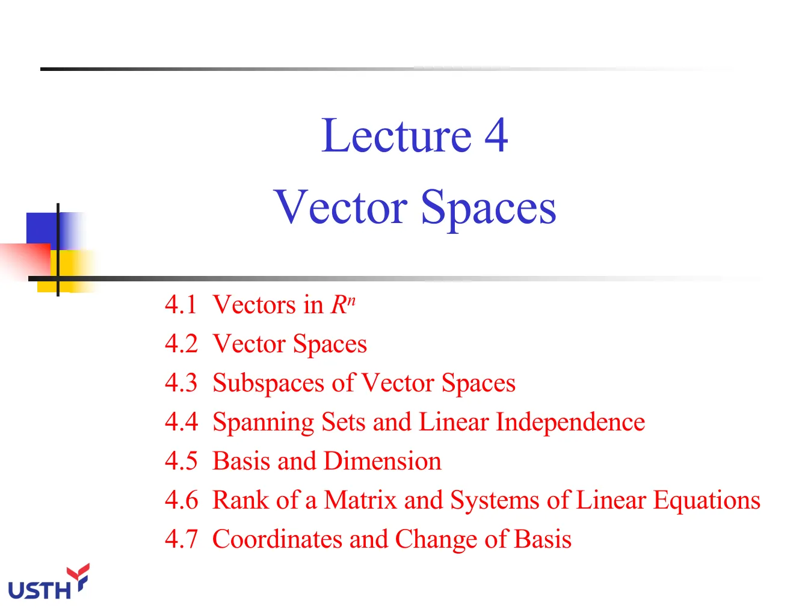
Title slide. Seven sections: 4.1 Vectors in $\mathbb R^n$; 4.2 Vector spaces; 4.3 Subspaces; 4.4 Spanning sets and linear independence; 4.5 Basis and dimension; 4.6 Rank of a matrix and systems of linear equations; 4.7 Coordinates and change of basis.
Slide tiêu đề. Bảy mục: 4.1 Vectơ trong $\mathbb R^n$; 4.2 Không gian vectơ; 4.3 Không gian con; 4.4 Tập sinh và độc lập tuyến tính; 4.5 Cơ sở và số chiều; 4.6 Hạng của ma trận và hệ phương trình tuyến tính; 4.7 Tọa độ và đổi cơ sở.
4.0 Vectors as learned in high school · 4.0 Vectơ như đã học ở phổ thông
★ Context · Bổ trợ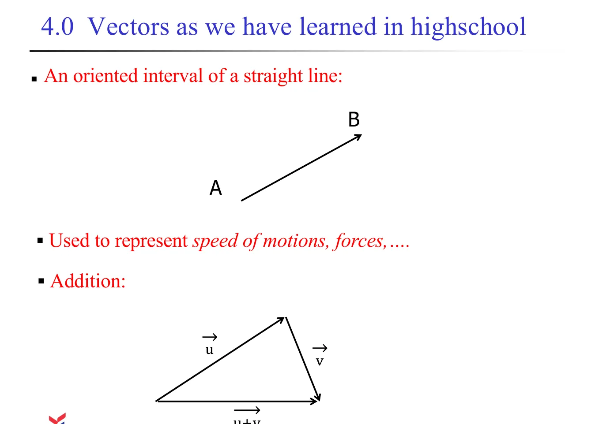
A vector is an oriented segment of a line from $A$ to $B$, used to represent speeds, forces, displacements. Vectors add by the triangle rule: place the start of $\vec v$ at the end of $\vec u$; the sum $\vec u+\vec v$ goes from the start of $\vec u$ to the end of $\vec v$. This geometric picture is what the axioms of 4.2 are designed to keep and to generalise.
Vectơ là một đoạn thẳng có hướng từ $A$ đến $B$, dùng để biểu diễn vận tốc, lực, độ dời. Các vectơ cộng theo quy tắc tam giác: đặt điểm đầu của $\vec v$ vào điểm cuối của $\vec u$; tổng $\vec u+\vec v$ đi từ điểm đầu của $\vec u$ đến điểm cuối của $\vec v$. Hình ảnh hình học này là điều mà các tiên đề ở 4.2 được thiết kế để giữ lại và khái quát hóa.
4.1 Vectors in $\mathbb R^n$: ordered $n$-tuples · 4.1 Vectơ trong $\mathbb R^n$: bộ $n$ số có thứ tự
★★★ Core · Cốt lõi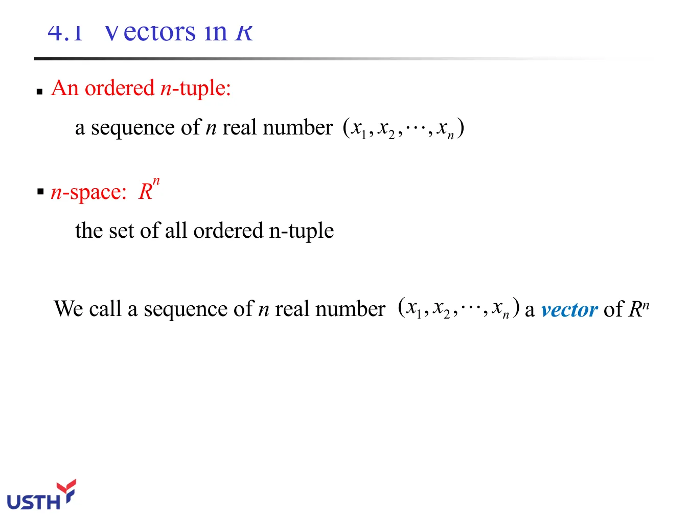
An ordered $n$-tuple is a sequence of $n$ real numbers $(x_1,x_2,\dots,x_n)$. The $n$-space $\mathbb R^n$ is the set of all ordered $n$-tuples, and each element is called a vector of $\mathbb R^n$. Order matters: $(1,2)\ne(2,1)$.
Bộ $n$ số có thứ tự là dãy $n$ số thực $(x_1,x_2,\dots,x_n)$. Không gian $n$ chiều $\mathbb R^n$ là tập mọi bộ $n$ số có thứ tự, và mỗi phần tử gọi là một vectơ của $\mathbb R^n$. Thứ tự quan trọng: $(1,2)\ne(2,1)$.
Examples: $\mathbb R^1$, $\mathbb R^2$, $\mathbb R^3$, $\mathbb R^4$ · Ví dụ: $\mathbb R^1$, $\mathbb R^2$, $\mathbb R^3$, $\mathbb R^4$
★★ Important · Quan trọng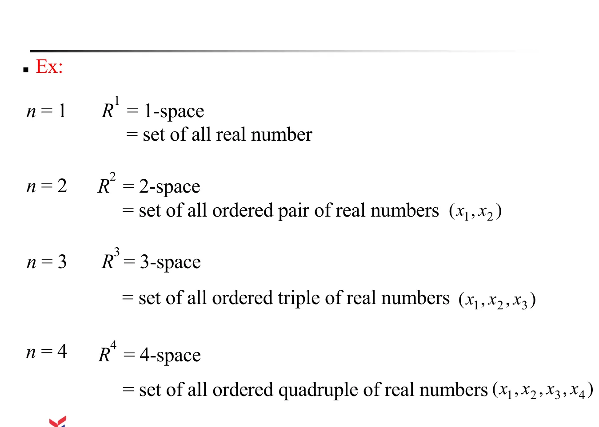
$n=1$: $\mathbb R^1$ is the set of real numbers (the line); $n=2$: ordered pairs $(x_1,x_2)$ (the plane); $n=3$: ordered triples (space); $n=4$: ordered quadruples $(x_1,x_2,x_3,x_4)$, which we cannot draw but treat with exactly the same algebra.
$n=1$: $\mathbb R^1$ là tập số thực (đường thẳng); $n=2$: các cặp $(x_1,x_2)$ (mặt phẳng); $n=3$: các bộ ba (không gian); $n=4$: các bộ bốn $(x_1,x_2,x_3,x_4)$, không vẽ được nhưng xử lý bằng đúng cùng một đại số.
A point or a vector · Điểm hay vectơ
★★ Important · Quan trọng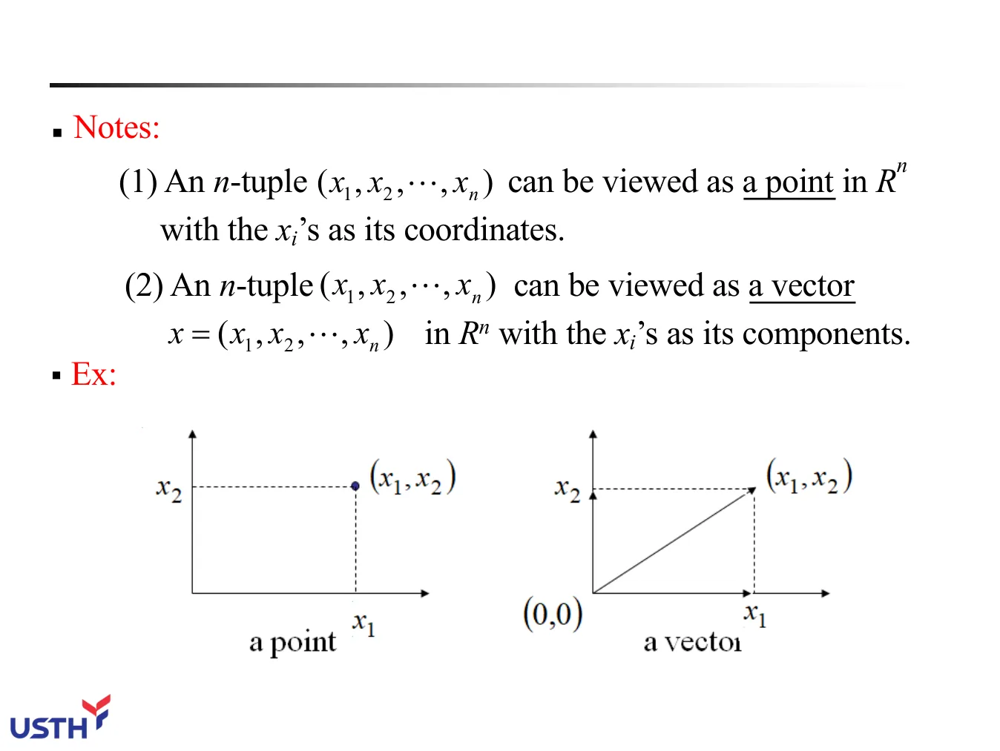
Notes: (1) an $n$-tuple can be viewed as a point in $\mathbb R^n$ with the $x_i$ as coordinates; (2) it can be viewed as a vector $x=(x_1,\dots,x_n)$ with the $x_i$ as components, drawn as an arrow from the origin $(0,0)$ to the point. Same numbers, two pictures; use the one that suits the question.
Lưu ý: (1) một bộ $n$ số có thể xem là một điểm trong $\mathbb R^n$ với $x_i$ là tọa độ; (2) nó có thể xem là một vectơ $x=(x_1,\dots,x_n)$ với $x_i$ là các thành phần, vẽ như mũi tên từ gốc $(0,0)$ đến điểm đó. Cùng các số, hai hình ảnh; dùng cái hợp với câu hỏi.
Equality, addition and scalar multiplication in $\mathbb R^n$ · Bằng nhau, cộng và nhân vô hướng trong $\mathbb R^n$
★★★ Core · Cốt lõi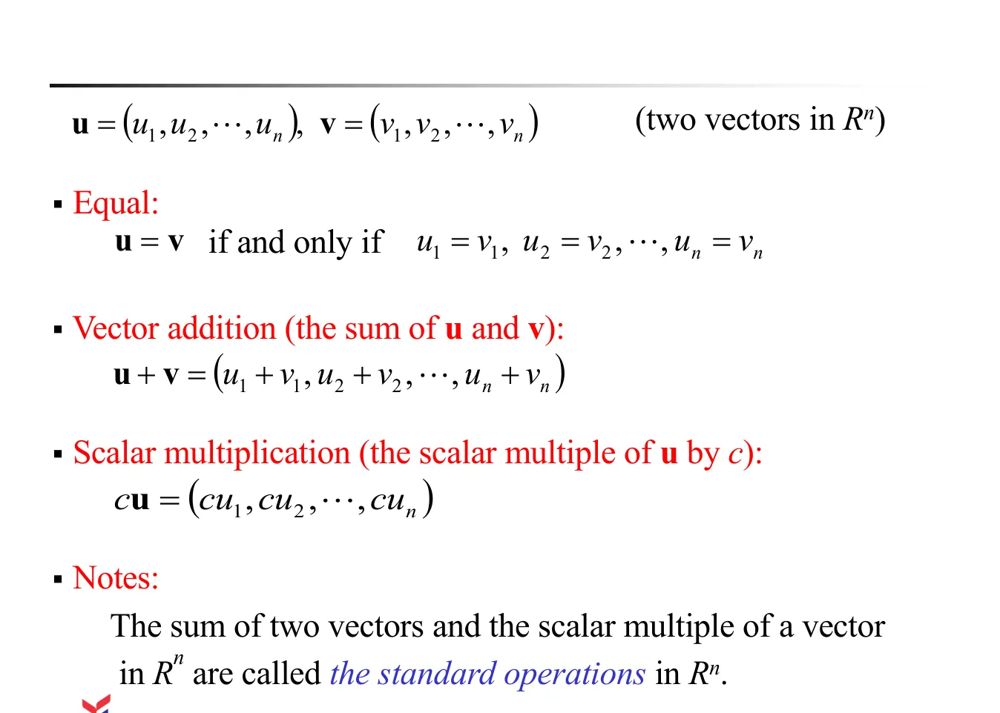
For $u=(u_1,\dots,u_n)$ and $v=(v_1,\dots,v_n)$: equal iff $u_i=v_i$ for all $i$; sum $u+v=(u_1+v_1,\dots,u_n+v_n)$; scalar multiple $cu=(cu_1,\dots,cu_n)$. Everything is done component by component. These are called the standard operations in $\mathbb R^n$.
Với $u=(u_1,\dots,u_n)$ và $v=(v_1,\dots,v_n)$: bằng nhau khi và chỉ khi $u_i=v_i$ với mọi $i$; tổng $u+v=(u_1+v_1,\dots,u_n+v_n)$; bội vô hướng $cu=(cu_1,\dots,cu_n)$. Mọi thứ làm từng thành phần một. Chúng gọi là các phép toán chuẩn trong $\mathbb R^n$.
For $u=(1,2,3)$ and $v=(-1,0,4)$ compute $2u-3v$.
Với $u=(1,2,3)$ và $v=(-1,0,4)$ tính $2u-3v$.
Answer and solution · Đáp án và lời giải
Answer · Đáp án: $(5,4,-6)$
$2u=(2,4,6)$, $3v=(-3,0,12)$, so $2u-3v=(2+3,\ 4-0,\ 6-12)=(5,4,-6)$.
$2u=(2,4,6)$, $3v=(-3,0,12)$, nên $2u-3v=(2+3,\ 4-0,\ 6-12)=(5,4,-6)$.
Negative, difference, zero vector · Vectơ đối, hiệu, vectơ không
★★★ Core · Cốt lõi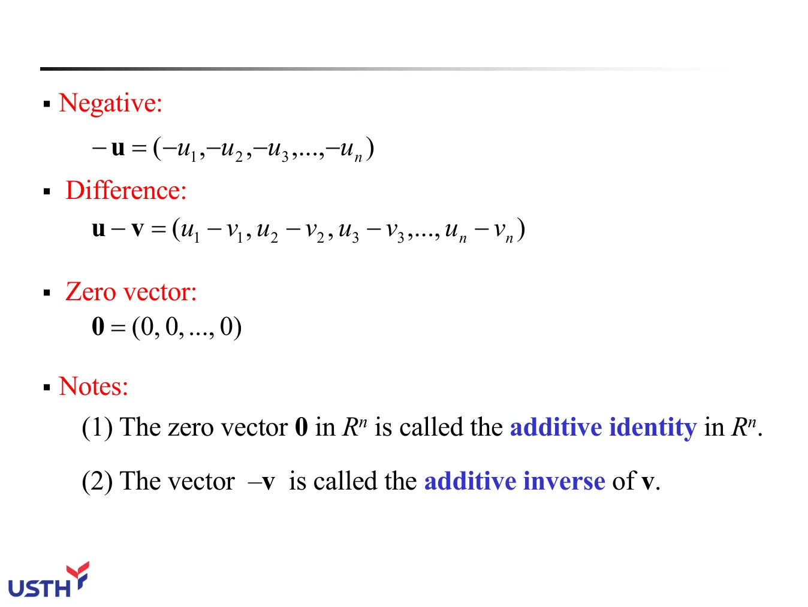
Negative: $-u=(-u_1,\dots,-u_n)$. Difference: $u-v=(u_1-v_1,\dots,u_n-v_n)$. Zero vector: $0=(0,0,\dots,0)$. Notes: (1) the zero vector is the additive identity of $\mathbb R^n$; (2) $-v$ is the additive inverse of $v$.
Vectơ đối: $-u=(-u_1,\dots,-u_n)$. Hiệu: $u-v=(u_1-v_1,\dots,u_n-v_n)$. Vectơ không: $0=(0,0,\dots,0)$. Lưu ý: (1) vectơ không là phần tử đơn vị của phép cộng trong $\mathbb R^n$; (2) $-v$ là phần tử đối của $v$.
Theorem 4.1: ten properties of the standard operations · Định lý 4.1: mười tính chất của phép toán chuẩn
★★★ Core · Cốt lõi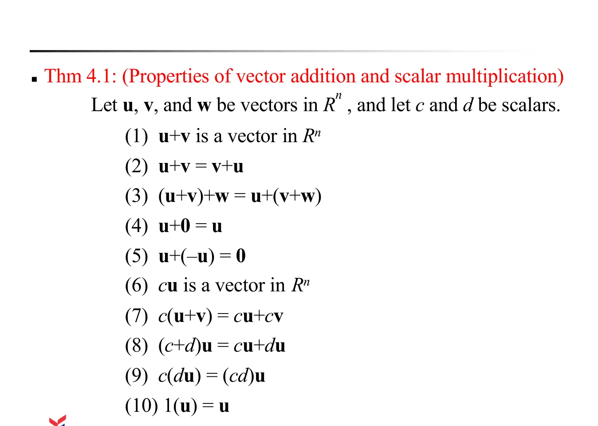
For $u,v,w\in\mathbb R^n$ and scalars $c,d$: (1) $u+v\in\mathbb R^n$; (2) $u+v=v+u$; (3) $(u+v)+w=u+(v+w)$; (4) $u+0=u$; (5) $u+(-u)=0$; (6) $cu\in\mathbb R^n$; (7) $c(u+v)=cu+cv$; (8) $(c+d)u=cu+du$; (9) $c(du)=(cd)u$; (10) $1u=u$. These ten properties will become the axioms that define a vector space.
Với $u,v,w\in\mathbb R^n$ và vô hướng $c,d$: (1) $u+v\in\mathbb R^n$; (2) $u+v=v+u$; (3) $(u+v)+w=u+(v+w)$; (4) $u+0=u$; (5) $u+(-u)=0$; (6) $cu\in\mathbb R^n$; (7) $c(u+v)=cu+cv$; (8) $(c+d)u=cu+du$; (9) $c(du)=(cd)u$; (10) $1u=u$. Mười tính chất này sẽ trở thành các tiên đề định nghĩa không gian vectơ.
Whenever the exam asks you to solve a vector equation, you are using these ten properties exactly as in ordinary algebra.
Mỗi khi đề bài yêu cầu giải một phương trình vectơ, bạn đang dùng đúng mười tính chất này như trong đại số thông thường.
Solve $2(x-u)=3x+v$ for $x$ when $u=(1,0)$ and $v=(2,-1)$, justifying the steps by the properties of Theorem 4.1.
Giải $2(x-u)=3x+v$ theo $x$ khi $u=(1,0)$ và $v=(2,-1)$, giải thích các bước bằng các tính chất của Định lý 4.1.
Answer and solution · Đáp án và lời giải
Answer · Đáp án: $x=(-4,1)$
Distribute (property 7): $2x-2u=3x+v$. Collect: $-x=2u+v$, so $x=-2u-v=(-2-2,\ 0+1)=(-4,1)$. Check: $2(x-u)=2(-5,1)=(-10,2)$ and $3x+v=(-12+2,\ 3-1)=(-10,2)$ ✓.
Phân phối (tính chất 7): $2x-2u=3x+v$. Gom: $-x=2u+v$, nên $x=-2u-v=(-2-2,\ 0+1)=(-4,1)$. Kiểm tra: $2(x-u)=2(-5,1)=(-10,2)$ và $3x+v=(-12+2,\ 3-1)=(-10,2)$ ✓.
Example 5(a): vector equation in $\mathbb R^4$ · Ví dụ 5(a): phương trình vectơ trong $\mathbb R^4$
★★★ Core · Cốt lõi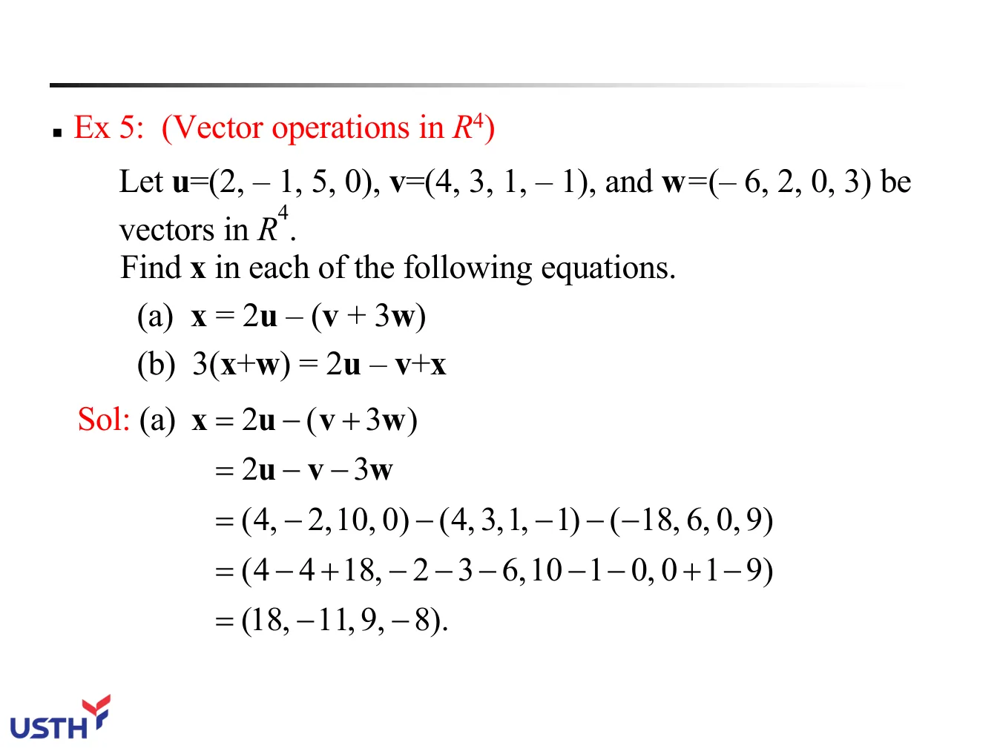
Let $u=(2,-1,5,0)$, $v=(4,3,1,-1)$, $w=(-6,2,0,3)$. (a) $x=2u-(v+3w)=2u-v-3w=(4,-2,10,0)-(4,3,1,-1)-(-18,6,0,9)=(18,-11,9,-8)$. Do the scalar multiples first, then combine the components in one pass.
Cho $u=(2,-1,5,0)$, $v=(4,3,1,-1)$, $w=(-6,2,0,3)$. (a) $x=2u-(v+3w)=2u-v-3w=(4,-2,10,0)-(4,3,1,-1)-(-18,6,0,9)=(18,-11,9,-8)$. Làm các bội vô hướng trước, rồi gộp các thành phần một lượt.
With the same $u,v,w$ compute $x=u+2v-w$.
Với cùng $u,v,w$ tính $x=u+2v-w$.
Answer and solution · Đáp án và lời giải
Answer · Đáp án: $(16,3,7,-5)$
$u=(2,-1,5,0)$, $2v=(8,6,2,-2)$, $-w=(6,-2,0,-3)$; sum: $(2+8+6,\ -1+6-2,\ 5+2+0,\ 0-2-3)=(16,3,7,-5)$.
$u=(2,-1,5,0)$, $2v=(8,6,2,-2)$, $-w=(6,-2,0,-3)$; tổng: $(2+8+6,\ -1+6-2,\ 5+2+0,\ 0-2-3)=(16,3,7,-5)$.
Example 5(b): solving $3(x+w)=2u-v+x$ · Ví dụ 5(b): giải $3(x+w)=2u-v+x$
★★★ Core · Cốt lõi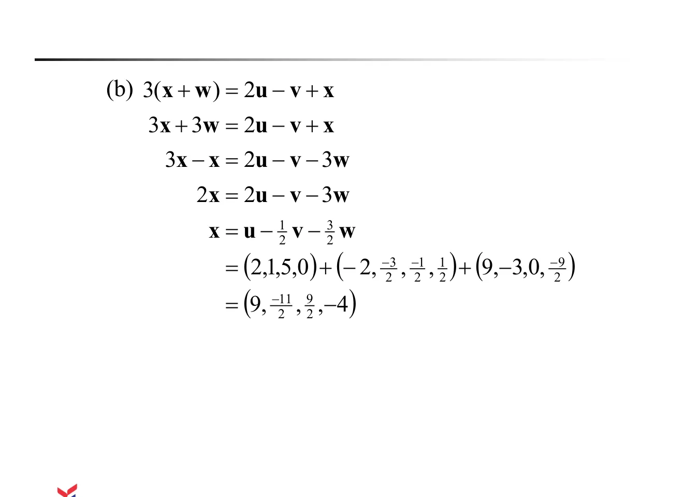
(b) $3(x+w)=2u-v+x\Rightarrow3x+3w=2u-v+x\Rightarrow2x=2u-v-3w\Rightarrow x=u-\frac12v-\frac32w=(2,1,5,0)+(-2,-\frac32,-\frac12,\frac12)+(9,-3,0,-\frac92)=\left(9,-\frac{11}2,\frac92,-4\right)$. Treat the vector unknown exactly like a number: expand, collect the $x$ terms on one side, divide.
(b) $3(x+w)=2u-v+x\Rightarrow3x+3w=2u-v+x\Rightarrow2x=2u-v-3w\Rightarrow x=u-\frac12v-\frac32w=(2,1,5,0)+(-2,-\frac32,-\frac12,\frac12)+(9,-3,0,-\frac92)=\left(9,-\frac{11}2,\frac92,-4\right)$. Xử lý ẩn vectơ y như một số: khai triển, gom các số hạng $x$ về một vế, chia.
Check that $x=\left(9,-\frac{11}2,\frac92,-4\right)$ satisfies $3(x+w)=2u-v+x$.
Kiểm tra $x=\left(9,-\frac{11}2,\frac92,-4\right)$ thỏa $3(x+w)=2u-v+x$.
Answer and solution · Đáp án và lời giải
Answer · Đáp án: both sides equal $\left(27,-\frac{33}2,\frac{27}2,-12\right)-(18,0,0,-9)\ldots$ see solution
$x+w=(3,-\frac72,\frac92,-1)$, so $3(x+w)=(9,-\frac{21}2,\frac{27}2,-3)$. Right side: $2u-v+x=(4,-2,10,0)-(4,3,1,-1)+(9,-\frac{11}2,\frac92,-4)=(9,-\frac{21}2,\frac{27}2,-3)$ ✓.
$x+w=(3,-\frac72,\frac92,-1)$, nên $3(x+w)=(9,-\frac{21}2,\frac{27}2,-3)$. Vế phải: $2u-v+x=(4,-2,10,0)-(4,3,1,-1)+(9,-\frac{11}2,\frac92,-4)=(9,-\frac{21}2,\frac{27}2,-3)$ ✓.
Theorem 4.2: identity and inverse are unique, and more · Định lý 4.2: phần tử đơn vị và phần tử đối là duy nhất, và hơn nữa
★★★ Core · Cốt lõi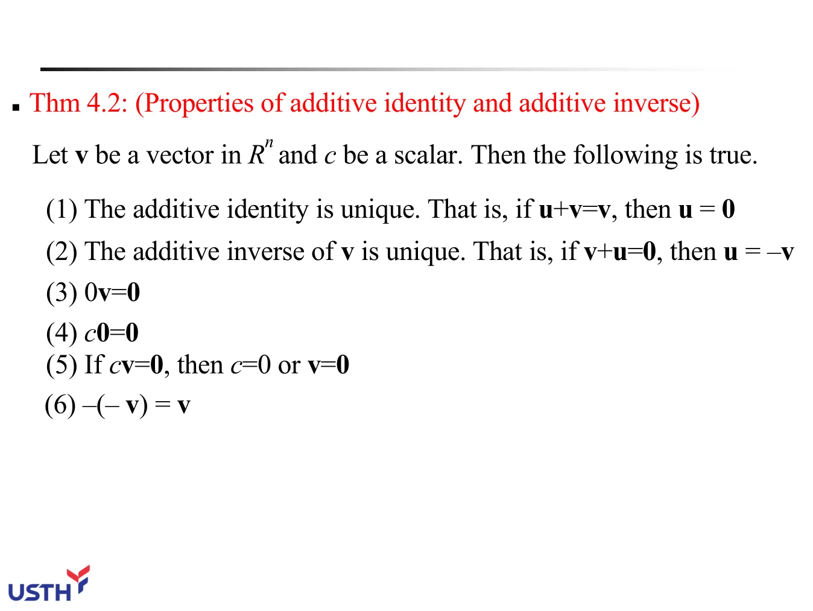
For $v\in\mathbb R^n$ and scalar $c$: (1) the additive identity is unique (if $u+v=v$ then $u=0$); (2) the additive inverse is unique (if $v+u=0$ then $u=-v$); (3) $0v=0$; (4) $c0=0$; (5) if $cv=0$ then $c=0$ or $v=0$; (6) $-(-v)=v$. Property (5) is the vector version of "a product is zero only if a factor is".
Với $v\in\mathbb R^n$ và vô hướng $c$: (1) phần tử đơn vị của phép cộng là duy nhất (nếu $u+v=v$ thì $u=0$); (2) phần tử đối là duy nhất (nếu $v+u=0$ thì $u=-v$); (3) $0v=0$; (4) $c0=0$; (5) nếu $cv=0$ thì $c=0$ hoặc $v=0$; (6) $-(-v)=v$. Tính chất (5) là phiên bản vectơ của "tích bằng không chỉ khi một thừa số bằng không".
Prove from the axioms that $0v=0$ for every vector $v$.
Chứng minh từ các tiên đề rằng $0v=0$ với mọi vectơ $v$.
Answer and solution · Đáp án và lời giải
Answer · Đáp án: $0v=0$ (proof)
By property (8), $0v=(0+0)v=0v+0v$. Add the additive inverse $-(0v)$ to both sides: $0=0v$. Only the axioms (5), (3), (4), (8) were used, so the argument works in every vector space, not only $\mathbb R^n$.
Theo tính chất (8), $0v=(0+0)v=0v+0v$. Cộng phần tử đối $-(0v)$ vào hai vế: $0=0v$. Chỉ dùng các tiên đề (5), (3), (4), (8) nên lập luận đúng trong mọi không gian vectơ, không chỉ $\mathbb R^n$.
Linear combinations · Tổ hợp tuyến tính
★★★ Core · Cốt lõi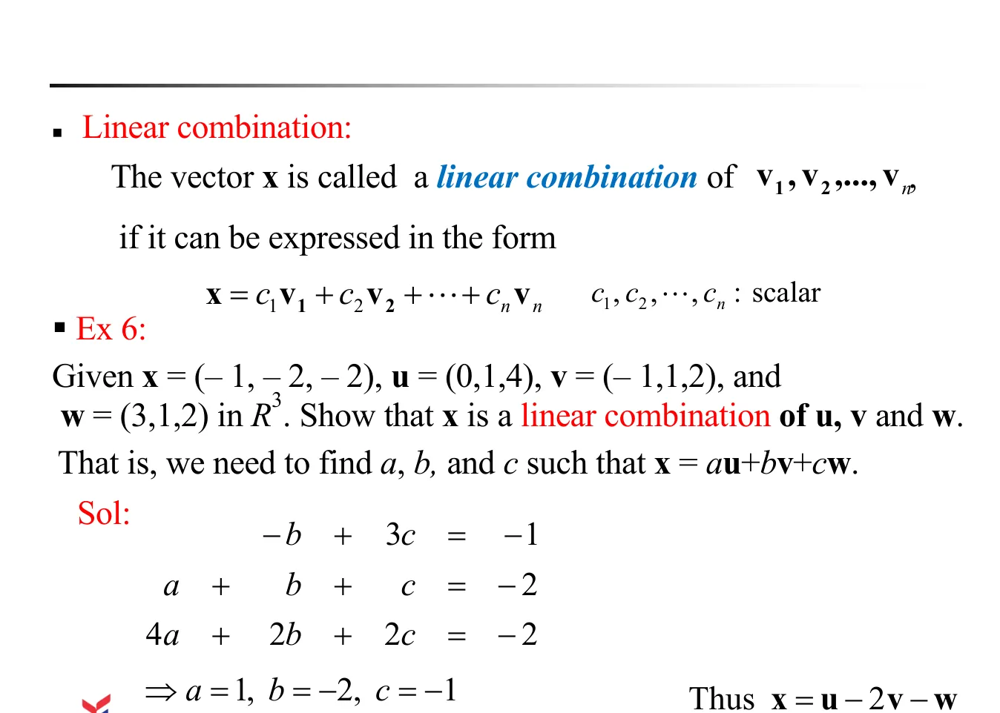
The vector $x$ is a linear combination of $v_1,\dots,v_n$ if $x=c_1v_1+c_2v_2+\cdots+c_nv_n$ for scalars $c_i$. Example 6: show that $x=(-1,-2,-2)$ is a linear combination of $u=(0,1,4)$, $v=(-1,1,2)$, $w=(3,1,2)$; i.e. find $a,b,c$ with $x=au+bv+cw$. This gives the system $-b+3c=-1$, $a+b+c=-2$, $4a+2b+2c=-2$, with solution $a=1$, $b=-2$, $c=-1$, so $x=u-2v-w$. Asking whether a vector is a combination of others always means solving a linear system.
Vectơ $x$ là tổ hợp tuyến tính của $v_1,\dots,v_n$ nếu $x=c_1v_1+c_2v_2+\cdots+c_nv_n$ với các vô hướng $c_i$. Ví dụ 6: chứng tỏ $x=(-1,-2,-2)$ là tổ hợp tuyến tính của $u=(0,1,4)$, $v=(-1,1,2)$, $w=(3,1,2)$; tức tìm $a,b,c$ với $x=au+bv+cw$. Ta được hệ $-b+3c=-1$, $a+b+c=-2$, $4a+2b+2c=-2$, có nghiệm $a=1$, $b=-2$, $c=-1$, nên $x=u-2v-w$. Hỏi một vectơ có là tổ hợp của các vectơ khác hay không luôn nghĩa là giải một hệ tuyến tính.
Write $(4,5)$ as a linear combination of $(1,1)$ and $(1,-1)$.
Viết $(4,5)$ thành tổ hợp tuyến tính của $(1,1)$ và $(1,-1)$.
Answer and solution · Đáp án và lời giải
Answer · Đáp án: $(4,5)=\frac92(1,1)-\frac12(1,-1)$
Solve $a+b=4$, $a-b=5$: adding gives $2a=9$, $a=\frac92$, then $b=-\frac12$. Check: $\frac92-\frac12=4$ and $\frac92+\frac12=5$ ✓.
Giải $a+b=4$, $a-b=5$: cộng được $2a=9$, $a=\frac92$, rồi $b=-\frac12$. Kiểm tra: $\frac92-\frac12=4$ và $\frac92+\frac12=5$ ✓.
Row vectors and column vectors · Vectơ hàng và vectơ cột
★★ Important · Quan trọng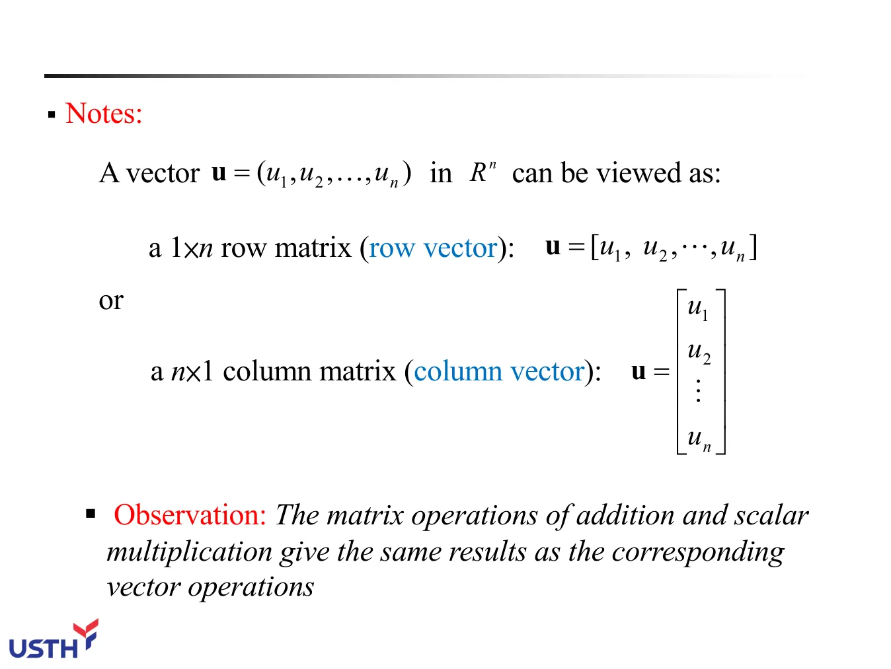
A vector $u=(u_1,\dots,u_n)\in\mathbb R^n$ can be viewed as a $1\times n$ row matrix $[u_1\ u_2\ \cdots\ u_n]$ (row vector) or as an $n\times1$ column matrix (column vector). Observation: the matrix operations of addition and scalar multiplication give the same results as the vector operations. From now on we freely write vectors as columns when multiplying by a matrix.
Vectơ $u=(u_1,\dots,u_n)\in\mathbb R^n$ có thể xem là ma trận hàng $1\times n$ $[u_1\ u_2\ \cdots\ u_n]$ (vectơ hàng) hoặc ma trận cột $n\times1$ (vectơ cột). Quan sát: các phép cộng và nhân vô hướng của ma trận cho cùng kết quả như các phép toán vectơ. Từ nay ta tự do viết vectơ thành cột khi nhân với ma trận.
Vector operations as matrix operations · Phép toán vectơ như phép toán ma trận
★★ Important · Quan trọng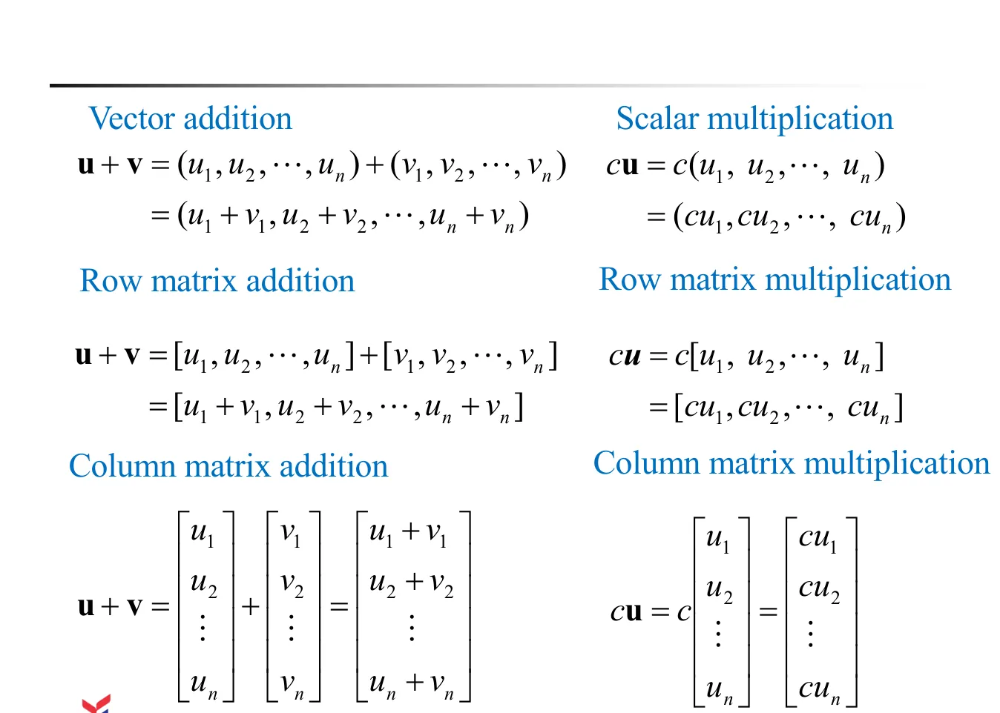
The slide shows the same two operations three times: for vectors $(u_1,\dots,u_n)$, for row matrices $[u_1,\dots,u_n]$ and for column matrices: each time $u+v$ adds entry by entry and $cu$ multiplies every entry by $c$. The three notations are interchangeable.
Slide cho cùng hai phép toán ba lần: với vectơ $(u_1,\dots,u_n)$, với ma trận hàng $[u_1,\dots,u_n]$ và với ma trận cột: mỗi lần $u+v$ cộng từng phần tử và $cu$ nhân mọi phần tử với $c$. Ba ký hiệu có thể dùng thay nhau.
4.2 Vector spaces: the axioms for addition · 4.2 Không gian vectơ: các tiên đề của phép cộng
★★★ Core · Cốt lõi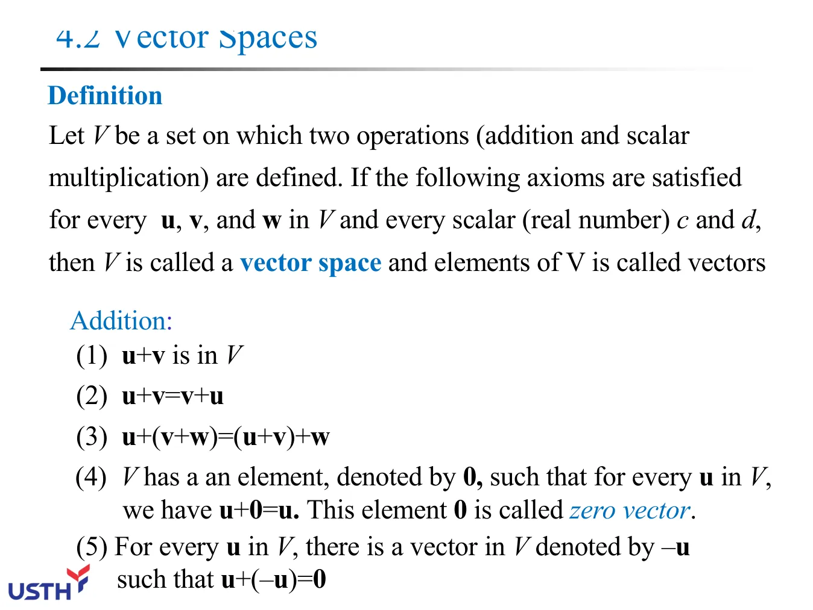
Definition. Let $V$ be a set with two operations, addition and scalar multiplication. If the following ten axioms hold for all $u,v,w\in V$ and scalars $c,d$, then $V$ is a vector space and its elements are vectors. Addition: (1) $u+v\in V$ (closure); (2) $u+v=v+u$; (3) $u+(v+w)=(u+v)+w$; (4) there is $0\in V$ with $u+0=u$ for all $u$ (the zero vector); (5) for every $u$ there is $-u\in V$ with $u+(-u)=0$.
Định nghĩa. Cho $V$ là một tập hợp có hai phép toán, cộng và nhân vô hướng. Nếu mười tiên đề sau đúng với mọi $u,v,w\in V$ và vô hướng $c,d$ thì $V$ là một không gian vectơ và các phần tử của nó là vectơ. Phép cộng: (1) $u+v\in V$ (đóng); (2) $u+v=v+u$; (3) $u+(v+w)=(u+v)+w$; (4) tồn tại $0\in V$ với $u+0=u$ mọi $u$ (vectơ không); (5) với mỗi $u$ tồn tại $-u\in V$ với $u+(-u)=0$.
The axioms are what you quote in a proof; "closure" (1) and (6) are the ones that fail most often.
Các tiên đề là điều bạn trích dẫn trong chứng minh; "tính đóng" (1) và (6) là hai tiên đề hay sai nhất.
In $P_2$ (polynomials of degree at most $2$), identify the zero vector and the additive inverse of $p(x)=1+x-2x^2$.
Trong $P_2$ (đa thức bậc không quá $2$), xác định vectơ không và phần tử đối của $p(x)=1+x-2x^2$.
Answer and solution · Đáp án và lời giải
Answer · Đáp án: $0=0+0x+0x^2$ and $-p=-1-x+2x^2$
The zero vector is the zero polynomial. The inverse flips every coefficient: $p+(-p)=(1-1)+(1-1)x+(-2+2)x^2=0$.
Vectơ không là đa thức không. Phần tử đối đổi dấu mọi hệ số: $p+(-p)=(1-1)+(1-1)x+(-2+2)x^2=0$.
The axioms for scalar multiplication · Các tiên đề của phép nhân vô hướng
★★★ Core · Cốt lõi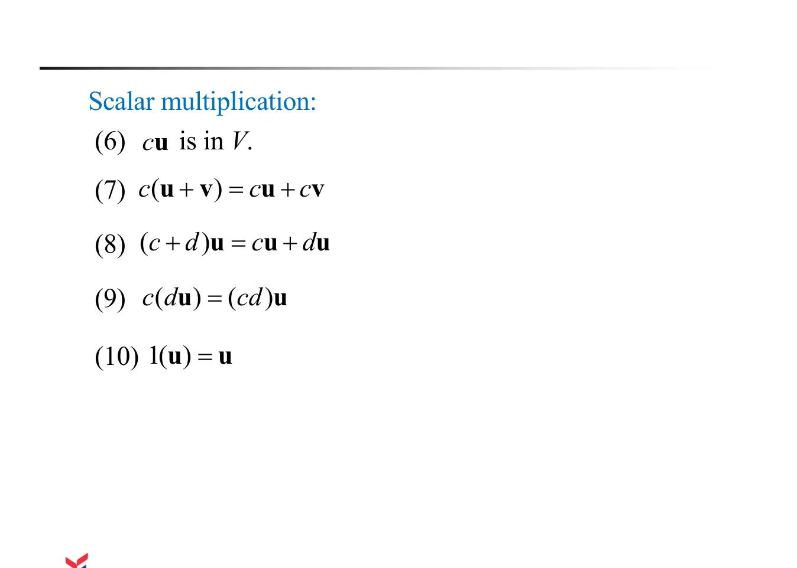
Scalar multiplication: (6) $cu\in V$ (closure); (7) $c(u+v)=cu+cv$; (8) $(c+d)u=cu+du$; (9) $c(du)=(cd)u$; (10) $1u=u$. In all, ten axioms: five for addition, five for scalar multiplication. Axiom (10) looks trivial, yet it is the one that fails in some artificial examples (see slide 22).
Phép nhân vô hướng: (6) $cu\in V$ (đóng); (7) $c(u+v)=cu+cv$; (8) $(c+d)u=cu+du$; (9) $c(du)=(cd)u$; (10) $1u=u$. Tổng cộng mười tiên đề: năm cho phép cộng, năm cho phép nhân vô hướng. Tiên đề (10) trông tầm thường nhưng lại sai trong vài ví dụ nhân tạo (xem slide 22).
Four entities and the zero vector space · Bốn thực thể và không gian vectơ không
★★ Important · Quan trọng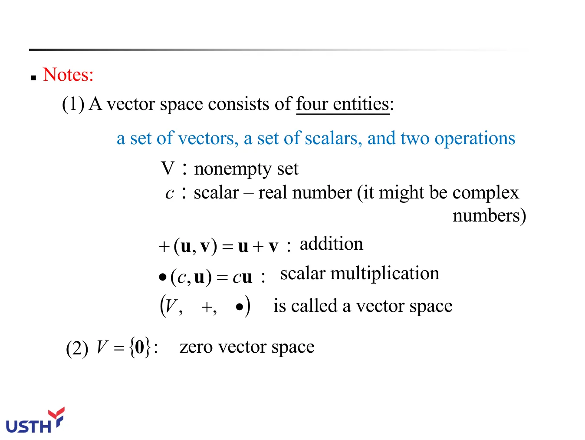
A vector space has four entities: a nonempty set $V$ of vectors, a set of scalars (real numbers; complex numbers would give a complex vector space), an addition $+$ and a scalar multiplication $\cdot$; we write $(V,+,\cdot)$. The smallest vector space is $V=\{0\}$, the zero vector space.
Một không gian vectơ có bốn thực thể: tập khác rỗng $V$ các vectơ, tập các vô hướng (số thực; số phức cho không gian vectơ phức), phép cộng $+$ và phép nhân vô hướng $\cdot$; ta viết $(V,+,\cdot)$. Không gian vectơ nhỏ nhất là $V=\{0\}$, không gian vectơ không.
Check that $V=\{0\}$ with the standard operations satisfies all ten axioms.
Kiểm tra $V=\{0\}$ với các phép toán chuẩn thỏa cả mười tiên đề.
Answer and solution · Đáp án và lời giải
Answer · Đáp án: all ten axioms hold trivially
The only possible vectors are $0$: $0+0=0\in V$ (closure), $c\cdot0=0\in V$, and every identity such as $0+0=0+0$ or $c(0+0)=c0+c0$ is $0=0$. The zero vector is $0$ itself and $-0=0$.
Vectơ duy nhất có thể là $0$: $0+0=0\in V$ (đóng), $c\cdot0=0\in V$, và mọi đẳng thức như $0+0=0+0$ hay $c(0+0)=c0+c0$ đều là $0=0$. Vectơ không là chính $0$ và $-0=0$.
Examples: $\mathbb R^n$ and the matrix space $M_{m\times n}$ · Ví dụ: $\mathbb R^n$ và không gian ma trận $M_{m\times n}$
★★★ Core · Cốt lõi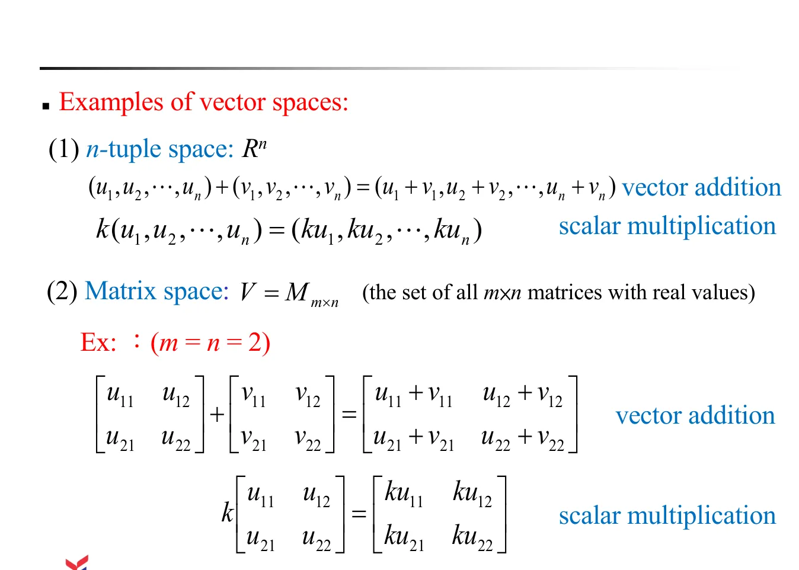
(1) The $n$-tuple space $\mathbb R^n$ with the standard operations. (2) The matrix space $M_{m\times n}$ of all real $m\times n$ matrices, with matrix addition and scalar multiplication: for $m=n=2$ add and scale entry by entry. The zero vector is the zero matrix and the inverse of $A$ is $-A$.
(1) Không gian bộ $n$ số $\mathbb R^n$ với các phép toán chuẩn. (2) Không gian ma trận $M_{m\times n}$ gồm mọi ma trận thực $m\times n$, với phép cộng ma trận và nhân vô hướng: với $m=n=2$ cộng và nhân từng phần tử. Vectơ không là ma trận không và phần tử đối của $A$ là $-A$.
In $M_{2\times2}$ compute $3A-2B$ for $A=\begin{bmatrix}1&0\\2&-1\end{bmatrix}$, $B=\begin{bmatrix}0&1\\1&1\end{bmatrix}$.
Trong $M_{2\times2}$ tính $3A-2B$ với $A=\begin{bmatrix}1&0\\2&-1\end{bmatrix}$, $B=\begin{bmatrix}0&1\\1&1\end{bmatrix}$.
Answer and solution · Đáp án và lời giải
Answer · Đáp án: $\begin{bmatrix}3&-2\\4&-5\end{bmatrix}$
$3A=\begin{bmatrix}3&0\\6&-3\end{bmatrix}$, $2B=\begin{bmatrix}0&2\\2&2\end{bmatrix}$, so $3A-2B=\begin{bmatrix}3&-2\\4&-5\end{bmatrix}$.
$3A=\begin{bmatrix}3&0\\6&-3\end{bmatrix}$, $2B=\begin{bmatrix}0&2\\2&2\end{bmatrix}$, nên $3A-2B=\begin{bmatrix}3&-2\\4&-5\end{bmatrix}$.
Examples: polynomial space and function space · Ví dụ: không gian đa thức và không gian hàm số
★★★ Core · Cốt lõi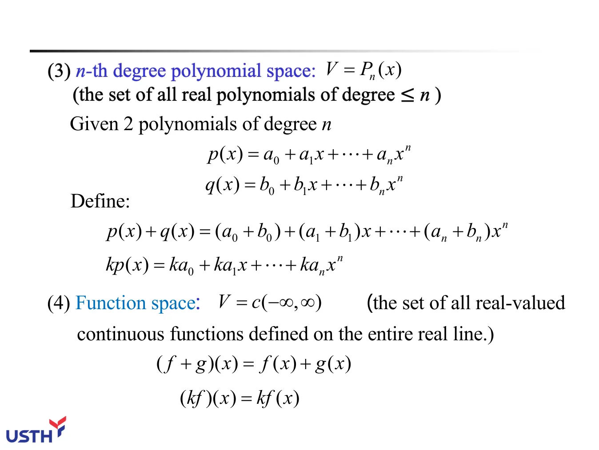
(3) The polynomial space $P_n(x)$: all real polynomials of degree $\le n$ (including the zero polynomial); add and scale coefficient by coefficient. (4) The function space $C(-\infty,\infty)$: all real continuous functions on the real line, with $(f+g)(x)=f(x)+g(x)$ and $(kf)(x)=kf(x)$. Functions are vectors too: this is why the abstract definition pays off.
(3) Không gian đa thức $P_n(x)$: mọi đa thức thực bậc $\le n$ (kể cả đa thức không); cộng và nhân vô hướng theo từng hệ số. (4) Không gian hàm số $C(-\infty,\infty)$: mọi hàm thực liên tục trên toàn trục số, với $(f+g)(x)=f(x)+g(x)$ và $(kf)(x)=kf(x)$. Hàm số cũng là vectơ: đó là lý do định nghĩa trừu tượng có giá trị.
In $P_2$ compute $2p-q$ for $p=1+2x$ and $q=3-x+x^2$.
Trong $P_2$ tính $2p-q$ với $p=1+2x$ và $q=3-x+x^2$.
Answer and solution · Đáp án và lời giải
Answer · Đáp án: $-1+5x-x^2$
$2p=2+4x$; $2p-q=(2-3)+(4+1)x+(0-1)x^2=-1+5x-x^2$. In $C(-\infty,\infty)$ the same recipe would be $(2f-g)(x)=2f(x)-g(x)$.
$2p=2+4x$; $2p-q=(2-3)+(4+1)x+(0-1)x^2=-1+5x-x^2$. Trong $C(-\infty,\infty)$ cùng công thức là $(2f-g)(x)=2f(x)-g(x)$.
Theorem 4.3: properties of scalar multiplication · Định lý 4.3: tính chất của phép nhân vô hướng
★★★ Core · Cốt lõi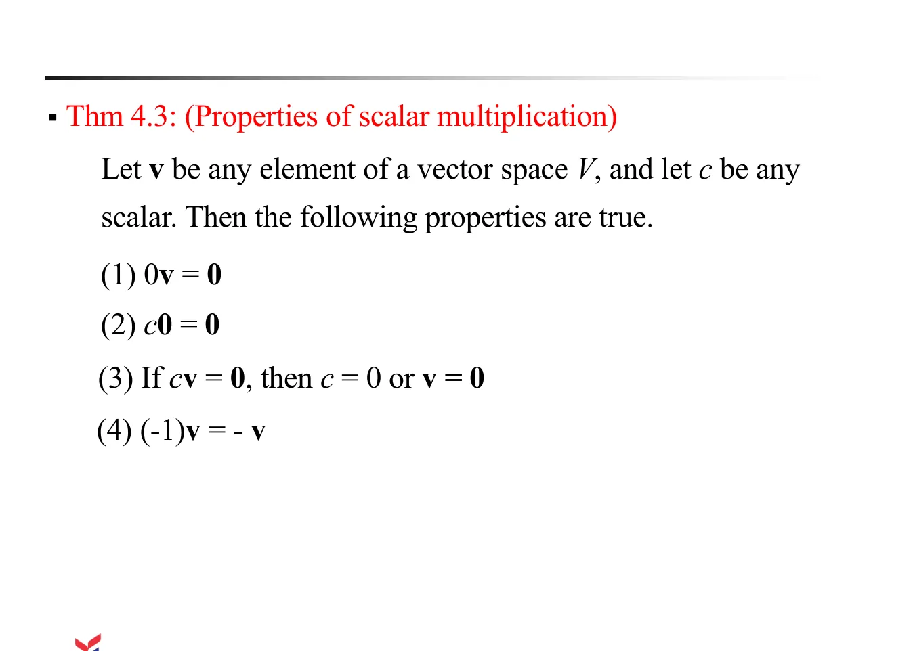
Let $v$ be any element of a vector space $V$ and $c$ any scalar. Then (1) $0v=0$; (2) $c0=0$; (3) if $cv=0$ then $c=0$ or $v=0$; (4) $(-1)v=-v$. These were proved for $\mathbb R^n$ by components; now they follow from the axioms alone, so they hold in every vector space (matrices, polynomials, functions).
Cho $v$ là phần tử bất kỳ của không gian vectơ $V$ và $c$ vô hướng bất kỳ. Khi đó (1) $0v=0$; (2) $c0=0$; (3) nếu $cv=0$ thì $c=0$ hoặc $v=0$; (4) $(-1)v=-v$. Các tính chất này đã được chứng minh cho $\mathbb R^n$ bằng thành phần; nay chúng suy ra chỉ từ các tiên đề, nên đúng trong mọi không gian vectơ (ma trận, đa thức, hàm số).
Prove $(-1)v=-v$ using axioms (8), (10), (5) and $0v=0$.
Chứng minh $(-1)v=-v$ dùng các tiên đề (8), (10), (5) và $0v=0$.
Answer and solution · Đáp án và lời giải
Answer · Đáp án: $(-1)v=-v$ (proof)
$v+(-1)v=1v+(-1)v=(1+(-1))v=0v=0$ by (10), (8) and $0v=0$. So $(-1)v$ is an additive inverse of $v$; by uniqueness of the inverse (Theorem 4.2), $(-1)v=-v$.
$v+(-1)v=1v+(-1)v=(1+(-1))v=0v=0$ theo (10), (8) và $0v=0$. Vậy $(-1)v$ là một phần tử đối của $v$; theo tính duy nhất của phần tử đối (Định lý 4.2), $(-1)v=-v$.
Showing a set is not a vector space: one failed axiom · Chứng minh một tập không là không gian vectơ: một tiên đề sai
★★★ Core · Cốt lõi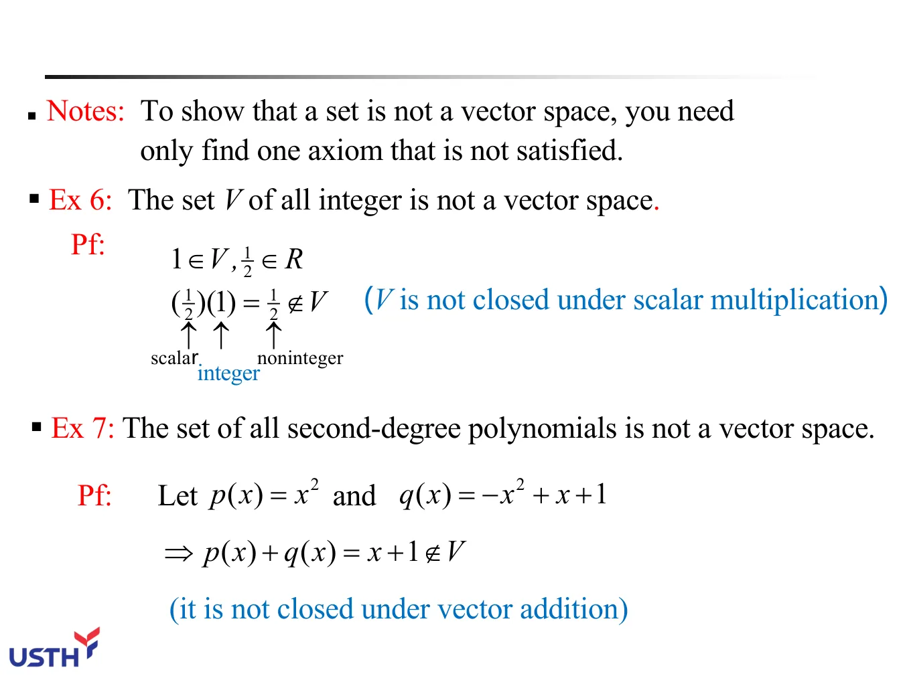
Note: to show a set is not a vector space it is enough to find one axiom that fails. Ex 6: the set of all integers is not a vector space: $1\in V$ and $\frac12\in\mathbb R$ but $\frac12\cdot1=\frac12\notin V$ (not closed under scalar multiplication). Ex 7: the set of all second-degree polynomials is not a vector space: $p=x^2$ and $q=-x^2+x+1$ are in $V$ but $p+q=x+1\notin V$ (not closed under addition).
Lưu ý: để chứng tỏ một tập không là không gian vectơ chỉ cần tìm một tiên đề sai. Ví dụ 6: tập mọi số nguyên không phải không gian vectơ: $1\in V$ và $\frac12\in\mathbb R$ nhưng $\frac12\cdot1=\frac12\notin V$ (không đóng với phép nhân vô hướng). Ví dụ 7: tập mọi đa thức bậc hai không phải không gian vectơ: $p=x^2$ và $q=-x^2+x+1$ thuộc $V$ nhưng $p+q=x+1\notin V$ (không đóng với phép cộng).
Show that $V=\{(x,y):x\ge0\}$ with the standard operations is not a vector space.
Chứng tỏ $V=\{(x,y):x\ge0\}$ với các phép toán chuẩn không là không gian vectơ.
Answer and solution · Đáp án và lời giải
Answer · Đáp án: not closed under scalar multiplication
$(1,0)\in V$ but $(-1)(1,0)=(-1,0)\notin V$ because $-1<0$. Axiom (6) fails, which is enough. (Axiom (5) also fails: $(1,0)$ has no inverse in $V$.)
$(1,0)\in V$ nhưng $(-1)(1,0)=(-1,0)\notin V$ vì $-1<0$. Tiên đề (6) sai, như vậy là đủ. (Tiên đề (5) cũng sai: $(1,0)$ không có phần tử đối trong $V$.)
Example 8: strange operations on $\mathbb R^2$ · Ví dụ 8: các phép toán lạ trên $\mathbb R^2$
★★★ Core · Cốt lõi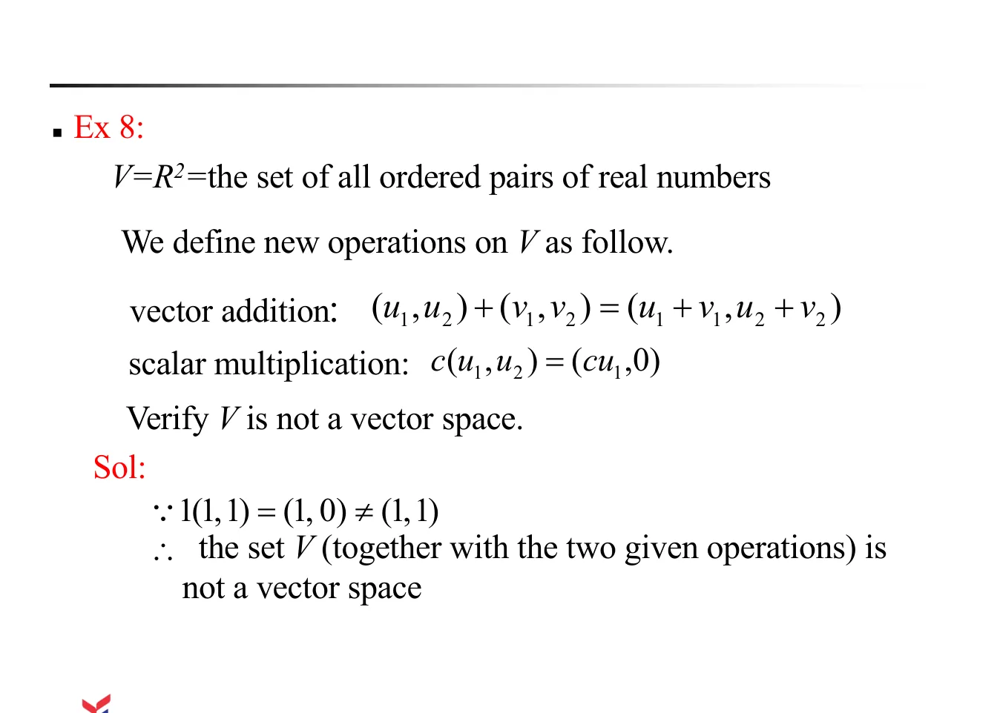
$V=\mathbb R^2$ with addition $(u_1,u_2)+(v_1,v_2)=(u_1+v_1,u_2+v_2)$ but the new scalar multiplication $c(u_1,u_2)=(cu_1,0)$. Verify that $V$ is not a vector space: $1(1,1)=(1,0)\ne(1,1)$, so axiom (10) fails. This example shows axiom (10) is independent of the others: the first nine hold here.
$V=\mathbb R^2$ với phép cộng $(u_1,u_2)+(v_1,v_2)=(u_1+v_1,u_2+v_2)$ nhưng phép nhân vô hướng mới $c(u_1,u_2)=(cu_1,0)$. Kiểm tra $V$ không là không gian vectơ: $1(1,1)=(1,0)\ne(1,1)$ nên tiên đề (10) sai. Ví dụ này cho thấy tiên đề (10) độc lập với các tiên đề khác: chín tiên đề đầu vẫn đúng ở đây.
On $\mathbb R^2$ define $c(u_1,u_2)=(c^2u_1,c^2u_2)$ with the usual addition. Which axiom fails? Give numbers.
Trên $\mathbb R^2$ định nghĩa $c(u_1,u_2)=(c^2u_1,c^2u_2)$ với phép cộng thường. Tiên đề nào sai? Cho số cụ thể.
Answer and solution · Đáp án và lời giải
Answer · Đáp án: axiom (8): $(c+d)u\ne cu+du$
Take $c=d=1$ and $u=(1,1)$: $(c+d)u=2(1,1)=(4,4)$ but $cu+du=(1,1)+(1,1)=(2,2)$. So (8) fails (although (10) holds here, as $1^2=1$).
Lấy $c=d=1$ và $u=(1,1)$: $(c+d)u=2(1,1)=(4,4)$ nhưng $cu+du=(1,1)+(1,1)=(2,2)$. Vậy (8) sai (dù (10) đúng ở đây vì $1^2=1$).
4.3 Subspaces · 4.3 Không gian con
★★★ Core · Cốt lõi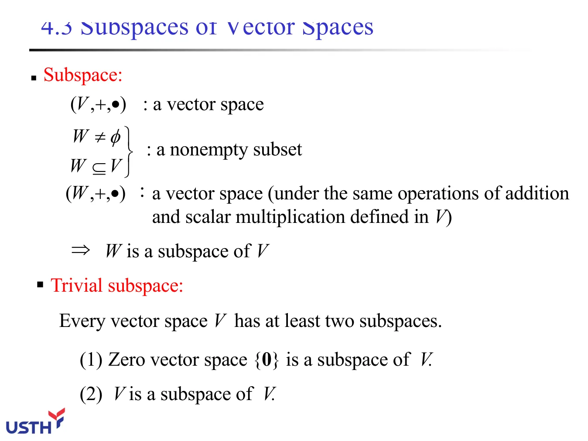
Let $(V,+,\cdot)$ be a vector space and $W\ne\emptyset$ a subset of $V$. If $W$ is itself a vector space under the same addition and scalar multiplication, $W$ is a subspace of $V$. Trivial subspaces: every vector space $V$ has at least two: $\{0\}$ and $V$ itself.
Cho $(V,+,\cdot)$ là không gian vectơ và $W\ne\emptyset$ là tập con của $V$. Nếu $W$ tự nó là không gian vectơ với cùng phép cộng và nhân vô hướng thì $W$ là không gian con của $V$. Không gian con tầm thường: mọi không gian vectơ $V$ có ít nhất hai: $\{0\}$ và chính $V$.
Theorem 4.4: the subspace test · Định lý 4.4: tiêu chuẩn không gian con
★★★ Core · Cốt lõi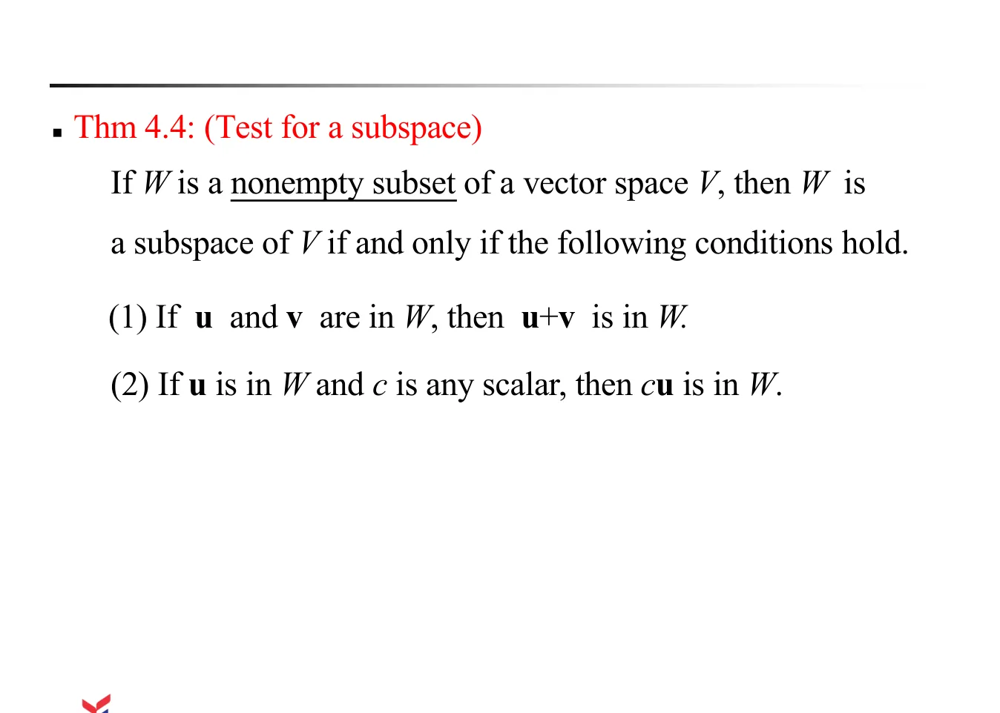
Theorem 4.4. A nonempty subset $W$ of a vector space $V$ is a subspace of $V$ if and only if (1) $u,v\in W\Rightarrow u+v\in W$ (closed under addition) and (2) $u\in W$, $c$ scalar $\Rightarrow cu\in W$ (closed under scalar multiplication). Only two checks instead of ten, because the other axioms are inherited from $V$. In practice also check $0\in W$ first (it follows from (2) with $c=0$).
Định lý 4.4. Tập con khác rỗng $W$ của không gian vectơ $V$ là không gian con của $V$ khi và chỉ khi (1) $u,v\in W\Rightarrow u+v\in W$ (đóng với phép cộng) và (2) $u\in W$, $c$ vô hướng $\Rightarrow cu\in W$ (đóng với phép nhân vô hướng). Chỉ hai phép kiểm tra thay cho mười, vì các tiên đề khác được thừa hưởng từ $V$. Trong thực hành hãy kiểm tra $0\in W$ trước (nó suy ra từ (2) với $c=0$).
The subspace test is asked in every exam: state the two closure conditions, prove them with general elements, or give one counterexample.
Phép thử không gian con có trong mọi đề thi: nêu hai điều kiện đóng, chứng minh với phần tử tổng quát, hoặc cho một phản ví dụ.
Show that $W=\{(a,b,a+b):a,b\in\mathbb R\}$ is a subspace of $\mathbb R^3$.
Chứng tỏ $W=\{(a,b,a+b):a,b\in\mathbb R\}$ là không gian con của $\mathbb R^3$.
Answer and solution · Đáp án và lời giải
Answer · Đáp án: closed under both operations, so a subspace
Take $u=(a,b,a+b)$, $v=(c,d,c+d)$: $u+v=(a+c,\ b+d,\ (a+b)+(c+d))=(a+c,\ b+d,\ (a+c)+(b+d))\in W$. And $ku=(ka,kb,k(a+b))=(ka,kb,ka+kb)\in W$. Also $0=(0,0,0)\in W$.
Lấy $u=(a,b,a+b)$, $v=(c,d,c+d)$: $u+v=(a+c,\ b+d,\ (a+b)+(c+d))=(a+c,\ b+d,\ (a+c)+(b+d))\in W$. Và $ku=(ka,kb,k(a+b))=(ka,kb,ka+kb)\in W$. Ngoài ra $0=(0,0,0)\in W$.
Subspaces of $\mathbb R^2$ and $\mathbb R^3$ · Không gian con của $\mathbb R^2$ và $\mathbb R^3$
★★★ Core · Cốt lõi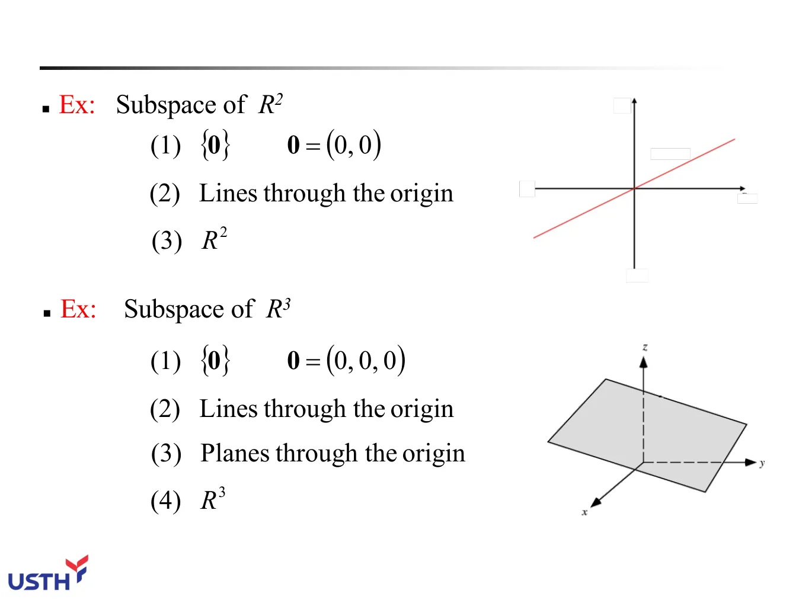
Subspaces of $\mathbb R^2$: $\{0\}$, the lines through the origin, and $\mathbb R^2$. Subspaces of $\mathbb R^3$: $\{0\}$, lines through the origin, planes through the origin, and $\mathbb R^3$. Remember: a subspace must contain the origin, so a line or plane that misses the origin is not a subspace.
Không gian con của $\mathbb R^2$: $\{0\}$, các đường thẳng qua gốc, và $\mathbb R^2$. Không gian con của $\mathbb R^3$: $\{0\}$, các đường thẳng qua gốc, các mặt phẳng qua gốc, và $\mathbb R^3$. Nhớ: không gian con phải chứa gốc, nên đường thẳng hay mặt phẳng không qua gốc không là không gian con.
Decide whether the planes $x+y+z=0$ and $x+y+z=1$ are subspaces of $\mathbb R^3$.
Xác định các mặt phẳng $x+y+z=0$ và $x+y+z=1$ có là không gian con của $\mathbb R^3$ không.
Answer and solution · Đáp án và lời giải
Answer · Đáp án: the first is, the second is not
$x+y+z=0$ contains the origin and is closed under addition and scaling (the equation is linear and homogeneous). $x+y+z=1$ does not contain $(0,0,0)$, since $0+0+0\ne1$.
$x+y+z=0$ chứa gốc và đóng với phép cộng và nhân vô hướng (phương trình tuyến tính thuần nhất). $x+y+z=1$ không chứa $(0,0,0)$ vì $0+0+0\ne1$.
Example 2: symmetric matrices form a subspace · Ví dụ 2: các ma trận đối xứng tạo thành không gian con
★★★ Core · Cốt lõi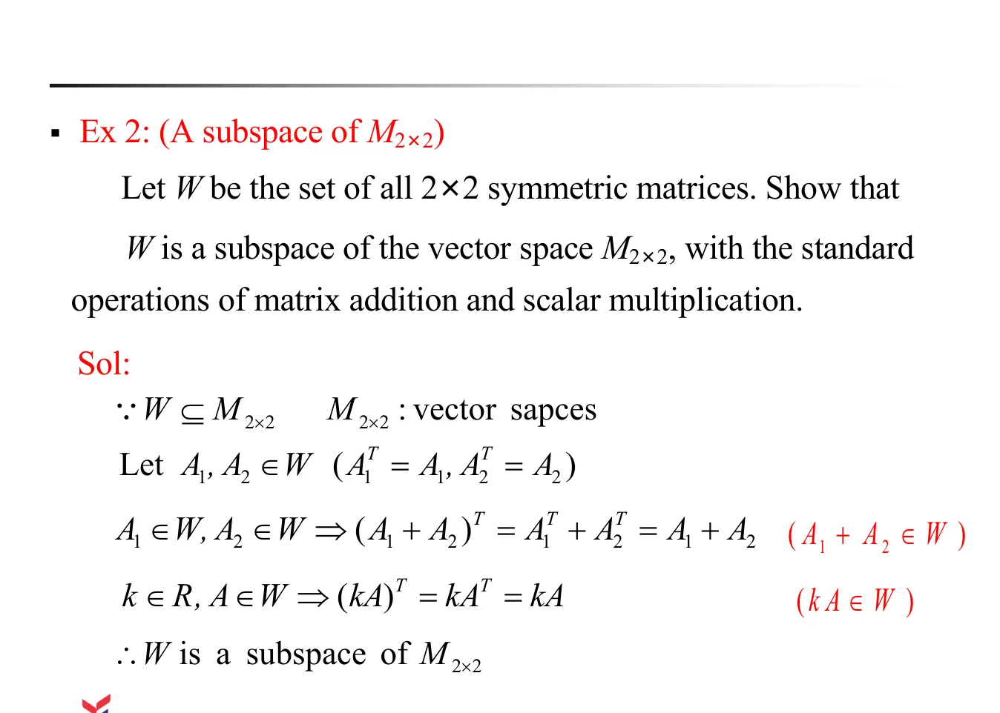
Let $W$ be the set of $2\times2$ symmetric matrices ($A^T=A$). $W\subseteq M_{2\times2}$ and $M_{2\times2}$ is a vector space. For $A_1,A_2\in W$: $(A_1+A_2)^T=A_1^T+A_2^T=A_1+A_2$, so $A_1+A_2\in W$; for $k\in\mathbb R$: $(kA)^T=kA^T=kA$, so $kA\in W$. Hence $W$ is a subspace of $M_{2\times2}$. Note how the transpose rules do all the work.
Cho $W$ là tập các ma trận đối xứng $2\times2$ ($A^T=A$). $W\subseteq M_{2\times2}$ và $M_{2\times2}$ là không gian vectơ. Với $A_1,A_2\in W$: $(A_1+A_2)^T=A_1^T+A_2^T=A_1+A_2$, nên $A_1+A_2\in W$; với $k\in\mathbb R$: $(kA)^T=kA^T=kA$, nên $kA\in W$. Do đó $W$ là không gian con của $M_{2\times2}$. Chú ý các quy tắc chuyển vị làm toàn bộ công việc.
Show that the set of $2\times2$ upper triangular matrices is a subspace of $M_{2\times2}$.
Chứng tỏ tập các ma trận tam giác trên $2\times2$ là không gian con của $M_{2\times2}$.
Answer and solution · Đáp án và lời giải
Answer · Đáp án: closed under addition and scaling
$\begin{bmatrix}a&b\\0&c\end{bmatrix}+\begin{bmatrix}d&w\\0&z\end{bmatrix}=\begin{bmatrix}a+d&b+w\\0&c+z\end{bmatrix}$ and $k\begin{bmatrix}a&b\\0&c\end{bmatrix}=\begin{bmatrix}ka&kb\\0&kc\end{bmatrix}$: the $(2,1)$ entry stays $0$.
$\begin{bmatrix}a&b\\0&c\end{bmatrix}+\begin{bmatrix}d&w\\0&z\end{bmatrix}=\begin{bmatrix}a+d&b+w\\0&c+z\end{bmatrix}$ và $k\begin{bmatrix}a&b\\0&c\end{bmatrix}=\begin{bmatrix}ka&kb\\0&kc\end{bmatrix}$: phần tử $(2,1)$ vẫn bằng $0$.
Example 3: singular matrices are not a subspace · Ví dụ 3: ma trận suy biến không là không gian con
★★★ Core · Cốt lõi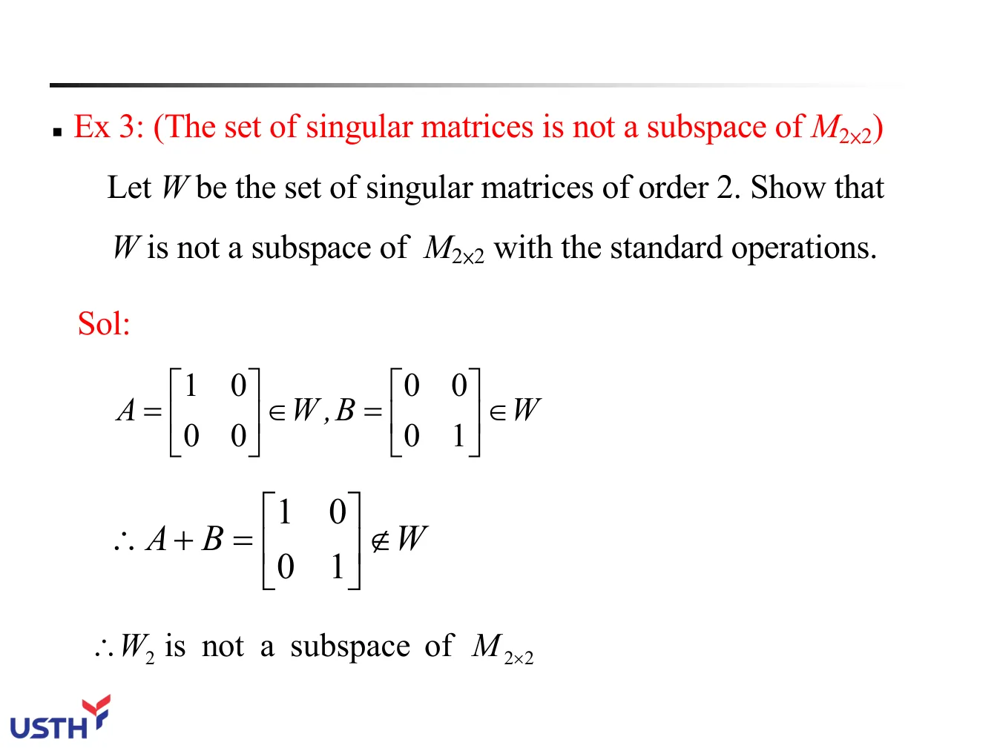
Let $W$ be the set of singular $2\times2$ matrices. It is not a subspace of $M_{2\times2}$: $A=\begin{bmatrix}1&0\\0&0\end{bmatrix}$ and $B=\begin{bmatrix}0&0\\0&1\end{bmatrix}$ are singular, but $A+B=\begin{bmatrix}1&0\\0&1\end{bmatrix}=I$ is not. The set is not closed under addition. (It is closed under scalar multiplication, which shows both closure conditions are needed.)
Cho $W$ là tập các ma trận $2\times2$ suy biến. Nó không là không gian con của $M_{2\times2}$: $A=\begin{bmatrix}1&0\\0&0\end{bmatrix}$ và $B=\begin{bmatrix}0&0\\0&1\end{bmatrix}$ suy biến, nhưng $A+B=\begin{bmatrix}1&0\\0&1\end{bmatrix}=I$ thì không. Tập không đóng với phép cộng. (Nó đóng với phép nhân vô hướng, cho thấy cần cả hai điều kiện đóng.)
Is the set of invertible $2\times2$ matrices a subspace? Give a reason.
Tập các ma trận $2\times2$ khả nghịch có là không gian con không? Nêu lý do.
Answer and solution · Đáp án và lời giải
Answer · Đáp án: no: it does not contain the zero matrix
$I$ and $-I$ are invertible, but $I+(-I)=0$ has $\det0=0$. Also $0\cdot I=0$ is not invertible, so the set is not closed under scalar multiplication either.
$I$ và $-I$ khả nghịch, nhưng $I+(-I)=0$ có $\det0=0$. Ngoài ra $0\cdot I=0$ không khả nghịch, nên tập cũng không đóng với phép nhân vô hướng.
Example 4: the first quadrant is not a subspace · Ví dụ 4: góc phần tư thứ nhất không là không gian con
★★★ Core · Cốt lõi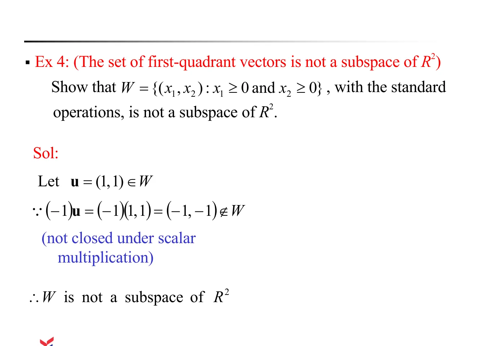
$W=\{(x_1,x_2):x_1\ge0,\ x_2\ge0\}$ is not a subspace of $\mathbb R^2$: $u=(1,1)\in W$ but $(-1)u=(-1,-1)\notin W$: not closed under scalar multiplication. (It is closed under addition: closure under one operation is never enough.)
$W=\{(x_1,x_2):x_1\ge0,\ x_2\ge0\}$ không là không gian con của $\mathbb R^2$: $u=(1,1)\in W$ nhưng $(-1)u=(-1,-1)\notin W$: không đóng với phép nhân vô hướng. (Nó đóng với phép cộng: đóng với một phép toán không bao giờ đủ.)
Is $W=\{(x,y):xy\ge0\}$ a subspace of $\mathbb R^2$?
$W=\{(x,y):xy\ge0\}$ có là không gian con của $\mathbb R^2$ không?
Answer and solution · Đáp án và lời giải
Answer · Đáp án: no: not closed under addition
$(2,1)$ and $(-1,-3)$ are in $W$ (products $2$ and $3$), but their sum $(1,-2)$ has $xy=-2<0$. It is closed under scalar multiplication ($(cx)(cy)=c^2xy\ge0$) but not under addition.
$(2,1)$ và $(-1,-3)$ thuộc $W$ (tích $2$ và $3$), nhưng tổng $(1,-2)$ có $xy=-2<0$. Nó đóng với phép nhân vô hướng ($(cx)(cy)=c^2xy\ge0$) nhưng không đóng với phép cộng.
Example 6(a): the line $x+2y=0$ · Ví dụ 6(a): đường thẳng $x+2y=0$
★★★ Core · Cốt lõi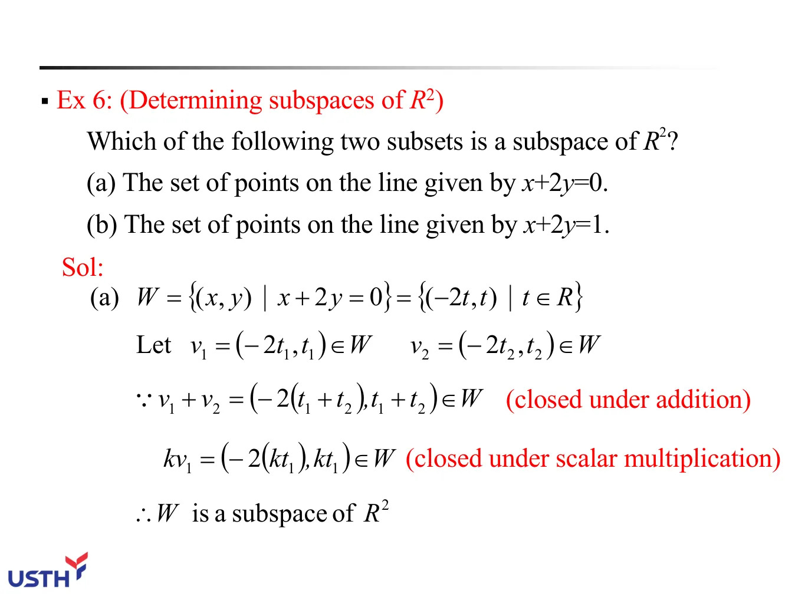
Which of these lines is a subspace of $\mathbb R^2$? (a) $x+2y=0$: $W=\{(-2t,t):t\in\mathbb R\}$. For $v_1=(-2t_1,t_1)$ and $v_2=(-2t_2,t_2)$: $v_1+v_2=(-2(t_1+t_2),t_1+t_2)\in W$ and $kv_1=(-2(kt_1),kt_1)\in W$. So $W$ is a subspace. Parametrise first: then closure is immediate.
Đường thẳng nào sau đây là không gian con của $\mathbb R^2$? (a) $x+2y=0$: $W=\{(-2t,t):t\in\mathbb R\}$. Với $v_1=(-2t_1,t_1)$ và $v_2=(-2t_2,t_2)$: $v_1+v_2=(-2(t_1+t_2),t_1+t_2)\in W$ và $kv_1=(-2(kt_1),kt_1)\in W$. Vậy $W$ là không gian con. Hãy tham số hóa trước: khi đó tính đóng là hiển nhiên.
Decide for the lines $3x-y=0$ and $3x-y=2$.
Xét các đường thẳng $3x-y=0$ và $3x-y=2$.
Answer and solution · Đáp án và lời giải
Answer · Đáp án: the first is a subspace; the second is not
$3x-y=0$ is $\{(t,3t)\}$, closed under both operations. $3x-y=2$ misses the origin ($3\cdot0-0=0\ne2$), so it cannot be a subspace.
$3x-y=0$ là $\{(t,3t)\}$, đóng với cả hai phép toán. $3x-y=2$ không qua gốc ($3\cdot0-0=0\ne2$) nên không thể là không gian con.
Example 6(b): the line $x+2y=1$ · Ví dụ 6(b): đường thẳng $x+2y=1$
★★★ Core · Cốt lõi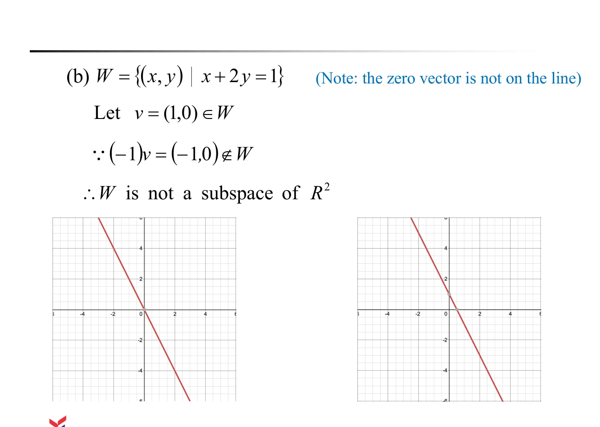
(b) $W=\{(x,y):x+2y=1\}$. Take $v=(1,0)\in W$; then $(-1)v=(-1,0)\notin W$ since $-1+0\ne1$. So $W$ is not a subspace. Note (as in the figures) the line does not pass through the origin: the zero vector is not in $W$. The two parallel lines look alike, but only the one through $0$ is a subspace.
(b) $W=\{(x,y):x+2y=1\}$. Lấy $v=(1,0)\in W$; khi đó $(-1)v=(-1,0)\notin W$ vì $-1+0\ne1$. Vậy $W$ không là không gian con. Chú ý (như trên hình) đường thẳng không đi qua gốc: vectơ không không thuộc $W$. Hai đường song song trông giống nhau nhưng chỉ đường qua $0$ là không gian con.
Example 8: subspaces of $\mathbb R^3$ · Ví dụ 8: các không gian con của $\mathbb R^3$
★★★ Core · Cốt lõi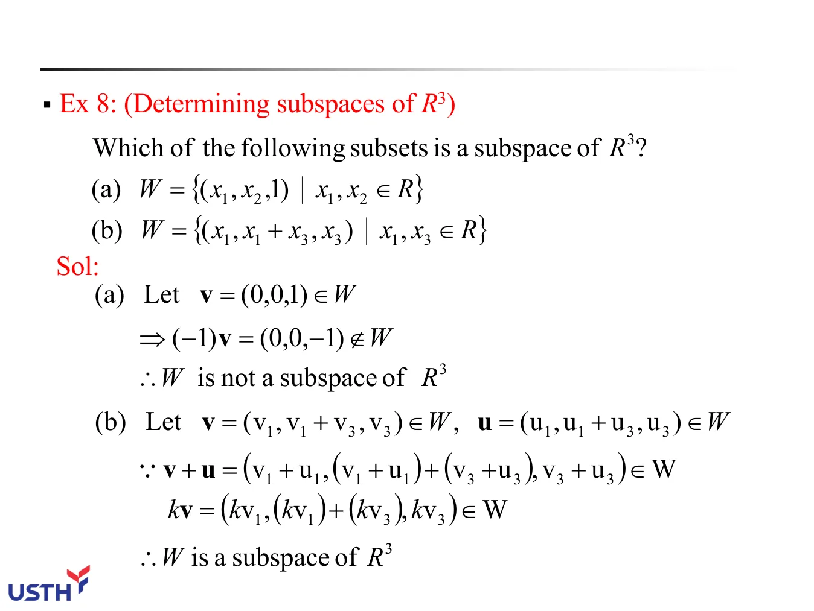
(a) $W=\{(x_1,x_2,1)\}$ is not a subspace: $v=(0,0,1)\in W$ but $(-1)v=(0,0,-1)\notin W$. (b) $W=\{(x_1,x_1+x_3,x_3)\}$ is a subspace: $v+u=(v_1+u_1,(v_1+u_1)+(v_3+u_3),v_3+u_3)\in W$ and $kv=(kv_1,kv_1+kv_3,kv_3)\in W$; in fact it is a plane through the origin. A constant like the "$1$" in (a) kills the subspace.
(a) $W=\{(x_1,x_2,1)\}$ không là không gian con: $v=(0,0,1)\in W$ nhưng $(-1)v=(0,0,-1)\notin W$. (b) $W=\{(x_1,x_1+x_3,x_3)\}$ là không gian con: $v+u=(v_1+u_1,(v_1+u_1)+(v_3+u_3),v_3+u_3)\in W$ và $kv=(kv_1,kv_1+kv_3,kv_3)\in W$; thực ra nó là mặt phẳng qua gốc. Một hằng số như số "$1$" ở (a) làm hỏng không gian con.
Decide for $\{(x,y,z):z=2x+y\}$ and $\{(x,y,z):z=x^2\}$.
Xét $\{(x,y,z):z=2x+y\}$ và $\{(x,y,z):z=x^2\}$.
Answer and solution · Đáp án và lời giải
Answer · Đáp án: the first is a subspace; the second is not
The first is a plane through $0$ given by a linear homogeneous equation. For the second, $(1,0,1)\in W$ but $(1,0,1)+(1,0,1)=(2,0,2)$ and $2\ne2^2=4$: not closed under addition.
Tập đầu là mặt phẳng qua $0$ cho bởi phương trình tuyến tính thuần nhất. Với tập thứ hai, $(1,0,1)\in W$ nhưng $(1,0,1)+(1,0,1)=(2,0,2)$ và $2\ne2^2=4$: không đóng với phép cộng.
Theorem 4.5: the intersection of subspaces · Định lý 4.5: giao của các không gian con
★★★ Core · Cốt lõi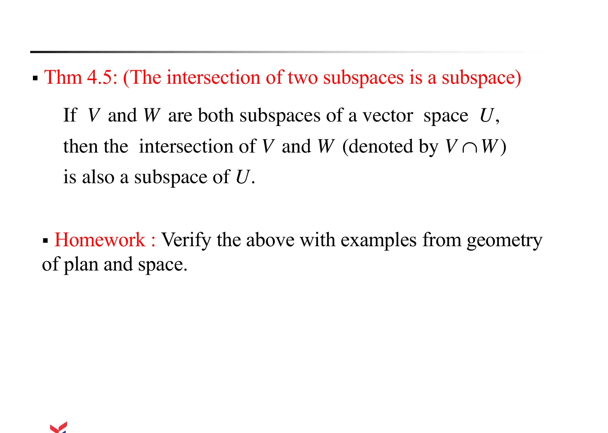
If $V$ and $W$ are subspaces of a vector space $U$, then $V\cap W$ is also a subspace of $U$ (if $u,v\in V\cap W$ then $u+v$ and $cu$ lie in both). Homework: verify with geometry: two planes through the origin meet in a line through the origin. The union of subspaces is generally not a subspace: the two coordinate axes together are not closed under addition.
Nếu $V$ và $W$ là các không gian con của không gian vectơ $U$ thì $V\cap W$ cũng là không gian con của $U$ (nếu $u,v\in V\cap W$ thì $u+v$ và $cu$ nằm trong cả hai). Bài tập về nhà: kiểm tra bằng hình học: hai mặt phẳng qua gốc cắt nhau theo một đường thẳng qua gốc. Hợp của các không gian con nói chung không là không gian con: hai trục tọa độ cùng nhau không đóng với phép cộng.
Find $V\cap W$ for $V=\{x+y+z=0\}$ and $W=\{x-y=0\}$ in $\mathbb R^3$.
Tìm $V\cap W$ với $V=\{x+y+z=0\}$ và $W=\{x-y=0\}$ trong $\mathbb R^3$.
Answer and solution · Đáp án và lời giải
Answer · Đáp án: the line $t(1,1,-2)$
Solve $x+y+z=0$, $x-y=0$: $y=x$ and $z=-2x$, so $V\cap W=\{t(1,1,-2)\}$, a line through the origin (a subspace of dimension $1$). Check: $1+1-2=0$ and $1-1=0$ ✓.
Giải $x+y+z=0$, $x-y=0$: $y=x$ và $z=-2x$, nên $V\cap W=\{t(1,1,-2)\}$, một đường thẳng qua gốc (không gian con số chiều $1$). Kiểm tra: $1+1-2=0$ và $1-1=0$ ✓.
4.4 Linear combination, recalled · 4.4 Nhắc lại tổ hợp tuyến tính
★★ Important · Quan trọng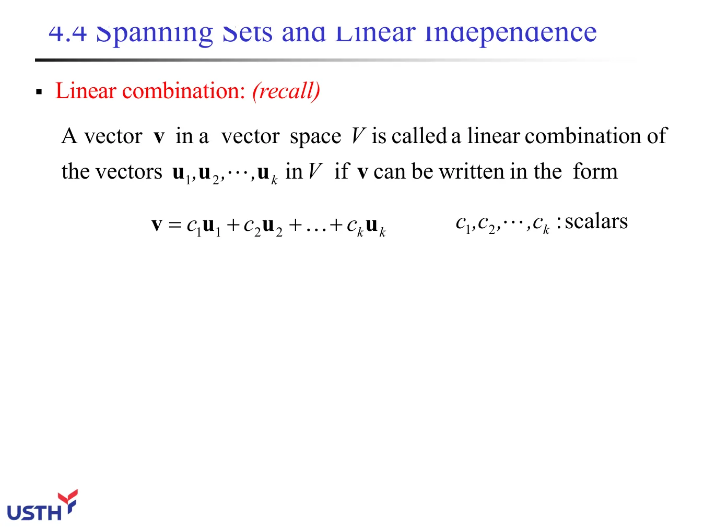
A vector $v$ in a vector space $V$ is a linear combination of $u_1,\dots,u_k\in V$ if $v=c_1u_1+c_2u_2+\cdots+c_ku_k$ for scalars $c_1,\dots,c_k$. Section 4.4 studies the set of all such combinations (the span) and when the $u_i$ contain redundancy (dependence).
Vectơ $v$ trong không gian vectơ $V$ là tổ hợp tuyến tính của $u_1,\dots,u_k\in V$ nếu $v=c_1u_1+c_2u_2+\cdots+c_ku_k$ với các vô hướng $c_1,\dots,c_k$. Mục 4.4 nghiên cứu tập mọi tổ hợp như vậy (bao tuyến tính) và khi nào các $u_i$ chứa sự dư thừa (phụ thuộc).
Example 2–3: is $w$ a combination of $v_1,v_2,v_3$? · Ví dụ 2–3: $w$ có là tổ hợp của $v_1,v_2,v_3$ không?
★★★ Core · Cốt lõi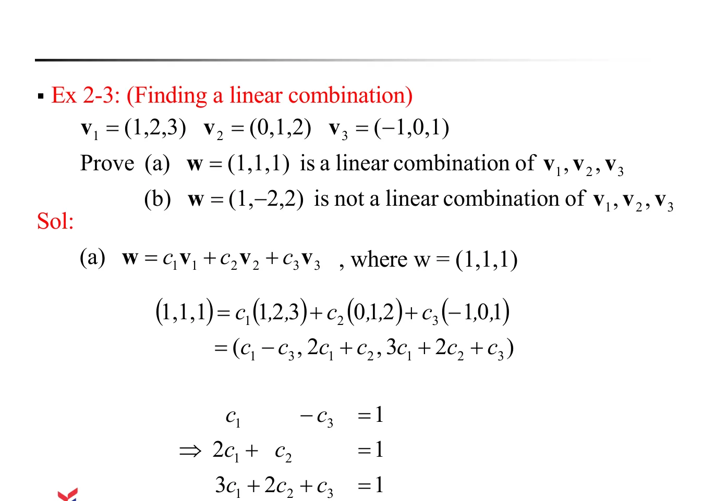
$v_1=(1,2,3)$, $v_2=(0,1,2)$, $v_3=(-1,0,1)$. Prove: (a) $w=(1,1,1)$ is a combination of $v_1,v_2,v_3$; (b) $w=(1,-2,2)$ is not. Write $w=c_1v_1+c_2v_2+c_3v_3=(c_1-c_3,\ 2c_1+c_2,\ 3c_1+2c_2+c_3)$; for (a) this gives the system $c_1-c_3=1$, $2c_1+c_2=1$, $3c_1+2c_2+c_3=1$.
$v_1=(1,2,3)$, $v_2=(0,1,2)$, $v_3=(-1,0,1)$. Chứng minh: (a) $w=(1,1,1)$ là tổ hợp của $v_1,v_2,v_3$; (b) $w=(1,-2,2)$ không phải. Viết $w=c_1v_1+c_2v_2+c_3v_3=(c_1-c_3,\ 2c_1+c_2,\ 3c_1+2c_2+c_3)$; với (a) ta được hệ $c_1-c_3=1$, $2c_1+c_2=1$, $3c_1+2c_2+c_3=1$.
Example 2: infinitely many ways · Ví dụ 2: vô số cách
★★★ Core · Cốt lõi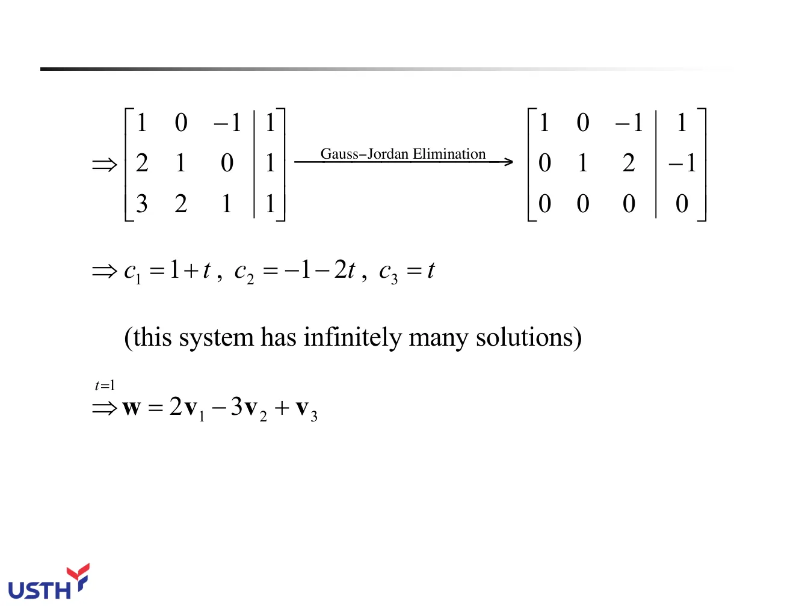
Gauss-Jordan on $\left[\begin{smallmatrix}1&0&-1&1\\2&1&0&1\\3&2&1&1\end{smallmatrix}\right]$ gives $\left[\begin{smallmatrix}1&0&-1&1\\0&1&2&-1\\0&0&0&0\end{smallmatrix}\right]$: $c_1=1+t$, $c_2=-1-2t$, $c_3=t$. Infinitely many solutions, so $w$ is a combination, in infinitely many ways (here $v_1,v_2,v_3$ are dependent). For $t=1$: $w=2v_1-3v_2+v_3$.
Gauss-Jordan trên $\left[\begin{smallmatrix}1&0&-1&1\\2&1&0&1\\3&2&1&1\end{smallmatrix}\right]$ cho $\left[\begin{smallmatrix}1&0&-1&1\\0&1&2&-1\\0&0&0&0\end{smallmatrix}\right]$: $c_1=1+t$, $c_2=-1-2t$, $c_3=t$. Vô số nghiệm nên $w$ là tổ hợp, theo vô số cách (ở đây $v_1,v_2,v_3$ phụ thuộc). Với $t=1$: $w=2v_1-3v_2+v_3$.
Check $2v_1-3v_2+v_3=(1,1,1)$ and give another representation with $t=0$.
Kiểm tra $2v_1-3v_2+v_3=(1,1,1)$ và cho một biểu diễn khác với $t=0$.
Answer and solution · Đáp án và lời giải
Answer · Đáp án: $v_1-v_2=(1,1,1)$ for $t=0$
$2(1,2,3)-3(0,1,2)+(-1,0,1)=(2-0-1,\ 4-3+0,\ 6-6+1)=(1,1,1)$ ✓. With $t=0$: $c=(1,-1,0)$: $v_1-v_2=(1,1,1)$ ✓.
$2(1,2,3)-3(0,1,2)+(-1,0,1)=(2-0-1,\ 4-3+0,\ 6-6+1)=(1,1,1)$ ✓. Với $t=0$: $c=(1,-1,0)$: $v_1-v_2=(1,1,1)$ ✓.
Example 3: no solution · Ví dụ 3: vô nghiệm
★★★ Core · Cốt lõi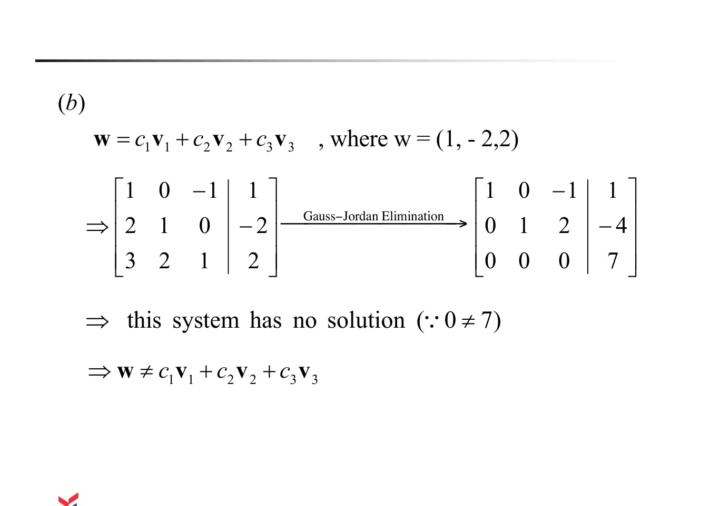
(b) For $w=(1,-2,2)$ the augmented matrix reduces to $\left[\begin{smallmatrix}1&0&-1&1\\0&1&2&-4\\0&0&0&7\end{smallmatrix}\right]$: the last row says $0=7$, so there is no solution and $w\ne c_1v_1+c_2v_2+c_3v_3$ for every choice of scalars. The reduction explains why: the combinations of $v_1,v_2,v_3$ fill only a plane in $\mathbb R^3$, and $w$ is off that plane.
(b) Với $w=(1,-2,2)$ ma trận mở rộng rút gọn về $\left[\begin{smallmatrix}1&0&-1&1\\0&1&2&-4\\0&0&0&7\end{smallmatrix}\right]$: hàng cuối nói $0=7$ nên vô nghiệm và $w\ne c_1v_1+c_2v_2+c_3v_3$ với mọi cách chọn vô hướng. Phép rút gọn giải thích vì sao: các tổ hợp của $v_1,v_2,v_3$ chỉ lấp đầy một mặt phẳng trong $\mathbb R^3$, và $w$ nằm ngoài mặt phẳng đó.
Is $(3,3,6)$ a combination of $(1,0,1)$ and $(0,1,1)$? Is $(1,2,4)$?
$(3,3,6)$ có là tổ hợp của $(1,0,1)$ và $(0,1,1)$ không? $(1,2,4)$ thì sao?
Answer and solution · Đáp án và lời giải
Answer · Đáp án: yes: $3(1,0,1)+3(0,1,1)$; no
Any combination is $(a,b,a+b)$. $(3,3,6)$: $a=3$, $b=3$, $6=a+b$ ✓. $(1,2,4)$: $a=1$, $b=2$ would need third entry $3\ne4$: inconsistent.
Mọi tổ hợp có dạng $(a,b,a+b)$. $(3,3,6)$: $a=3$, $b=3$, $6=a+b$ ✓. $(1,2,4)$: $a=1$, $b=2$ cần thành phần thứ ba bằng $3\ne4$: không nhất quán.
The span of a set; spanning sets · Bao tuyến tính của một tập; tập sinh
★★★ Core · Cốt lõi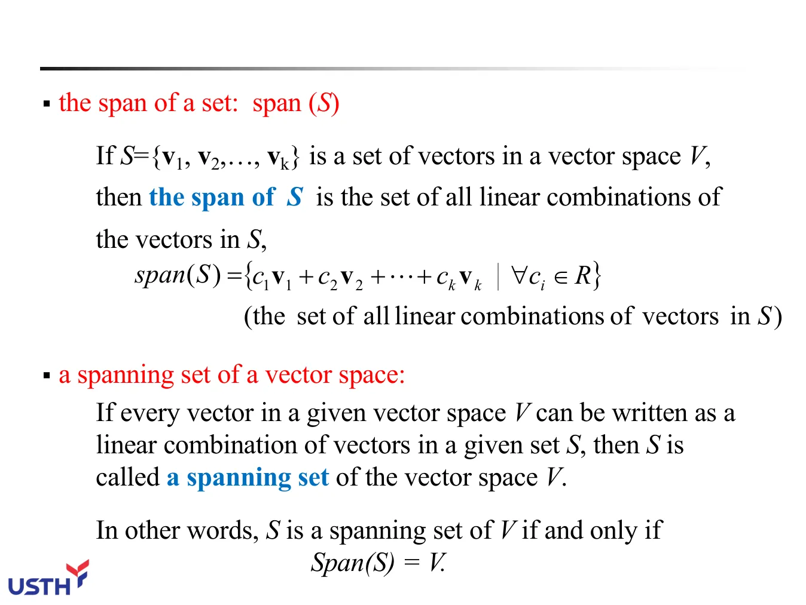
If $S=\{v_1,\dots,v_k\}$ is a set of vectors in $V$, the span of $S$ is the set of all linear combinations: $\operatorname{span}(S)=\{c_1v_1+\cdots+c_kv_k:c_i\in\mathbb R\}$. If every vector of $V$ is a linear combination of vectors in $S$, then $S$ is a spanning set of $V$: $S$ spans $V$ iff $\operatorname{span}(S)=V$.
Nếu $S=\{v_1,\dots,v_k\}$ là tập vectơ trong $V$, bao tuyến tính của $S$ là tập mọi tổ hợp tuyến tính: $\operatorname{span}(S)=\{c_1v_1+\cdots+c_kv_k:c_i\in\mathbb R\}$. Nếu mọi vectơ của $V$ là tổ hợp tuyến tính của các vectơ trong $S$ thì $S$ là tập sinh của $V$: $S$ sinh $V$ khi và chỉ khi $\operatorname{span}(S)=V$.
Describe $\operatorname{span}\{(1,1,0),(0,1,1)\}$ as a plane $ax+by+cz=0$.
Mô tả $\operatorname{span}\{(1,1,0),(0,1,1)\}$ như một mặt phẳng $ax+by+cz=0$.
Answer and solution · Đáp án và lời giải
Answer · Đáp án: $x-y+z=0$
A vector $(a,b,c)$ is in the span iff $(a,b,c)=s(1,1,0)+t(0,1,1)=(s,\ s+t,\ t)$, i.e. $b=a+c$, i.e. $a-b+c=0$. The normal $(1,-1,1)$ is orthogonal to both spanning vectors: $1-1+0=0$ and $0-1+1=0$.
Vectơ $(a,b,c)$ thuộc bao tuyến tính iff $(a,b,c)=s(1,1,0)+t(0,1,1)=(s,\ s+t,\ t)$, tức $b=a+c$, tức $a-b+c=0$. Pháp tuyến $(1,-1,1)$ vuông góc cả hai vectơ sinh: $1-1+0=0$ và $0-1+1=0$.
Notation and properties of span · Ký hiệu và tính chất của bao tuyến tính
★★ Important · Quan trọng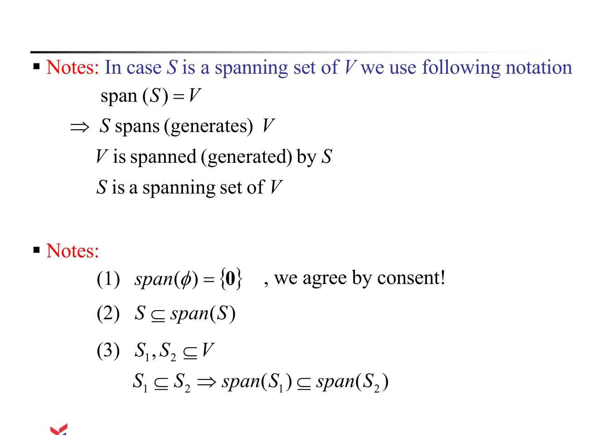
If $\operatorname{span}(S)=V$ we say: $S$ spans (generates) $V$; $V$ is spanned (generated) by $S$; $S$ is a spanning set of $V$. Notes: (1) $\operatorname{span}(\emptyset)=\{0\}$ by convention; (2) $S\subseteq\operatorname{span}(S)$; (3) if $S_1\subseteq S_2\subseteq V$ then $\operatorname{span}(S_1)\subseteq\operatorname{span}(S_2)$: adding vectors can only enlarge the span.
Nếu $\operatorname{span}(S)=V$ ta nói: $S$ sinh $V$; $V$ được sinh bởi $S$; $S$ là tập sinh của $V$. Lưu ý: (1) $\operatorname{span}(\emptyset)=\{0\}$ theo quy ước; (2) $S\subseteq\operatorname{span}(S)$; (3) nếu $S_1\subseteq S_2\subseteq V$ thì $\operatorname{span}(S_1)\subseteq\operatorname{span}(S_2)$: thêm vectơ chỉ có thể làm bao tuyến tính lớn ra.
Example 5: does $S$ span $\mathbb R^3$? setting up · Ví dụ 5: $S$ có sinh $\mathbb R^3$ không? thiết lập
★★★ Core · Cốt lõi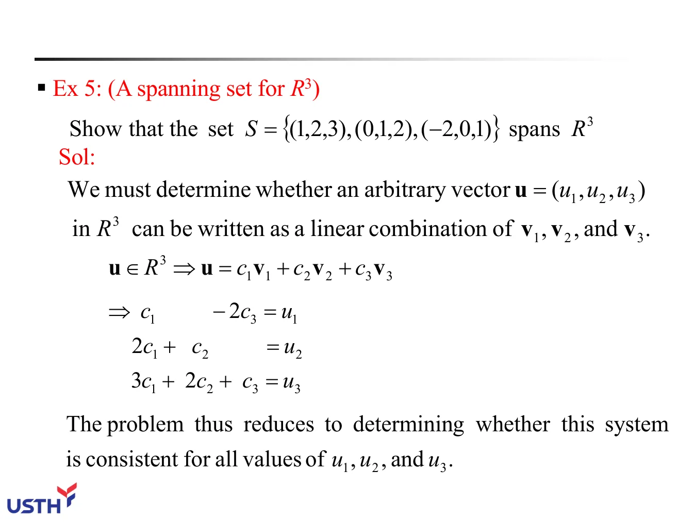
Show that $S=\{(1,2,3),(0,1,2),(-2,0,1)\}$ spans $\mathbb R^3$. We must decide whether an arbitrary $u=(u_1,u_2,u_3)$ can be written $c_1v_1+c_2v_2+c_3v_3$: the system $c_1-2c_3=u_1$, $2c_1+c_2=u_2$, $3c_1+2c_2+c_3=u_3$. So the problem reduces to: is this system consistent for all values of $u_1,u_2,u_3$?
Chứng tỏ $S=\{(1,2,3),(0,1,2),(-2,0,1)\}$ sinh $\mathbb R^3$. Ta phải xác định liệu $u=(u_1,u_2,u_3)$ bất kỳ có viết được $c_1v_1+c_2v_2+c_3v_3$ không: hệ $c_1-2c_3=u_1$, $2c_1+c_2=u_2$, $3c_1+2c_2+c_3=u_3$. Vậy bài toán rút về: hệ này có nhất quán với mọi giá trị của $u_1,u_2,u_3$ không?
Example 5: the determinant settles it · Ví dụ 5: định thức quyết định
★★★ Core · Cốt lõi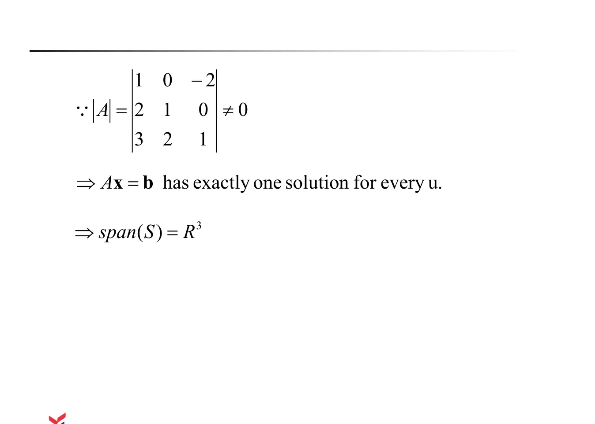
The coefficient matrix has $|A|=\begin{vmatrix}1&0&-2\\2&1&0\\3&2&1\end{vmatrix}=-1\ne0$, so $Ax=u$ has exactly one solution for every $u$. Hence $\operatorname{span}(S)=\mathbb R^3$. Shortcut: $n$ vectors in $\mathbb R^n$ span $\mathbb R^n$ iff the matrix with these vectors as columns has $\det\ne0$.
Ma trận hệ số có $|A|=\begin{vmatrix}1&0&-2\\2&1&0\\3&2&1\end{vmatrix}=-1\ne0$ nên $Ax=u$ có đúng một nghiệm với mọi $u$. Do đó $\operatorname{span}(S)=\mathbb R^3$. Lối tắt: $n$ vectơ trong $\mathbb R^n$ sinh $\mathbb R^n$ khi và chỉ khi ma trận có các vectơ này làm cột có $\det\ne0$.
Do $(1,1,1)$, $(1,2,3)$, $(2,3,4)$ span $\mathbb R^3$?
$(1,1,1)$, $(1,2,3)$, $(2,3,4)$ có sinh $\mathbb R^3$ không?
Answer and solution · Đáp án và lời giải
Answer · Đáp án: no: $\det=0$ (the third is the sum of the first two)
$\det\begin{bmatrix}1&1&2\\1&2&3\\1&3&4\end{bmatrix}=0$ and indeed $(2,3,4)=(1,1,1)+(1,2,3)$, so the span is only a plane. The slide's set has $\det=-1$ and does span.
$\det\begin{bmatrix}1&1&2\\1&2&3\\1&3&4\end{bmatrix}=0$ và thật vậy $(2,3,4)=(1,1,1)+(1,2,3)$ nên bao tuyến tính chỉ là một mặt phẳng. Tập của slide có $\det=-1$ và sinh được.
Theorem 4.6: properties of $\operatorname{span}(S)$ · Định lý 4.6: tính chất của $\operatorname{span}(S)$
★★★ Core · Cốt lõi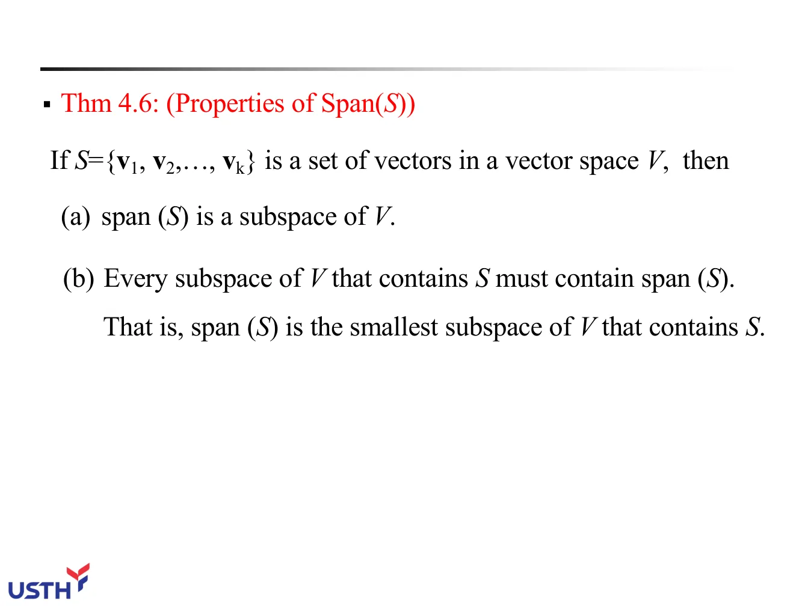
If $S=\{v_1,\dots,v_k\}\subseteq V$ then (a) $\operatorname{span}(S)$ is a subspace of $V$; (b) every subspace of $V$ that contains $S$ must contain $\operatorname{span}(S)$: $\operatorname{span}(S)$ is the smallest subspace of $V$ containing $S$. So the span is the natural way to build subspaces: pick generators.
Nếu $S=\{v_1,\dots,v_k\}\subseteq V$ thì (a) $\operatorname{span}(S)$ là không gian con của $V$; (b) mọi không gian con của $V$ chứa $S$ đều phải chứa $\operatorname{span}(S)$: $\operatorname{span}(S)$ là không gian con nhỏ nhất của $V$ chứa $S$. Vậy bao tuyến tính là cách tự nhiên để xây không gian con: chọn các vectơ sinh.
Prove (a) for $S=\{v_1,v_2\}$: the sum and scalar multiples of two combinations are again combinations.
Chứng minh (a) cho $S=\{v_1,v_2\}$: tổng và bội vô hướng của hai tổ hợp lại là tổ hợp.
Answer and solution · Đáp án và lời giải
Answer · Đáp án: closed under both operations
$(a_1v_1+a_2v_2)+(b_1v_1+b_2v_2)=(a_1+b_1)v_1+(a_2+b_2)v_2$ and $k(a_1v_1+a_2v_2)=(ka_1)v_1+(ka_2)v_2$, both combinations of $v_1,v_2$. By Theorem 4.4 the span is a subspace.
$(a_1v_1+a_2v_2)+(b_1v_1+b_2v_2)=(a_1+b_1)v_1+(a_2+b_2)v_2$ và $k(a_1v_1+a_2v_2)=(ka_1)v_1+(ka_2)v_2$, đều là tổ hợp của $v_1,v_2$. Theo Định lý 4.4 bao tuyến tính là không gian con.
Linear independence and dependence · Độc lập và phụ thuộc tuyến tính
★★★ Core · Cốt lõi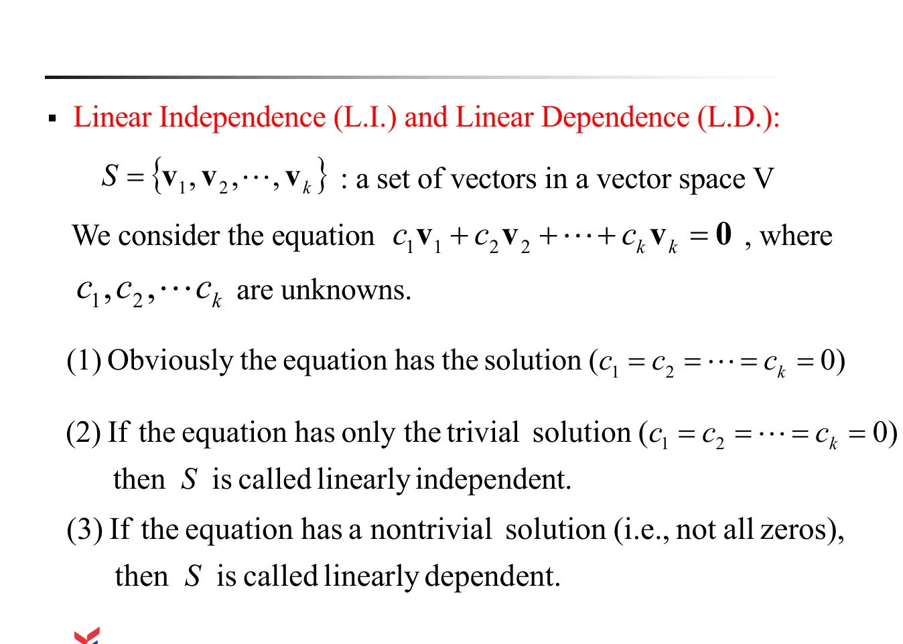
For $S=\{v_1,\dots,v_k\}$ consider the equation $c_1v_1+c_2v_2+\cdots+c_kv_k=0$ in the unknowns $c_i$. (1) It always has the trivial solution $c_1=\cdots=c_k=0$. (2) If this is the only solution, $S$ is linearly independent (L.I.). (3) If there is a nontrivial solution (not all zero), $S$ is linearly dependent (L.D.). Independent means: no redundancy.
Với $S=\{v_1,\dots,v_k\}$ xét phương trình $c_1v_1+c_2v_2+\cdots+c_kv_k=0$ với ẩn $c_i$. (1) Nó luôn có nghiệm tầm thường $c_1=\cdots=c_k=0$. (2) Nếu đây là nghiệm duy nhất, $S$ độc lập tuyến tính (L.I.). (3) Nếu có nghiệm không tầm thường (không phải tất cả bằng không), $S$ phụ thuộc tuyến tính (L.D.). Độc lập nghĩa là: không có sự dư thừa.
This definition is quoted word for word in proofs; know it by heart, including the "only the trivial solution" clause.
Định nghĩa này được trích nguyên văn trong chứng minh; hãy học thuộc, kể cả mệnh đề "chỉ có nghiệm tầm thường".
Decide L.I. or L.D.: $\{(1,2),(2,4)\}$ and $\{(1,2),(2,5)\}$.
Xác định L.I. hay L.D.: $\{(1,2),(2,4)\}$ và $\{(1,2),(2,5)\}$.
Answer and solution · Đáp án và lời giải
Answer · Đáp án: the first is L.D.; the second is L.I.
$(2,4)=2(1,2)$ so $2(1,2)-(2,4)=0$ is a nontrivial relation: L.D. For $c_1(1,2)+c_2(2,5)=0$: $c_1+2c_2=0$, $2c_1+5c_2=0$ gives $c_2=0$, $c_1=0$ ($\det=5-4=1\ne0$): L.I.
$(2,4)=2(1,2)$ nên $2(1,2)-(2,4)=0$ là hệ thức không tầm thường: L.D. Với $c_1(1,2)+c_2(2,5)=0$: $c_1+2c_2=0$, $2c_1+5c_2=0$ cho $c_2=0$, $c_1=0$ ($\det=5-4=1\ne0$): L.I.
Notes on independent and dependent sets · Các lưu ý về tập độc lập và phụ thuộc
★★★ Core · Cốt lõi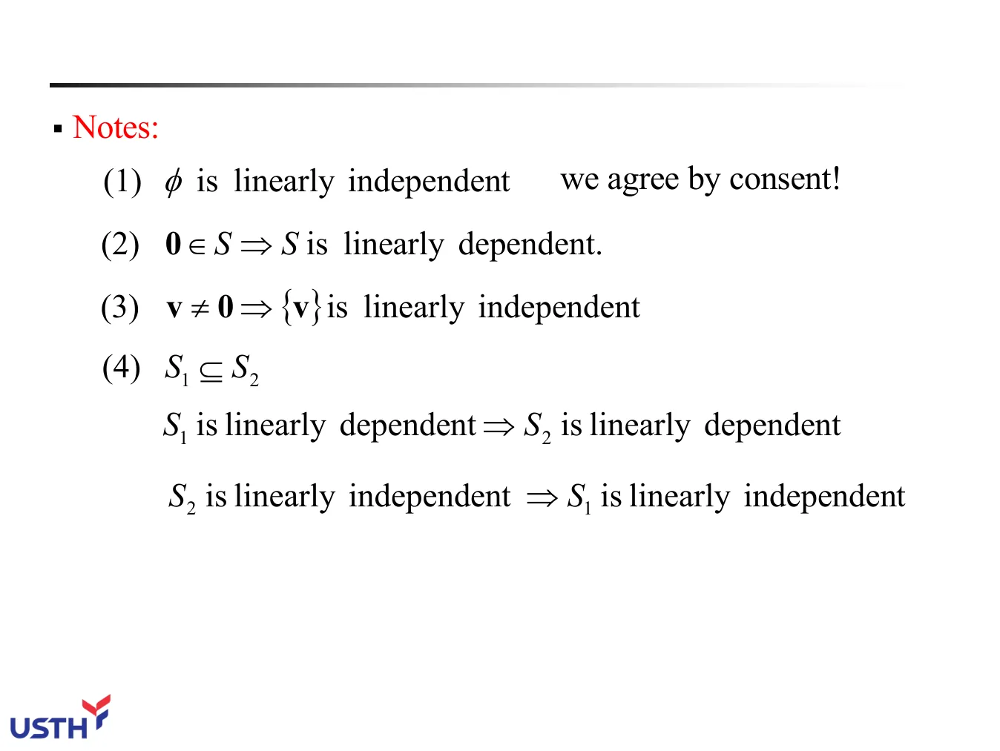
Notes: (1) $\emptyset$ is linearly independent (by convention); (2) $0\in S\Rightarrow S$ is dependent ($1\cdot0=0$ is a nontrivial relation); (3) $v\ne0\Rightarrow\{v\}$ is independent; (4) if $S_1\subseteq S_2$: $S_1$ dependent $\Rightarrow S_2$ dependent, and $S_2$ independent $\Rightarrow S_1$ independent. A dependent set stays dependent when you add vectors; an independent set stays independent when you remove vectors.
Lưu ý: (1) $\emptyset$ độc lập tuyến tính (theo quy ước); (2) $0\in S\Rightarrow S$ phụ thuộc ($1\cdot0=0$ là hệ thức không tầm thường); (3) $v\ne0\Rightarrow\{v\}$ độc lập; (4) nếu $S_1\subseteq S_2$: $S_1$ phụ thuộc $\Rightarrow S_2$ phụ thuộc, và $S_2$ độc lập $\Rightarrow S_1$ độc lập. Tập phụ thuộc vẫn phụ thuộc khi thêm vectơ; tập độc lập vẫn độc lập khi bớt vectơ.
Why is $\{(0,0),(1,3)\}$ dependent, and what does (4) say about $\{(1,3),(2,1),(0,0),(5,5)\}$?
Vì sao $\{(0,0),(1,3)\}$ phụ thuộc, và (4) nói gì về $\{(1,3),(2,1),(0,0),(5,5)\}$?
Answer and solution · Đáp án và lời giải
Answer · Đáp án: it contains $0$; the larger set is dependent too
$1\cdot(0,0)+0\cdot(1,3)=0$ is a nontrivial relation. A set containing a dependent subset is dependent; here the big set also contains the zero vector, and four vectors in $\mathbb R^2$ are always dependent.
$1\cdot(0,0)+0\cdot(1,3)=0$ là hệ thức không tầm thường. Tập chứa một tập con phụ thuộc thì phụ thuộc; ở đây tập lớn cũng chứa vectơ không, và bốn vectơ trong $\mathbb R^2$ luôn phụ thuộc.
Example 8: testing independence in $\mathbb R^3$ · Ví dụ 8: kiểm tra độc lập trong $\mathbb R^3$
★★★ Core · Cốt lõi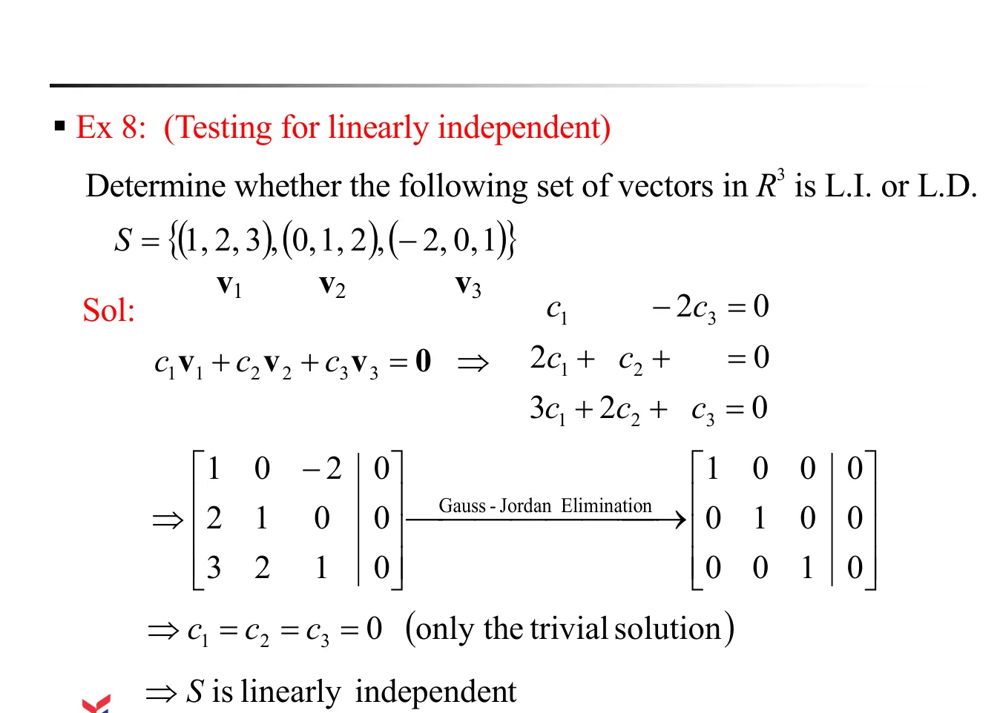
$S=\{(1,2,3),(0,1,2),(-2,0,1)\}$. The equation $c_1v_1+c_2v_2+c_3v_3=0$ is the homogeneous system $c_1-2c_3=0$, $2c_1+c_2=0$, $3c_1+2c_2+c_3=0$; Gauss-Jordan on the augmented matrix gives $\left[\begin{smallmatrix}1&0&0&0\\0&1&0&0\\0&0&1&0\end{smallmatrix}\right]$, so $c_1=c_2=c_3=0$ is the only solution: $S$ is linearly independent. Put the vectors as columns of the coefficient matrix.
$S=\{(1,2,3),(0,1,2),(-2,0,1)\}$. Phương trình $c_1v_1+c_2v_2+c_3v_3=0$ là hệ thuần nhất $c_1-2c_3=0$, $2c_1+c_2=0$, $3c_1+2c_2+c_3=0$; Gauss-Jordan trên ma trận mở rộng cho $\left[\begin{smallmatrix}1&0&0&0\\0&1&0&0\\0&0&1&0\end{smallmatrix}\right]$, nên $c_1=c_2=c_3=0$ là nghiệm duy nhất: $S$ độc lập tuyến tính. Hãy đặt các vectơ thành cột của ma trận hệ số.
Test $\{(1,1,0),(1,0,1),(0,1,1)\}$ for independence.
Kiểm tra độc lập của $\{(1,1,0),(1,0,1),(0,1,1)\}$.
Answer and solution · Đáp án và lời giải
Answer · Đáp án: linearly independent ($\det=-2$)
The matrix with these columns has $\det=1(0-1)-1(1-0)+0=-2\ne0$, so $Ax=0$ has only the trivial solution: independent (and, since there are $3$ vectors in $\mathbb R^3$, also a spanning set).
Ma trận có các cột này có $\det=1(0-1)-1(1-0)+0=-2\ne0$ nên $Ax=0$ chỉ có nghiệm tầm thường: độc lập (và vì có $3$ vectơ trong $\mathbb R^3$ nên cũng là tập sinh).
Example 9: independence in the polynomial space $P_2$ · Ví dụ 9: độc lập trong không gian đa thức $P_2$
★★★ Core · Cốt lõi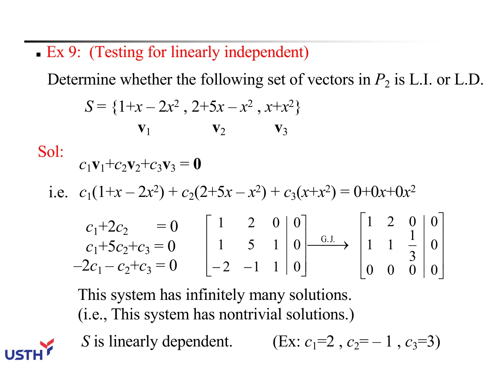
$S=\{1+x-2x^2,\ 2+5x-x^2,\ x+x^2\}$. Setting $c_1v_1+c_2v_2+c_3v_3=0$ and comparing coefficients of $1,x,x^2$: $c_1+2c_2=0$, $c_1+5c_2+c_3=0$, $-2c_1-c_2+c_3=0$. The system has infinitely many solutions, so $S$ is linearly dependent, e.g. $c_1=2$, $c_2=-1$, $c_3=3$. The coefficients of the polynomials play the role of the components.
$S=\{1+x-2x^2,\ 2+5x-x^2,\ x+x^2\}$. Đặt $c_1v_1+c_2v_2+c_3v_3=0$ và so sánh hệ số của $1,x,x^2$: $c_1+2c_2=0$, $c_1+5c_2+c_3=0$, $-2c_1-c_2+c_3=0$. Hệ có vô số nghiệm nên $S$ phụ thuộc tuyến tính, ví dụ $c_1=2$, $c_2=-1$, $c_3=3$. Hệ số của đa thức đóng vai trò thành phần.
Check the relation $2v_1-v_2+3v_3=0$ of the slide, and test $\{1+x,\ x+x^2,\ 1+x^2\}$.
Kiểm tra hệ thức $2v_1-v_2+3v_3=0$ của slide, và xét $\{1+x,\ x+x^2,\ 1+x^2\}$.
Answer and solution · Đáp án và lời giải
Answer · Đáp án: the relation holds; $\{1+x,x+x^2,1+x^2\}$ is independent
$2(1+x-2x^2)-(2+5x-x^2)+3(x+x^2)=0$. For the second set the coefficient vectors $(1,1,0),(0,1,1),(1,0,1)$ have $\det=2\ne0$: independent.
$2(1+x-2x^2)-(2+5x-x^2)+3(x+x^2)=0$. Với tập thứ hai các vectơ hệ số $(1,1,0),(0,1,1),(1,0,1)$ có $\det=2\ne0$: độc lập.
Example 10: independence in $M_{2\times2}$ · Ví dụ 10: độc lập trong $M_{2\times2}$
★★★ Core · Cốt lõi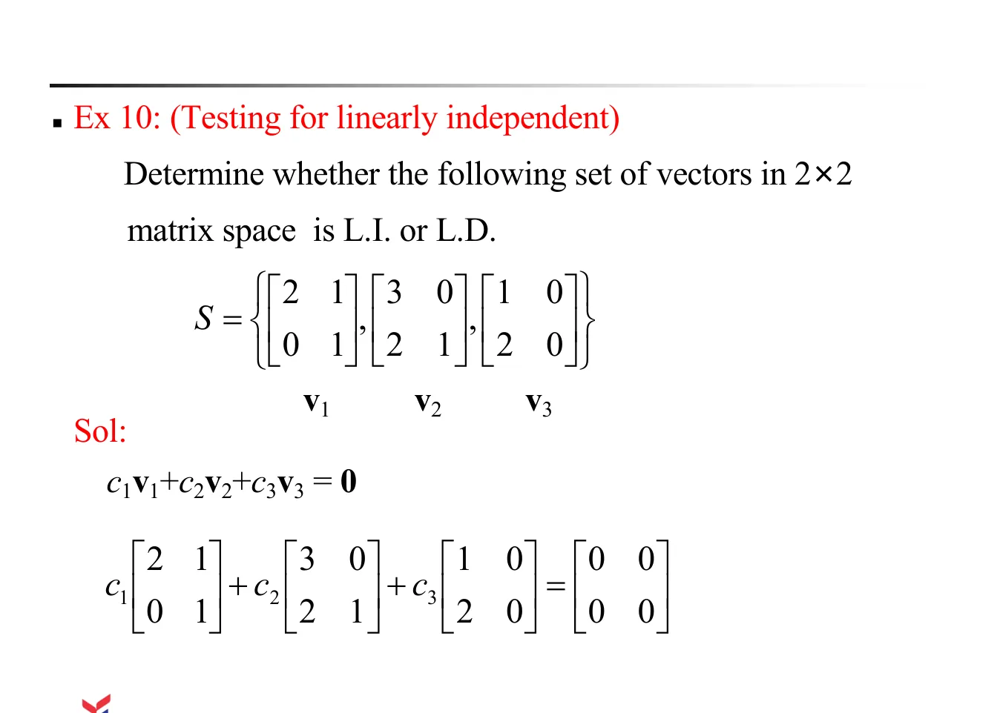
$S=\left\{\begin{bmatrix}2&1\\0&1\end{bmatrix},\begin{bmatrix}3&0\\2&1\end{bmatrix},\begin{bmatrix}1&0\\2&0\end{bmatrix}\right\}$. Solve $c_1v_1+c_2v_2+c_3v_3=0$: compare the four entries, which gives four equations in $c_1,c_2,c_3$: entry $(1,1)$: $2c_1+3c_2+c_3=0$; entry $(1,2)$: $c_1=0$; entry $(2,1)$: $2c_2+2c_3=0$; entry $(2,2)$: $c_1+c_2=0$.
$S=\left\{\begin{bmatrix}2&1\\0&1\end{bmatrix},\begin{bmatrix}3&0\\2&1\end{bmatrix},\begin{bmatrix}1&0\\2&0\end{bmatrix}\right\}$. Giải $c_1v_1+c_2v_2+c_3v_3=0$: so sánh bốn phần tử, được bốn phương trình theo $c_1,c_2,c_3$: phần tử $(1,1)$: $2c_1+3c_2+c_3=0$; phần tử $(1,2)$: $c_1=0$; phần tử $(2,1)$: $2c_2+2c_3=0$; phần tử $(2,2)$: $c_1+c_2=0$.
Example 10: the answer · Ví dụ 10: kết quả
★★★ Core · Cốt lõi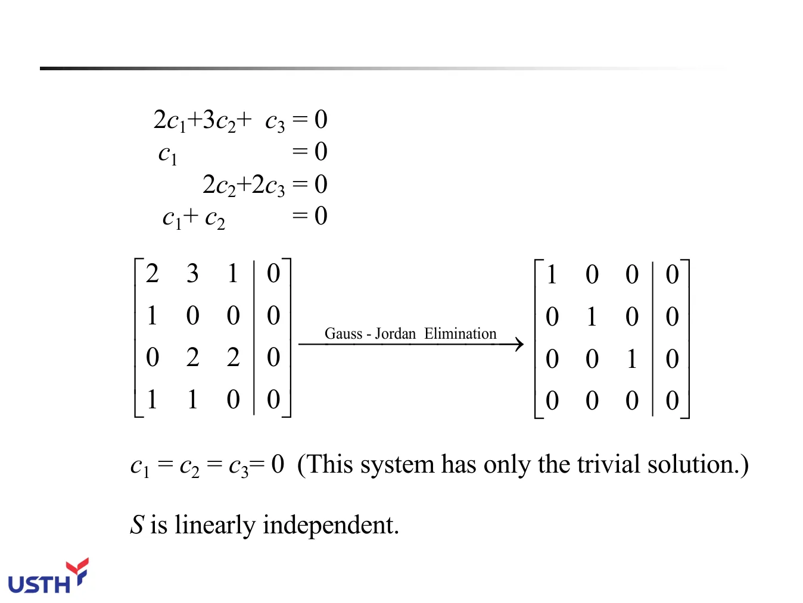
The system $2c_1+3c_2+c_3=0$, $c_1=0$, $2c_2+2c_3=0$, $c_1+c_2=0$ reduces to $c_1=c_2=c_3=0$ (only the trivial solution), so $S$ is linearly independent. Four equations in three unknowns is fine: it is overdetermined, and here the extra equation is consistent with the trivial solution.
Hệ $2c_1+3c_2+c_3=0$, $c_1=0$, $2c_2+2c_3=0$, $c_1+c_2=0$ rút gọn về $c_1=c_2=c_3=0$ (chỉ có nghiệm tầm thường), nên $S$ độc lập tuyến tính. Bốn phương trình ba ẩn không sao: hệ thừa ràng buộc, và ở đây phương trình thừa phù hợp với nghiệm tầm thường.
Are $I$, $\begin{bmatrix}0&1\\1&0\end{bmatrix}$ and $\begin{bmatrix}1&1\\1&1\end{bmatrix}$ independent in $M_{2\times2}$?
$I$, $\begin{bmatrix}0&1\\1&0\end{bmatrix}$ và $\begin{bmatrix}1&1\\1&1\end{bmatrix}$ có độc lập trong $M_{2\times2}$ không?
Answer and solution · Đáp án và lời giải
Answer · Đáp án: no: the third is the sum of the first two
$I+\begin{bmatrix}0&1\\1&0\end{bmatrix}=\begin{bmatrix}1&1\\1&1\end{bmatrix}$, so $1\cdot I+1\cdot J-1\cdot K=0$ is a nontrivial relation: dependent. As vectors of $\mathbb R^4$ the rank is $2<3$.
$I+\begin{bmatrix}0&1\\1&0\end{bmatrix}=\begin{bmatrix}1&1\\1&1\end{bmatrix}$ nên $1\cdot I+1\cdot J-1\cdot K=0$ là hệ thức không tầm thường: phụ thuộc. Xem như vectơ của $\mathbb R^4$ hạng là $2<3$.
Theorem 4.7: a property of dependent sets · Định lý 4.7: một tính chất của tập phụ thuộc
★★★ Core · Cốt lõi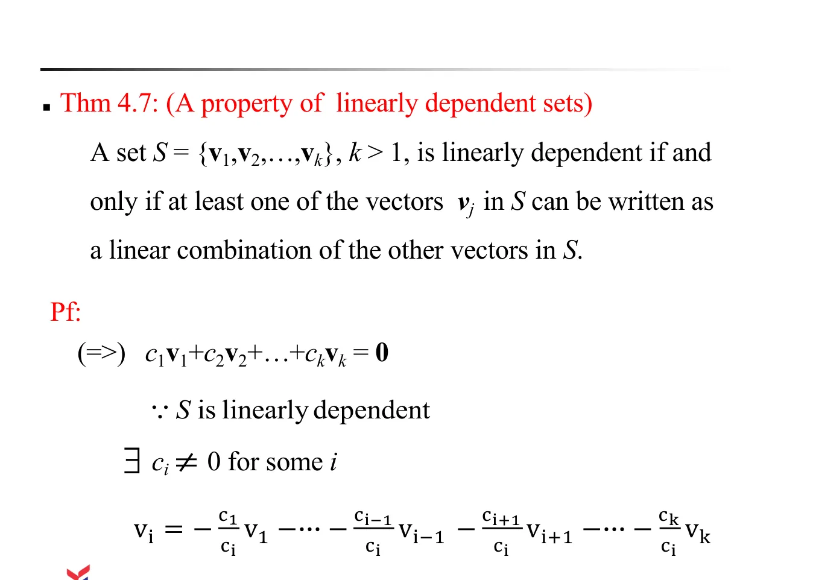
Theorem 4.7. A set $S=\{v_1,\dots,v_k\}$, $k>1$, is linearly dependent if and only if at least one vector $v_j$ can be written as a linear combination of the others. Proof ($\Rightarrow$): if $c_1v_1+\cdots+c_kv_k=0$ with some $c_i\ne0$, then $v_i=-\frac{c_1}{c_i}v_1-\cdots-\frac{c_{i-1}}{c_i}v_{i-1}-\frac{c_{i+1}}{c_i}v_{i+1}-\cdots-\frac{c_k}{c_i}v_k$. The proof continues on the next slide.
Định lý 4.7. Tập $S=\{v_1,\dots,v_k\}$, $k>1$, phụ thuộc tuyến tính khi và chỉ khi có ít nhất một vectơ $v_j$ viết được thành tổ hợp tuyến tính của các vectơ còn lại. Chứng minh ($\Rightarrow$): nếu $c_1v_1+\cdots+c_kv_k=0$ với một $c_i\ne0$ thì $v_i=-\frac{c_1}{c_i}v_1-\cdots-\frac{c_{i-1}}{c_i}v_{i-1}-\frac{c_{i+1}}{c_i}v_{i+1}-\cdots-\frac{c_k}{c_i}v_k$. Chứng minh tiếp tục ở slide sau.
Theorem 4.7, the converse, and a corollary · Định lý 4.7, chiều ngược lại, và một hệ quả
★★★ Core · Cốt lõi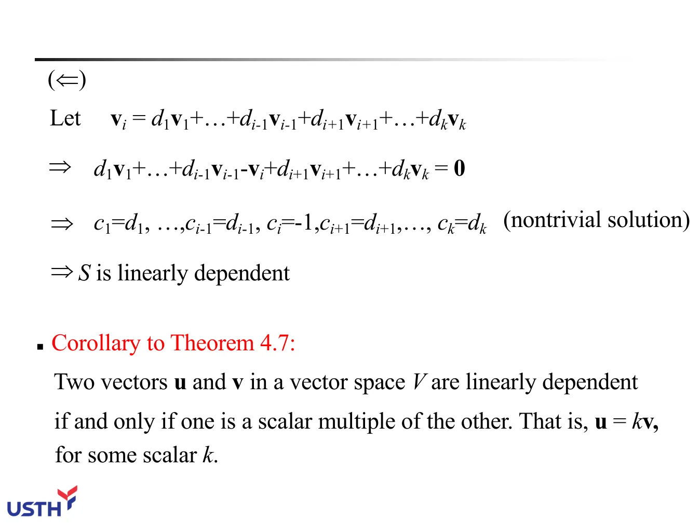
($\Leftarrow$) If $v_i=d_1v_1+\cdots+d_{i-1}v_{i-1}+d_{i+1}v_{i+1}+\cdots+d_kv_k$, then $d_1v_1+\cdots-v_i+\cdots+d_kv_k=0$, a relation whose coefficient of $v_i$ is $-1\ne0$: nontrivial, so $S$ is dependent. Corollary: two vectors $u,v$ are dependent iff one is a scalar multiple of the other, $u=kv$ (so in $\mathbb R^2$ or $\mathbb R^3$: iff they are parallel).
($\Leftarrow$) Nếu $v_i=d_1v_1+\cdots+d_{i-1}v_{i-1}+d_{i+1}v_{i+1}+\cdots+d_kv_k$ thì $d_1v_1+\cdots-v_i+\cdots+d_kv_k=0$, hệ thức có hệ số của $v_i$ là $-1\ne0$: không tầm thường, nên $S$ phụ thuộc. Hệ quả: hai vectơ $u,v$ phụ thuộc khi và chỉ khi một vectơ là bội vô hướng của vectơ kia, $u=kv$ (nên trong $\mathbb R^2$ hoặc $\mathbb R^3$: khi và chỉ khi chúng song song).
For $S=\{(1,2),(2,4),(0,1)\}$ write one vector as a combination of the others.
Với $S=\{(1,2),(2,4),(0,1)\}$ viết một vectơ thành tổ hợp của các vectơ còn lại.
Answer and solution · Đáp án và lời giải
Answer · Đáp án: $(2,4)=2(1,2)+0(0,1)$
$S$ is dependent (three vectors in $\mathbb R^2$). Indeed $(2,4)=2(1,2)+0\cdot(0,1)$. Note that $(0,1)$ is not a combination of the other two: the theorem only guarantees some vector.
$S$ phụ thuộc (ba vectơ trong $\mathbb R^2$). Thật vậy $(2,4)=2(1,2)+0\cdot(0,1)$. Chú ý $(0,1)$ không là tổ hợp của hai vectơ còn lại: định lý chỉ đảm bảo một vectơ nào đó.
4.5 Basis · 4.5 Cơ sở
★★★ Core · Cốt lõi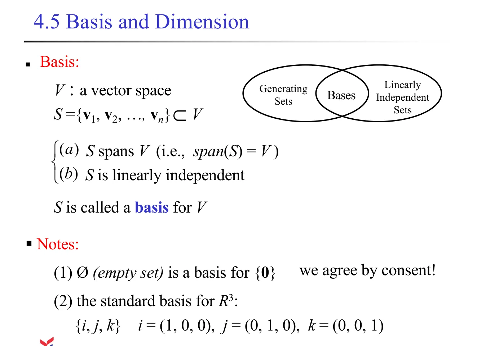
Let $S=\{v_1,\dots,v_n\}\subset V$. If (a) $S$ spans $V$ and (b) $S$ is linearly independent, then $S$ is a basis for $V$: a spanning set with no redundancy (the Venn diagram: bases = generating sets $\cap$ independent sets). Notes: (1) $\emptyset$ is a basis for $\{0\}$ (by convention); (2) the standard basis for $\mathbb R^3$ is $\{i,j,k\}$ with $i=(1,0,0)$, $j=(0,1,0)$, $k=(0,0,1)$.
Cho $S=\{v_1,\dots,v_n\}\subset V$. Nếu (a) $S$ sinh $V$ và (b) $S$ độc lập tuyến tính thì $S$ là một cơ sở của $V$: tập sinh không có sự dư thừa (sơ đồ Venn: cơ sở = tập sinh $\cap$ tập độc lập). Lưu ý: (1) $\emptyset$ là cơ sở của $\{0\}$ (theo quy ước); (2) cơ sở chuẩn của $\mathbb R^3$ là $\{i,j,k\}$ với $i=(1,0,0)$, $j=(0,1,0)$, $k=(0,0,1)$.
A basis is the right "coordinate system" of a vector space: it is the minimal complete list of directions.
Cơ sở là "hệ tọa độ" đúng của một không gian vectơ: danh sách hướng tối thiểu mà đầy đủ.
Is $\{(1,2),(3,4)\}$ a basis of $\mathbb R^2$? Is $\{(1,2),(2,4)\}$?
$\{(1,2),(3,4)\}$ có là cơ sở của $\mathbb R^2$ không? $\{(1,2),(2,4)\}$ thì sao?
Answer and solution · Đáp án và lời giải
Answer · Đáp án: yes ($\det=-2$); no (dependent)
$\det\begin{bmatrix}1&3\\2&4\end{bmatrix}=4-6=-2\ne0$: independent and spanning. $(2,4)=2(1,2)$: dependent, so not a basis (and it spans only a line).
$\det\begin{bmatrix}1&3\\2&4\end{bmatrix}=4-6=-2\ne0$: độc lập và sinh. $(2,4)=2(1,2)$: phụ thuộc nên không là cơ sở (và chỉ sinh một đường thẳng).
Standard bases · Các cơ sở chuẩn
★★★ Core · Cốt lõi(3) $\mathbb R^n$: $\{e_1,\dots,e_n\}$ with $e_i$ having a $1$ in position $i$ and $0$ elsewhere (for $\mathbb R^4$: $(1,0,0,0),(0,1,0,0),(0,0,1,0),(0,0,0,1)$). (4) $M_{m\times n}$: $\{E_{ij}\}$, where $E_{ij}$ has $1$ in position $(i,j)$ and $0$ elsewhere ($mn$ matrices; four for $2\times2$). (5) $P_n(x)$: $\{1,x,x^2,\dots,x^n\}$ ($P_3$: $1,x,x^2,x^3$).
(3) $\mathbb R^n$: $\{e_1,\dots,e_n\}$ với $e_i$ có số $1$ ở vị trí $i$ và $0$ ở chỗ khác (với $\mathbb R^4$: $(1,0,0,0),(0,1,0,0),(0,0,1,0),(0,0,0,1)$). (4) $M_{m\times n}$: $\{E_{ij}\}$, trong đó $E_{ij}$ có số $1$ ở vị trí $(i,j)$ và $0$ ở chỗ khác ($mn$ ma trận; bốn ma trận cho $2\times2$). (5) $P_n(x)$: $\{1,x,x^2,\dots,x^n\}$ ($P_3$: $1,x,x^2,x^3$).
How many vectors are in the standard basis of $M_{3\times2}$, of $P_4(x)$, of $\mathbb R^7$?
Cơ sở chuẩn của $M_{3\times2}$, của $P_4(x)$, của $\mathbb R^7$ có bao nhiêu vectơ?
Answer and solution · Đáp án và lời giải
Answer · Đáp án: $6$, $5$ and $7$
$M_{3\times2}$ has $3\cdot2=6$ entries, so $6$ matrices $E_{ij}$; $P_4$ has the basis $1,x,x^2,x^3,x^4$: $5$ vectors (note $n+1$, not $n$); $\mathbb R^7$ has $7$.
$M_{3\times2}$ có $3\cdot2=6$ phần tử nên $6$ ma trận $E_{ij}$; $P_4$ có cơ sở $1,x,x^2,x^3,x^4$: $5$ vectơ (chú ý $n+1$, không phải $n$); $\mathbb R^7$ có $7$.
Theorem 4.8: uniqueness of the basis representation · Định lý 4.8: tính duy nhất của biểu diễn theo cơ sở
★★★ Core · Cốt lõiTheorem 4.8. If $S=\{v_1,\dots,v_n\}$ is a basis of $V$, then every vector of $V$ can be written in one and only one way as a linear combination of the vectors in $S$. Proof: since $S$ spans, $v=c_1v_1+\cdots+c_nv_n$ exists. If also $v=b_1v_1+\cdots+b_nv_n$, subtracting gives $0=(c_1-b_1)v_1+\cdots+(c_n-b_n)v_n$; independence forces $c_i=b_i$. This is what makes coordinates well defined (4.7).
Định lý 4.8. Nếu $S=\{v_1,\dots,v_n\}$ là cơ sở của $V$ thì mọi vectơ của $V$ viết được theo một và chỉ một cách thành tổ hợp tuyến tính của các vectơ trong $S$. Chứng minh: vì $S$ sinh nên $v=c_1v_1+\cdots+c_nv_n$ tồn tại. Nếu cũng có $v=b_1v_1+\cdots+b_nv_n$, trừ nhau được $0=(c_1-b_1)v_1+\cdots+(c_n-b_n)v_n$; độc lập buộc $c_i=b_i$. Đây là điều làm tọa độ được xác định tốt (4.7).
Find the unique coordinates of $(4,7)$ in the basis $\{(1,1),(1,-1)\}$.
Tìm tọa độ duy nhất của $(4,7)$ trong cơ sở $\{(1,1),(1,-1)\}$.
Answer and solution · Đáp án và lời giải
Answer · Đáp án: $\left(\frac{11}2,-\frac32\right)$
Solve $c_1+c_2=4$, $c_1-c_2=7$: $c_1=\frac{11}2$, $c_2=-\frac32$. Check: $\frac{11}2(1,1)-\frac32(1,-1)=(4,7)$ ✓. Because the basis is independent, no other pair works.
Giải $c_1+c_2=4$, $c_1-c_2=7$: $c_1=\frac{11}2$, $c_2=-\frac32$. Kiểm tra: $\frac{11}2(1,1)-\frac32(1,-1)=(4,7)$ ✓. Vì cơ sở độc lập nên không có cặp nào khác.
Theorem 4.9: bases and linear dependence, the setup · Định lý 4.9: cơ sở và phụ thuộc tuyến tính, thiết lập
★★★ Core · Cốt lõiTheorem 4.9. If $S=\{v_1,\dots,v_n\}$ is a basis of $V$, then every set containing more than $n$ vectors is linearly dependent. Proof: let $S_1=\{u_1,\dots,u_m\}$, $m>n$. Since $S$ spans, each $u_j=c_{1j}v_1+c_{2j}v_2+\cdots+c_{nj}v_n$: we write all $m$ vectors in terms of the basis.
Định lý 4.9. Nếu $S=\{v_1,\dots,v_n\}$ là cơ sở của $V$ thì mọi tập chứa nhiều hơn $n$ vectơ đều phụ thuộc tuyến tính. Chứng minh: cho $S_1=\{u_1,\dots,u_m\}$, $m>n$. Vì $S$ sinh nên mỗi $u_j=c_{1j}v_1+c_{2j}v_2+\cdots+c_{nj}v_n$: ta viết cả $m$ vectơ theo cơ sở.
Theorem 4.9: the proof concluded · Định lý 4.9: kết thúc chứng minh
★★★ Core · Cốt lõiLet $k_1u_1+\cdots+k_mu_m=0$. Substituting gives $d_1v_1+\cdots+d_nv_n=0$ with $d_i=c_{i1}k_1+\cdots+c_{im}k_m$. Since $S$ is independent, all $d_i=0$: a homogeneous system with $n$ equations in the $m>n$ unknowns $k_j$. Such a system (fewer equations than variables) has infinitely many solutions, so a nontrivial $(k_1,\dots,k_m)$ exists: $S_1$ is dependent. This is the very first fact of Lecture 1, reused.
Giả sử $k_1u_1+\cdots+k_mu_m=0$. Thế vào được $d_1v_1+\cdots+d_nv_n=0$ với $d_i=c_{i1}k_1+\cdots+c_{im}k_m$. Vì $S$ độc lập nên mọi $d_i=0$: một hệ thuần nhất có $n$ phương trình và $m>n$ ẩn $k_j$. Hệ như vậy (ít phương trình hơn ẩn) có vô số nghiệm nên tồn tại $(k_1,\dots,k_m)$ không tầm thường: $S_1$ phụ thuộc. Đây chính là sự kiện đầu tiên của Bài 1, được dùng lại.
Demonstrate: $(1,0,0),(0,1,0),(0,0,1),(1,2,3)$ in $\mathbb R^3$ are dependent; give the relation.
Minh họa: $(1,0,0),(0,1,0),(0,0,1),(1,2,3)$ trong $\mathbb R^3$ phụ thuộc; cho hệ thức.
Answer and solution · Đáp án và lời giải
Answer · Đáp án: $(1,2,3)=1\cdot(1,0,0)+2\cdot(0,1,0)+3\cdot(0,0,1)$
Four vectors in a $3$-dimensional space (the basis has $3$ vectors). Explicitly $1\,e_1+2\,e_2+3\,e_3-(1,2,3)=0$, a nontrivial relation. The rank of the $3\times4$ matrix is at most $3<4$.
Bốn vectơ trong không gian $3$ chiều (cơ sở có $3$ vectơ). Cụ thể $1\,e_1+2\,e_2+3\,e_3-(1,2,3)=0$, hệ thức không tầm thường. Hạng của ma trận $3\times4$ nhiều nhất là $3<4$.
Theorem 4.10: all bases have the same number of vectors · Định lý 4.10: mọi cơ sở có cùng số vectơ
★★★ Core · Cốt lõiTheorem 4.10. If a vector space $V$ has one basis with $n$ vectors, then every basis of $V$ has $n$ vectors. Proof with two bases $S=\{v_1,\dots,v_n\}$ and $S'=\{u_1,\dots,u_m\}$: $S$ basis and $S'$ independent give $n\ge m$ (Theorem 4.9); $S$ independent and $S'$ basis give $n\le m$; so $n=m$. This is the reason the dimension below is well defined.
Định lý 4.10. Nếu không gian vectơ $V$ có một cơ sở gồm $n$ vectơ thì mọi cơ sở của $V$ đều có $n$ vectơ. Chứng minh với hai cơ sở $S=\{v_1,\dots,v_n\}$ và $S'=\{u_1,\dots,u_m\}$: $S$ là cơ sở và $S'$ độc lập cho $n\ge m$ (Định lý 4.9); $S$ độc lập và $S'$ là cơ sở cho $n\le m$; vậy $n=m$. Đây là lý do số chiều ở dưới được xác định tốt.
A vector space has a basis with $5$ vectors. Can $4$ vectors span it? Can $6$ vectors be independent?
Một không gian vectơ có cơ sở gồm $5$ vectơ. $4$ vectơ có thể sinh nó không? $6$ vectơ có thể độc lập không?
Answer and solution · Đáp án và lời giải
Answer · Đáp án: no and no
If $4$ vectors spanned, a spanning set of $4$ would contain a basis of at most $4$ vectors, contradicting Theorem 4.10. By Theorem 4.9 any $6$ vectors are dependent.
Nếu $4$ vectơ sinh, tập sinh $4$ vectơ sẽ chứa một cơ sở có nhiều nhất $4$ vectơ, mâu thuẫn Định lý 4.10. Theo Định lý 4.9 mọi $6$ vectơ đều phụ thuộc.
Finite and infinite dimension; dimension · Số chiều hữu hạn và vô hạn; số chiều
★★★ Core · Cốt lõi$V$ is finite dimensional if it has a basis with finitely many vectors, otherwise infinite dimensional. The dimension of a finite-dimensional space is the number of vectors in a basis: $\dim(V)=\#(S)$ for a basis $S$. By Theorem 4.10 this number does not depend on the basis chosen.
$V$ có số chiều hữu hạn nếu có một cơ sở gồm hữu hạn vectơ, ngược lại số chiều vô hạn. Số chiều của không gian hữu hạn chiều là số vectơ trong một cơ sở: $\dim(V)=\#(S)$ với $S$ là cơ sở. Theo Định lý 4.10 số này không phụ thuộc cơ sở được chọn.
Give $\dim M_{3\times4}$, $\dim P_4$, $\dim\{0\}$ and $\dim\mathbb R^n$.
Cho $\dim M_{3\times4}$, $\dim P_4$, $\dim\{0\}$ và $\dim\mathbb R^n$.
Answer and solution · Đáp án và lời giải
Answer · Đáp án: $12$, $5$, $0$, $n$
$M_{3\times4}$: $3\cdot4=12$; $P_4$: basis $1,x,\dots,x^4$, so $5$; $\{0\}$: basis $\emptyset$, so $0$; $\mathbb R^n$: standard basis $e_1,\dots,e_n$.
$M_{3\times4}$: $3\cdot4=12$; $P_4$: cơ sở $1,x,\dots,x^4$ nên $5$; $\{0\}$: cơ sở $\emptyset$ nên $0$; $\mathbb R^n$: cơ sở chuẩn $e_1,\dots,e_n$.
Notes on dimension: counting vectors · Lưu ý về số chiều: đếm vectơ
★★★ Core · Cốt lõiFor $\dim V=n$ and $S\subset V$: $S$ a generating (spanning) set $\Rightarrow\#(S)\ge n$; $S$ a linearly independent set $\Rightarrow\#(S)\le n$; $S$ a basis $\Rightarrow\#(S)=n$. Also $\dim\{0\}=0=\#(\emptyset)$, and a subspace $W$ of $V$ has $\dim W\le n$. Memorise the slogan: spanning sets are big enough, independent sets are small enough, bases are exactly right.
Với $\dim V=n$ và $S\subset V$: $S$ là tập sinh $\Rightarrow\#(S)\ge n$; $S$ độc lập tuyến tính $\Rightarrow\#(S)\le n$; $S$ là cơ sở $\Rightarrow\#(S)=n$. Ngoài ra $\dim\{0\}=0=\#(\emptyset)$, và không gian con $W$ của $V$ có $\dim W\le n$. Học thuộc khẩu quyết: tập sinh thì đủ lớn, tập độc lập thì đủ nhỏ, cơ sở thì vừa đúng.
In $\mathbb R^3$: can $4$ vectors be a basis? Can $2$ vectors span? Can $3$ dependent vectors span?
Trong $\mathbb R^3$: $4$ vectơ có thể là cơ sở không? $2$ vectơ có thể sinh không? $3$ vectơ phụ thuộc có thể sinh không?
Answer and solution · Đáp án và lời giải
Answer · Đáp án: no, no, no
A basis of $\mathbb R^3$ has exactly $3$ vectors. $2$ vectors span at most a plane. $3$ dependent vectors span at most a plane (rank $\le2$), so they cannot span $\mathbb R^3$.
Cơ sở của $\mathbb R^3$ có đúng $3$ vectơ. $2$ vectơ sinh nhiều nhất một mặt phẳng. $3$ vectơ phụ thuộc sinh nhiều nhất một mặt phẳng (hạng $\le2$) nên không thể sinh $\mathbb R^3$.
Dimensions of the standard spaces · Số chiều của các không gian chuẩn
★★★ Core · Cốt lõi(1) $\mathbb R^n$: basis $\{e_1,\dots,e_n\}$, $\dim=n$. (2) $M_{m\times n}$: basis $\{E_{ij}\}$, $\dim=mn$. (3) $P_n(x)$: basis $\{1,x,\dots,x^n\}$, $\dim=n+1$. (4) $P(x)$ (all polynomials): basis $\{1,x,x^2,\dots\}$, $\dim=\infty$.
(1) $\mathbb R^n$: cơ sở $\{e_1,\dots,e_n\}$, $\dim=n$. (2) $M_{m\times n}$: cơ sở $\{E_{ij}\}$, $\dim=mn$. (3) $P_n(x)$: cơ sở $\{1,x,\dots,x^n\}$, $\dim=n+1$. (4) $P(x)$ (mọi đa thức): cơ sở $\{1,x,x^2,\dots\}$, $\dim=\infty$.
Find $\dim$ of the subspace of $2\times2$ matrices with trace $0$.
Tìm $\dim$ của không gian con các ma trận $2\times2$ có vết bằng $0$.
Answer and solution · Đáp án và lời giải
Answer · Đáp án: $3$
Trace $0$ means $a+d=0$: a single homogeneous equation in the four entries $(a,b,c,d)$, so $4-1=3$ free parameters: basis $\begin{bmatrix}1&0\\0&-1\end{bmatrix},\begin{bmatrix}0&1\\0&0\end{bmatrix},\begin{bmatrix}0&0\\1&0\end{bmatrix}$.
Vết bằng $0$ nghĩa là $a+d=0$: một phương trình thuần nhất theo bốn phần tử $(a,b,c,d)$, nên có $4-1=3$ tham số tự do: cơ sở $\begin{bmatrix}1&0\\0&-1\end{bmatrix},\begin{bmatrix}0&1\\0&0\end{bmatrix},\begin{bmatrix}0&0\\1&0\end{bmatrix}$.
Example 9: dimension of a subspace · Ví dụ 9: số chiều của một không gian con
★★★ Core · Cốt lõiFind a set of linearly independent vectors that spans the subspace. (a) $W=\{(d,c-d,c)\}$: $(d,c-d,c)=c(0,1,1)+d(1,-1,0)$, so $S=\{(0,1,1),(1,-1,0)\}$ spans $W$ and is independent: a basis, $\dim W=2$. (b) $W=\{(2b,b,0)\}$: $(2b,b,0)=b(2,1,0)$, so $S=\{(2,1,0)\}$ is a basis and $\dim W=1$. The number of free parameters equals the dimension.
Tìm tập vectơ độc lập tuyến tính sinh không gian con. (a) $W=\{(d,c-d,c)\}$: $(d,c-d,c)=c(0,1,1)+d(1,-1,0)$, nên $S=\{(0,1,1),(1,-1,0)\}$ sinh $W$ và độc lập: cơ sở, $\dim W=2$. (b) $W=\{(2b,b,0)\}$: $(2b,b,0)=b(2,1,0)$, nên $S=\{(2,1,0)\}$ là cơ sở và $\dim W=1$. Số tham số tự do bằng số chiều.
Find a basis and the dimension of $W=\{(a,b,a-b,2a+b):a,b\in\mathbb R\}\subseteq\mathbb R^4$.
Tìm cơ sở và số chiều của $W=\{(a,b,a-b,2a+b):a,b\in\mathbb R\}\subseteq\mathbb R^4$.
Answer and solution · Đáp án và lời giải
Answer · Đáp án: basis $(1,0,1,2),(0,1,-1,1)$; $\dim W=2$
$(a,b,a-b,2a+b)=a(1,0,1,2)+b(0,1,-1,1)$. The two vectors span $W$ and are independent (look at the first two entries), so they form a basis: $\dim W=2$.
$(a,b,a-b,2a+b)=a(1,0,1,2)+b(0,1,-1,1)$. Hai vectơ sinh $W$ và độc lập (nhìn hai thành phần đầu) nên là cơ sở: $\dim W=2$.
Example 11: symmetric matrices have dimension 3 · Ví dụ 11: ma trận đối xứng có số chiều 3
★★★ Core · Cốt lõi$W$ = the symmetric matrices in $M_{2\times2}$: $\begin{bmatrix}a&b\\b&c\end{bmatrix}=a\begin{bmatrix}1&0\\0&0\end{bmatrix}+b\begin{bmatrix}0&1\\1&0\end{bmatrix}+c\begin{bmatrix}0&0\\0&1\end{bmatrix}$. The three matrices span $W$ and are independent, so they are a basis and $\dim W=3$. (Of the $4$ entries only $3$ are free, because $a_{12}=a_{21}$.)
$W$ = các ma trận đối xứng trong $M_{2\times2}$: $\begin{bmatrix}a&b\\b&c\end{bmatrix}=a\begin{bmatrix}1&0\\0&0\end{bmatrix}+b\begin{bmatrix}0&1\\1&0\end{bmatrix}+c\begin{bmatrix}0&0\\0&1\end{bmatrix}$. Ba ma trận sinh $W$ và độc lập nên là cơ sở và $\dim W=3$. (Trong $4$ phần tử chỉ có $3$ tự do vì $a_{12}=a_{21}$.)
Find $\dim$ of the $3\times3$ symmetric matrices and of the $3\times3$ skew-symmetric matrices ($A^T=-A$).
Tìm $\dim$ của các ma trận đối xứng $3\times3$ và của các ma trận phản đối xứng $3\times3$ ($A^T=-A$).
Answer and solution · Đáp án và lời giải
Answer · Đáp án: $6$ and $3$
Symmetric: entries on and above the diagonal are free, $3+2+1=6$. Skew-symmetric: the diagonal must be $0$ and the entries above determine those below: $2+1=3$. Check: $6+3=9=\dim M_{3\times3}$.
Đối xứng: các phần tử trên và phía trên đường chéo tự do, $3+2+1=6$. Phản đối xứng: đường chéo phải bằng $0$ và các phần tử phía trên xác định các phần tử phía dưới: $2+1=3$. Kiểm tra: $6+3=9=\dim M_{3\times3}$.
Theorem 4.11: basis tests in an $n$-dimensional space · Định lý 4.11: tiêu chuẩn cơ sở trong không gian $n$ chiều
★★★ Core · Cốt lõiTheorem 4.11. Let $V$ have dimension $n$. (1) If $S=\{v_1,\dots,v_n\}$ is a linearly independent set of $n$ vectors, then $S$ is a basis. (2) If $S=\{v_1,\dots,v_n\}$ spans $V$, then $S$ is a basis. So with exactly $n$ vectors, checking one of the two properties is enough; for $\mathbb R^n$ this is the determinant test.
Định lý 4.11. Cho $V$ có số chiều $n$. (1) Nếu $S=\{v_1,\dots,v_n\}$ là tập $n$ vectơ độc lập tuyến tính thì $S$ là cơ sở. (2) Nếu $S=\{v_1,\dots,v_n\}$ sinh $V$ thì $S$ là cơ sở. Vậy với đúng $n$ vectơ chỉ cần kiểm tra một trong hai tính chất; với $\mathbb R^n$ đây là phép thử định thức.
This avoids checking both spanning and independence: for $n$ vectors in $\mathbb R^n$, compute one determinant.
Điều này tránh phải kiểm tra cả sinh lẫn độc lập: với $n$ vectơ trong $\mathbb R^n$ chỉ cần tính một định thức.
Is $\{(1,2,3),(0,1,4),(5,6,0)\}$ a basis of $\mathbb R^3$?
$\{(1,2,3),(0,1,4),(5,6,0)\}$ có là cơ sở của $\mathbb R^3$ không?
Answer and solution · Đáp án và lời giải
Answer · Đáp án: yes ($\det=1$)
$\det\begin{bmatrix}1&0&5\\2&1&6\\3&4&0\end{bmatrix}=1(0-24)-0+5(8-3)=-24+25=1\ne0$: the three vectors are independent, hence a basis of the $3$-dimensional space $\mathbb R^3$.
$\det\begin{bmatrix}1&0&5\\2&1&6\\3&4&0\end{bmatrix}=1(0-24)-0+5(8-3)=-24+25=1\ne0$: ba vectơ độc lập, do đó là cơ sở của không gian $3$ chiều $\mathbb R^3$.
Recall: row vectors and column vectors of a matrix · Nhắc lại: vectơ hàng và vectơ cột của ma trận
★★ Important · Quan trọngFor an $m\times n$ matrix $A$, the row vectors $A_{(1)},\dots,A_{(m)}$ are its rows (vectors of $\mathbb R^n$) and the column vectors $A^{(1)},\dots,A^{(n)}$ its columns (vectors of $\mathbb R^m$). We write $A=\begin{bmatrix}A_{(1)}\\\vdots\\A_{(m)}\end{bmatrix}=[A^{(1)}\ \cdots\ A^{(n)}]$. The notation prepares the four fundamental subspaces.
Với ma trận $A$ cỡ $m\times n$, các vectơ hàng $A_{(1)},\dots,A_{(m)}$ là các hàng của nó (vectơ của $\mathbb R^n$) và các vectơ cột $A^{(1)},\dots,A^{(n)}$ là các cột (vectơ của $\mathbb R^m$). Ta viết $A=\begin{bmatrix}A_{(1)}\\\vdots\\A_{(m)}\end{bmatrix}=[A^{(1)}\ \cdots\ A^{(n)}]$. Ký hiệu này chuẩn bị cho bốn không gian con cơ bản.
Four fundamental subspaces: row space, column space, null space · Bốn không gian con cơ bản: không gian hàng, không gian cột, không gian hạch
★★★ Core · Cốt lõiLet $A$ be $m\times n$. The row space $RS(A)$ is the subspace of $\mathbb R^n$ spanned by the rows; the column space $CS(A)$ is the subspace of $\mathbb R^m$ spanned by the columns; the null space $NS(A)=\{x\in\mathbb R^n:Ax=0\}$ is the set of solutions of the homogeneous system, a subspace of $\mathbb R^n$. Think: $CS(A)$ = all possible outputs $Ax$; $NS(A)$ = all inputs sent to $0$.
Cho $A$ cỡ $m\times n$. Không gian hàng $RS(A)$ là không gian con của $\mathbb R^n$ sinh bởi các hàng; không gian cột $CS(A)$ là không gian con của $\mathbb R^m$ sinh bởi các cột; không gian hạch $NS(A)=\{x\in\mathbb R^n:Ax=0\}$ là tập nghiệm của hệ thuần nhất, một không gian con của $\mathbb R^n$. Hãy nghĩ: $CS(A)$ = mọi đầu ra có thể $Ax$; $NS(A)$ = mọi đầu vào bị đưa về $0$.
The left null space and notation across textbooks · Không gian hạch trái và ký hiệu giữa các giáo trình
★★★ Core · Cốt lõiThe left null space of $A$ is the null space of $A^T$: $NS(A^T)=\{y\in\mathbb R^m:A^Ty=0\}$, a subspace of $\mathbb R^m$. Notation: here $RS(A)$, $CS(A)$, $NS(A)$, $NS(A^T)$; in some textbooks $C(A^T)$, $C(A)$, $N(A)$, $N(A^T)$ (Strang). Note $RS(A)=CS(A^T)$: the row space of $A$ is the column space of its transpose.
Không gian hạch trái của $A$ là không gian hạch của $A^T$: $NS(A^T)=\{y\in\mathbb R^m:A^Ty=0\}$, một không gian con của $\mathbb R^m$. Ký hiệu: ở đây $RS(A)$, $CS(A)$, $NS(A)$, $NS(A^T)$; trong một số giáo trình $C(A^T)$, $C(A)$, $N(A)$, $N(A^T)$ (Strang). Lưu ý $RS(A)=CS(A^T)$: không gian hàng của $A$ là không gian cột của ma trận chuyển vị.
For $A=\begin{bmatrix}1&2\\2&4\end{bmatrix}$ describe $RS(A)$, $CS(A)$, $NS(A)$ and $NS(A^T)$.
Với $A=\begin{bmatrix}1&2\\2&4\end{bmatrix}$ mô tả $RS(A)$, $CS(A)$, $NS(A)$ và $NS(A^T)$.
Answer and solution · Đáp án và lời giải
Answer · Đáp án: $RS=\operatorname{span}\{(1,2)\}$, $CS=\operatorname{span}\{(1,2)^T\}$, $NS=NS(A^T)=\operatorname{span}\{(-2,1)^T\}$
Row 2 is twice row 1, so $RS=\operatorname{span}\{(1,2)\}$; the columns are proportional, $CS=\operatorname{span}\{(1,2)^T\}$. $Ax=0$: $x_1+2x_2=0$, $x=t(-2,1)$. $A$ is symmetric, so $A^T=A$ and the left null space is the same line.
Hàng 2 gấp đôi hàng 1 nên $RS=\operatorname{span}\{(1,2)\}$; các cột tỉ lệ, $CS=\operatorname{span}\{(1,2)^T\}$. $Ax=0$: $x_1+2x_2=0$, $x=t(-2,1)$. $A$ đối xứng nên $A^T=A$ và không gian hạch trái là cùng đường thẳng đó.
4.6 Row-equivalent matrices have the same row space · 4.6 Ma trận tương đương hàng có cùng không gian hàng
★★★ Core · Cốt lõiRecall: $A$ is row equivalent to $B$ if $B$ is obtained from $A$ by finitely many elementary row operations. Theorem 4.12. Row-equivalent matrices have the same row space: $RS(r(A))=RS(A)$ for an elementary row operation $r$. Notes: (1) elementary row operations do not change the row space; (2) they can change the column space.
Nhắc lại: $A$ tương đương hàng với $B$ nếu $B$ nhận được từ $A$ bằng hữu hạn phép biến đổi sơ cấp theo hàng. Định lý 4.12. Các ma trận tương đương hàng có cùng không gian hàng: $RS(r(A))=RS(A)$ với một phép biến đổi sơ cấp $r$. Lưu ý: (1) phép biến đổi sơ cấp theo hàng không làm đổi không gian hàng; (2) chúng có thể làm đổi không gian cột.
Show with $A=\begin{bmatrix}1&1\\1&1\end{bmatrix}$ and $B=\begin{bmatrix}1&1\\0&0\end{bmatrix}$ ($R_2-R_1$) that row operations keep the row space but may change the column space.
Chứng tỏ với $A=\begin{bmatrix}1&1\\1&1\end{bmatrix}$ và $B=\begin{bmatrix}1&1\\0&0\end{bmatrix}$ ($R_2-R_1$) rằng phép biến đổi hàng giữ không gian hàng nhưng có thể đổi không gian cột.
Answer and solution · Đáp án và lời giải
Answer · Đáp án: $RS(A)=RS(B)=\operatorname{span}\{(1,1)\}$; $CS(A)\ne CS(B)$
$RS(A)$ and $RS(B)$ are both spanned by $(1,1)$. $CS(A)=\operatorname{span}\{(1,1)^T\}$ but $CS(B)=\operatorname{span}\{(1,0)^T\}$, and $(1,1)^T\notin CS(B)$ (its second entry is not $0$).
$RS(A)$ và $RS(B)$ đều được sinh bởi $(1,1)$. $CS(A)=\operatorname{span}\{(1,1)^T\}$ nhưng $CS(B)=\operatorname{span}\{(1,0)^T\}$, và $(1,1)^T\notin CS(B)$ (thành phần thứ hai không bằng $0$).
Theorem 4.13: a basis for the row space · Định lý 4.13: cơ sở của không gian hàng
★★★ Core · Cốt lõiTheorem 4.13. If $A$ is row equivalent to a matrix $B$ in row-echelon form, then the nonzero row vectors of $B$ form a basis for the row space of $A$. Recipe: row-reduce $A$ to echelon form and read off the nonzero rows. The number of nonzero rows is the dimension of $RS(A)$.
Định lý 4.13. Nếu $A$ tương đương hàng với ma trận $B$ ở dạng bậc thang thì các vectơ hàng khác không của $B$ tạo thành cơ sở của không gian hàng của $A$. Công thức: rút gọn $A$ về dạng bậc thang và đọc các hàng khác không. Số hàng khác không là số chiều của $RS(A)$.
Find a basis for $RS(A)$ with $A=\begin{bmatrix}1&2&3\\2&4&6\\1&0&1\end{bmatrix}$.
Tìm cơ sở của $RS(A)$ với $A=\begin{bmatrix}1&2&3\\2&4&6\\1&0&1\end{bmatrix}$.
Answer and solution · Đáp án và lời giải
Answer · Đáp án: $(1,0,1),(0,1,1)$ (so $\dim=2$)
$R_2-2R_1=0$ and $R_3-R_1=(0,-2,-2)$; the reduced form is $\begin{bmatrix}1&0&1\\0&1&1\\0&0&0\end{bmatrix}$. The two nonzero rows are the basis.
$R_2-2R_1=0$ và $R_3-R_1=(0,-2,-2)$; dạng rút gọn là $\begin{bmatrix}1&0&1\\0&1&1\\0&0&0\end{bmatrix}$. Hai hàng khác không là cơ sở.
Example 2: a basis for a row space (the matrix) · Ví dụ 2: cơ sở của một không gian hàng (ma trận)
★★★ Core · Cốt lõiFind a basis of the row space of $A=\begin{bmatrix}1&3&1&3\\0&1&1&0\\-3&0&6&-1\\3&4&-2&1\\2&0&-4&2\end{bmatrix}$. Gaussian elimination gives the echelon form $B=\begin{bmatrix}1&3&1&3\\0&1&1&0\\0&0&0&1\\0&0&0&0\\0&0&0&0\end{bmatrix}$ with nonzero rows $w_1,w_2,w_3$. Remark on the slides: this slide prints the last row of $A$ as $(2,0,-4,2)$, whereas Example 4 (slide 70), which uses "the matrix of Example 2", prints $(2,0,-4,-2)$. Both versions have the same echelon form and rank $3$, so the conclusions below hold either way.
Tìm cơ sở của không gian hàng của $A=\begin{bmatrix}1&3&1&3\\0&1&1&0\\-3&0&6&-1\\3&4&-2&1\\2&0&-4&2\end{bmatrix}$. Khử Gauss cho dạng bậc thang $B=\begin{bmatrix}1&3&1&3\\0&1&1&0\\0&0&0&1\\0&0&0&0\\0&0&0&0\end{bmatrix}$ với các hàng khác không $w_1,w_2,w_3$. Nhận xét về slide: slide này in hàng cuối của $A$ là $(2,0,-4,2)$, còn Ví dụ 4 (slide 70), dùng "ma trận của Ví dụ 2", in $(2,0,-4,-2)$. Cả hai phiên bản có cùng dạng bậc thang và hạng $3$ nên các kết luận dưới đây đúng trong cả hai trường hợp.
Confirm that both printed versions of $A$ (last row $(2,0,-4,2)$ or $(2,0,-4,-2)$) have rank $3$ and the same pivot columns.
Xác nhận cả hai phiên bản của $A$ (hàng cuối $(2,0,-4,2)$ hoặc $(2,0,-4,-2)$) đều có hạng $3$ và cùng các cột pivot.
Answer and solution · Đáp án và lời giải
Answer · Đáp án: rank $3$, pivot columns $1,2,4$ in both
In both cases the reduced row echelon form is $\begin{bmatrix}1&0&-2&0\\0&1&1&0\\0&0&0&1\\0&0&0&0\\0&0&0&0\end{bmatrix}$; the last row of $A$ is a combination of the earlier ones either way, so it does not change the pivots.
Cả hai trường hợp dạng bậc thang rút gọn là $\begin{bmatrix}1&0&-2&0\\0&1&1&0\\0&0&0&1\\0&0&0&0\\0&0&0&0\end{bmatrix}$; hàng cuối của $A$ đều là tổ hợp của các hàng trước nên không đổi các pivot.
Example 2: the basis and two observations · Ví dụ 2: cơ sở và hai quan sát
★★★ Core · Cốt lõiA basis for $RS(A)$ is $\{w_1,w_2,w_3\}=\{(1,3,1,3),(0,1,1,0),(0,0,0,1)\}$ (Theorem 4.13). Notes: (1) $b_3=-2b_1+b_2$ in $B$, hence $a_3=-2a_1+a_2$ in $A$: the column dependencies of $B$ and $A$ are the same (row operations preserve relations between columns). (2) $\{b_1,b_2,b_4\}$ is independent, hence $\{a_1,a_2,a_4\}$ is independent: the pivot columns of $A$ are an independent set.
Một cơ sở của $RS(A)$ là $\{w_1,w_2,w_3\}=\{(1,3,1,3),(0,1,1,0),(0,0,0,1)\}$ (Định lý 4.13). Lưu ý: (1) $b_3=-2b_1+b_2$ trong $B$, do đó $a_3=-2a_1+a_2$ trong $A$: các quan hệ phụ thuộc giữa cột của $B$ và $A$ là như nhau (phép biến đổi hàng bảo toàn quan hệ giữa các cột). (2) $\{b_1,b_2,b_4\}$ độc lập, do đó $\{a_1,a_2,a_4\}$ độc lập: các cột pivot của $A$ là một tập độc lập.
Check $a_3=-2a_1+a_2$ for the columns of the slide's $A$ and that $\{a_1,a_2,a_4\}$ is independent.
Kiểm tra $a_3=-2a_1+a_2$ cho các cột của $A$ trên slide và $\{a_1,a_2,a_4\}$ độc lập.
Answer and solution · Đáp án và lời giải
Answer · Đáp án: both hold
$-2(1,0,-3,3,2)+(3,1,0,4,0)=(1,1,6,-2,-4)=a_3$ ✓. The matrix $[a_1\ a_2\ a_4]$ has rank $3$ (three pivots), so its columns are independent.
$-2(1,0,-3,3,2)+(3,1,0,4,0)=(1,1,6,-2,-4)=a_3$ ✓. Ma trận $[a_1\ a_2\ a_4]$ có hạng $3$ (ba pivot) nên các cột độc lập.
Example 3: a basis for the span of three vectors · Ví dụ 3: cơ sở của bao tuyến tính của ba vectơ
★★★ Core · Cốt lõiFind a basis for the subspace of $\mathbb R^3$ spanned by $S=\{(-1,2,5),(3,0,3),(5,1,8)\}$. Put the vectors as rows of $A$ and row-reduce: $B=\begin{bmatrix}1&-2&-5\\0&1&3\\0&0&0\end{bmatrix}$. A basis for $\operatorname{span}(S)=RS(A)$ is the nonzero rows $\{(1,-2,-5),(0,1,3)\}$: the three vectors are dependent and only a plane is spanned.
Tìm cơ sở của không gian con của $\mathbb R^3$ sinh bởi $S=\{(-1,2,5),(3,0,3),(5,1,8)\}$. Đặt các vectơ thành hàng của $A$ và rút gọn hàng: $B=\begin{bmatrix}1&-2&-5\\0&1&3\\0&0&0\end{bmatrix}$. Một cơ sở của $\operatorname{span}(S)=RS(A)$ là các hàng khác không $\{(1,-2,-5),(0,1,3)\}$: ba vectơ phụ thuộc và chỉ sinh được một mặt phẳng.
Find a basis for $\operatorname{span}\{(1,2,3),(2,4,6),(0,1,1)\}$.
Tìm cơ sở của $\operatorname{span}\{(1,2,3),(2,4,6),(0,1,1)\}$.
Answer and solution · Đáp án và lời giải
Answer · Đáp án: $(1,0,1),(0,1,1)$
Rows $(1,2,3),(2,4,6),(0,1,1)$: $R_2-2R_1=0$; the remaining rows reduce to $(1,0,1)$ and $(0,1,1)$. Dimension $2$: the second vector was redundant.
Các hàng $(1,2,3),(2,4,6),(0,1,1)$: $R_2-2R_1=0$; các hàng còn lại rút về $(1,0,1)$ và $(0,1,1)$. Số chiều $2$: vectơ thứ hai dư thừa.
Example 4: a basis for the column space, first method · Ví dụ 4: cơ sở của không gian cột, cách thứ nhất
★★★ Core · Cốt lõiFirst method: $CS(A)=RS(A^T)$, so transpose and reduce. For the matrix of Example 2 (printed here with last row $(2,0,-4,-2)$), $A^T=\begin{bmatrix}1&0&-3&3&2\\3&1&0&4&0\\1&1&6&-2&-4\\3&0&-1&1&-2\end{bmatrix}\to B=\begin{bmatrix}1&0&-3&3&2\\0&1&9&-5&-6\\0&0&1&-1&-1\\0&0&0&0&0\end{bmatrix}$ with nonzero rows $w_1,w_2,w_3$.
Cách thứ nhất: $CS(A)=RS(A^T)$, nên chuyển vị rồi rút gọn. Với ma trận của Ví dụ 2 (ở đây in với hàng cuối $(2,0,-4,-2)$), $A^T=\begin{bmatrix}1&0&-3&3&2\\3&1&0&4&0\\1&1&6&-2&-4\\3&0&-1&1&-2\end{bmatrix}\to B=\begin{bmatrix}1&0&-3&3&2\\0&1&9&-5&-6\\0&0&1&-1&-1\\0&0&0&0&0\end{bmatrix}$ với các hàng khác không $w_1,w_2,w_3$.
Check that the slide's $B$ is row equivalent to the printed $A^T$ (rank $3$ and same row space).
Kiểm tra $B$ trên slide tương đương hàng với $A^T$ đã in (hạng $3$ và cùng không gian hàng).
Answer and solution · Đáp án và lời giải
Answer · Đáp án: yes (with last row $(2,0,-4,-2)$)
Stacking $A^T$ on $B$ keeps the rank at $3$, so both have the same row space. (With the other printed version, last row $(2,0,-4,2)$, the slide's $B$ would not be equivalent: the printed $A$ of Example 4 is the self-consistent one.)
Xếp $A^T$ lên trên $B$ thì hạng vẫn là $3$ nên cả hai có cùng không gian hàng. (Với phiên bản in kia, hàng cuối $(2,0,-4,2)$, ma trận $B$ của slide sẽ không tương đương: ma trận $A$ in ở Ví dụ 4 mới là bản nhất quán.)
Example 4: the column space basis, and a caution · Ví dụ 4: cơ sở của không gian cột, và một cảnh báo
★★★ Core · Cốt lõiSince $CS(A)=RS(A^T)$, a basis for $CS(A)$ is $\{w_1,w_2,w_3\}=\{(1,0,-3,3,2)^T,(0,1,9,-5,-6)^T,(0,0,1,-1,-1)^T\}$. Note: this basis is not a subset of $\{c_1,c_2,c_3,c_4\}$, the original columns: it is a valid basis, but made of new vectors. The second method gives a basis made of original columns.
Vì $CS(A)=RS(A^T)$, một cơ sở của $CS(A)$ là $\{w_1,w_2,w_3\}=\{(1,0,-3,3,2)^T,(0,1,9,-5,-6)^T,(0,0,1,-1,-1)^T\}$. Lưu ý: cơ sở này không là tập con của $\{c_1,c_2,c_3,c_4\}$, các cột ban đầu: nó là cơ sở hợp lệ nhưng gồm các vectơ mới. Cách thứ hai cho cơ sở gồm các cột gốc.
Show that $c_1=(1,0,-3,3,2)^T$ is in the span of the three vectors $w_1,w_2,w_3$ (it equals $w_1$), but that $c_2=(3,1,0,4,0)^T=3w_1+w_2-\ldots$ needs all three: find the coefficients.
Chứng tỏ $c_2=(3,1,0,4,0)^T$ là tổ hợp của $w_1,w_2,w_3$ và tìm các hệ số.
Answer and solution · Đáp án và lời giải
Answer · Đáp án: $c_2=3w_1+w_2+0\,w_3$
$3w_1+w_2=(3,0,-9,9,6)+(0,1,9,-5,-6)=(3,1,0,4,0)=c_2$ ✓ (the coefficient of $w_3$ is $0$). Coefficients are read from the leading entries: first entry gives $3$, second gives $1$.
$3w_1+w_2=(3,0,-9,9,6)+(0,1,9,-5,-6)=(3,1,0,4,0)=c_2$ ✓ (hệ số của $w_3$ là $0$). Các hệ số đọc từ các phần tử dẫn đầu: thành phần đầu cho $3$, thành phần hai cho $1$.
Example 4: second method, the pivot columns · Ví dụ 4: cách thứ hai, các cột pivot
★★★ Core · Cốt lõiSecond method: reduce $A$ itself: $A\to B$ with leading $1$s in columns $1,2,4$. Then $\{v_1,v_2,v_4\}$ is a basis for $CS(B)$ and $\{c_1,c_2,c_4\}$ — the corresponding columns of the ORIGINAL $A$ — is a basis for $CS(A)$. Notes: (1) this basis is a subset of the columns of $A$; (2) $v_3=-2v_1+v_2$, thus $c_3=-2c_1+c_2$ ($c_3$ is redundant). Rule: pivot columns of the reduced matrix tell which columns of $A$ to keep — take the columns from $A$, not from $B$.
Cách thứ hai: rút gọn chính $A$: $A\to B$ với các số $1$ dẫn đầu ở cột $1,2,4$. Khi đó $\{v_1,v_2,v_4\}$ là cơ sở của $CS(B)$ và $\{c_1,c_2,c_4\}$ — các cột tương ứng của $A$ GỐC — là cơ sở của $CS(A)$. Lưu ý: (1) cơ sở này là tập con các cột của $A$; (2) $v_3=-2v_1+v_2$, do đó $c_3=-2c_1+c_2$ ($c_3$ dư thừa). Quy tắc: các cột pivot của ma trận rút gọn cho biết giữ cột nào của $A$ — lấy cột từ $A$, không phải từ $B$.
The most common error here: copying the pivot columns of the reduced matrix $B$ instead of the original columns of $A$ (row operations change the column space).
Lỗi hay gặp nhất ở đây: chép các cột pivot của ma trận rút gọn $B$ thay vì các cột gốc của $A$ (phép biến đổi hàng làm đổi không gian cột).
Find a basis of $CS(A)$ made of columns of $A=\begin{bmatrix}1&2&3\\2&4&6\\1&0&1\end{bmatrix}$ and express the remaining column.
Tìm cơ sở của $CS(A)$ gồm các cột của $A=\begin{bmatrix}1&2&3\\2&4&6\\1&0&1\end{bmatrix}$ và biểu diễn cột còn lại.
Answer and solution · Đáp án và lời giải
Answer · Đáp án: $\{(1,2,1)^T,(2,4,0)^T\}$ and $c_3=c_1+c_2$
RREF is $\begin{bmatrix}1&0&1\\0&1&1\\0&0&0\end{bmatrix}$ with pivots in columns $1,2$, so $c_1=(1,2,1)^T$, $c_2=(2,4,0)^T$ of the original $A$ are a basis. The third RREF column $(1,1)$ says $c_3=1\cdot c_1+1\cdot c_2$: $(1,2,1)+(2,4,0)=(3,6,1)$ ✓.
RREF là $\begin{bmatrix}1&0&1\\0&1&1\\0&0&0\end{bmatrix}$ với pivot ở cột $1,2$, nên $c_1=(1,2,1)^T$, $c_2=(2,4,0)^T$ của $A$ gốc là cơ sở. Cột thứ ba của RREF $(1,1)$ nói $c_3=1\cdot c_1+1\cdot c_2$: $(1,2,1)+(2,4,0)=(3,6,1)$ ✓.
Theorem 4.14: the null space is a subspace · Định lý 4.14: không gian hạch là không gian con
★★★ Core · Cốt lõiTheorem 4.14. For an $m\times n$ matrix $A$ the set of all solutions of $Ax=0$ is a subspace of $\mathbb R^n$ (the null space $NS(A)=\{x\in\mathbb R^n:Ax=0\}$). Proof: $A0=0$ so $NS(A)\ne\emptyset$; if $Ax_1=Ax_2=0$ then $A(x_1+x_2)=0$ and $A(cx_1)=cA x_1=0$. It is also called the solution space of the homogeneous system.
Định lý 4.14. Với ma trận $A$ cỡ $m\times n$ tập mọi nghiệm của $Ax=0$ là một không gian con của $\mathbb R^n$ (không gian hạch $NS(A)=\{x\in\mathbb R^n:Ax=0\}$). Chứng minh: $A0=0$ nên $NS(A)\ne\emptyset$; nếu $Ax_1=Ax_2=0$ thì $A(x_1+x_2)=0$ và $A(cx_1)=cAx_1=0$. Nó còn gọi là không gian nghiệm của hệ thuần nhất.
Show that the solution set of $Ax=b$ with $b\ne0$ is not a subspace (take $A=[1\ 1]$, $b=1$).
Chứng tỏ tập nghiệm của $Ax=b$ với $b\ne0$ không là không gian con (lấy $A=[1\ 1]$, $b=1$).
Answer and solution · Đáp án và lời giải
Answer · Đáp án: it does not contain $0$
$A0=0\ne b$, so $0$ is not a solution; also $(1,0)$ and $(0,1)$ solve $x+y=1$ but their sum $(1,1)$ gives $2\ne1$.
$A0=0\ne b$ nên $0$ không là nghiệm; ngoài ra $(1,0)$ và $(0,1)$ nghiệm đúng $x+y=1$ nhưng tổng $(1,1)$ cho $2\ne1$.
Example 6: finding the null space · Ví dụ 6: tìm không gian hạch
★★★ Core · Cốt lõiFind the null space of $A=\begin{bmatrix}1&2&-2&1\\3&6&-5&4\\1&2&0&3\end{bmatrix}$. Gauss-Jordan gives $\begin{bmatrix}1&2&0&3\\0&0&1&1\\0&0&0&0\end{bmatrix}$, so $x_2$ and $x_4$ are free: $x_1=-2s-3t$, $x_2=s$, $x_3=-t$, $x_4=t$, i.e. $x=s(-2,1,0,0)^T+t(-3,0,-1,1)^T$. Hence $NS(A)=\{sv_1+tv_2\}$ with basis $\{v_1,v_2\}$. One basis vector per free variable.
Tìm không gian hạch của $A=\begin{bmatrix}1&2&-2&1\\3&6&-5&4\\1&2&0&3\end{bmatrix}$. Gauss-Jordan cho $\begin{bmatrix}1&2&0&3\\0&0&1&1\\0&0&0&0\end{bmatrix}$, nên $x_2$ và $x_4$ là biến tự do: $x_1=-2s-3t$, $x_2=s$, $x_3=-t$, $x_4=t$, tức $x=s(-2,1,0,0)^T+t(-3,0,-1,1)^T$. Do đó $NS(A)=\{sv_1+tv_2\}$ với cơ sở $\{v_1,v_2\}$. Mỗi biến tự do cho một vectơ cơ sở.
Find a basis of the null space of $A=\begin{bmatrix}1&2&1\\2&4&3\end{bmatrix}$ and check it.
Tìm cơ sở của không gian hạch của $A=\begin{bmatrix}1&2&1\\2&4&3\end{bmatrix}$ và kiểm tra.
Answer and solution · Đáp án và lời giải
Answer · Đáp án: $\{(-2,1,0)^T\}$
$R_2-2R_1=(0,0,1)$ gives $x_3=0$, then $x_1=-2x_2$: one free variable $x_2=t$, $x=t(-2,1,0)$. Check: $A(-2,1,0)^T=(-2+2+0,\ -4+4+0)=(0,0)$ ✓.
$R_2-2R_1=(0,0,1)$ cho $x_3=0$, rồi $x_1=-2x_2$: một biến tự do $x_2=t$, $x=t(-2,1,0)$. Kiểm tra: $A(-2,1,0)^T=(-2+2+0,\ -4+4+0)=(0,0)$ ✓.
Theorem 4.15: row and column spaces have equal dimension; rank · Định lý 4.15: không gian hàng và cột có cùng số chiều; hạng
★★★ Core · Cốt lõiTheorem 4.15. For an $m\times n$ matrix $A$, $\dim RS(A)=\dim CS(A)$. This common dimension is called the rank of $A$: $\operatorname{rank}(A)=\dim RS(A)=\dim CS(A)$. It equals the number of pivots (nonzero rows of an echelon form). Surprising fact: a matrix has as many independent rows as independent columns.
Định lý 4.15. Với ma trận $A$ cỡ $m\times n$, $\dim RS(A)=\dim CS(A)$. Số chiều chung này gọi là hạng của $A$: $\operatorname{rank}(A)=\dim RS(A)=\dim CS(A)$. Nó bằng số pivot (số hàng khác không của dạng bậc thang). Sự kiện đáng ngạc nhiên: một ma trận có số hàng độc lập bằng số cột độc lập.
A $3\times5$ matrix has $3$ independent rows. What is the maximum number of independent columns, and its rank?
Ma trận $3\times5$ có $3$ hàng độc lập. Số cột độc lập tối đa là bao nhiêu, và hạng bằng bao nhiêu?
Answer and solution · Đáp án và lời giải
Answer · Đáp án: rank $3$; exactly $3$ independent columns
The rank equals the row rank, $3$, hence the column rank is also $3$ (and at most $\min(3,5)=3$). Of the $5$ columns, only $3$ can be independent; the other $2$ are combinations of them.
Hạng bằng hạng hàng, $3$, nên hạng cột cũng bằng $3$ (và nhiều nhất $\min(3,5)=3$). Trong $5$ cột chỉ $3$ cột độc lập; $2$ cột còn lại là tổ hợp của chúng.
Nullity and $\operatorname{rank}(A^T)=\operatorname{rank}(A)$ · Số chiều hạch và $\operatorname{rank}(A^T)=\operatorname{rank}(A)$
★★★ Core · Cốt lõiThe nullity of $A$ is the dimension of its null space: $\operatorname{nullity}(A)=\dim NS(A)$. Note: $\operatorname{rank}(A^T)=\operatorname{rank}(A)$. Proof: $\operatorname{rank}(A^T)=\dim RS(A^T)=\dim CS(A)=\operatorname{rank}(A)$ (the rows of $A^T$ are the columns of $A$).
Số chiều hạch (nullity) của $A$ là số chiều của không gian hạch: $\operatorname{nullity}(A)=\dim NS(A)$. Lưu ý: $\operatorname{rank}(A^T)=\operatorname{rank}(A)$. Chứng minh: $\operatorname{rank}(A^T)=\dim RS(A^T)=\dim CS(A)=\operatorname{rank}(A)$ (các hàng của $A^T$ là các cột của $A$).
Find rank and nullity of $A=\begin{bmatrix}1&2&3&4\\2&4&6&8\\1&1&1&1\end{bmatrix}$ and rank of $A^T$.
Tìm hạng và số chiều hạch của $A=\begin{bmatrix}1&2&3&4\\2&4&6&8\\1&1&1&1\end{bmatrix}$ và hạng của $A^T$.
Answer and solution · Đáp án và lời giải
Answer · Đáp án: rank $2$, nullity $2$, $\operatorname{rank}A^T=2$
Row 2 is twice row 1; rows 1 and 3 are independent: rank $2$. $\operatorname{nullity}=4-2=2$ ($4$ columns). The transpose has the same rank $2$.
Hàng 2 gấp đôi hàng 1; hàng 1 và 3 độc lập: hạng $2$. $\operatorname{nullity}=4-2=2$ ($4$ cột). Ma trận chuyển vị có cùng hạng $2$.
Theorem 4.16: the rank-nullity theorem · Định lý 4.16: định lý hạng - số chiều hạch
★★★ Core · Cốt lõiTheorem 4.16. If $A$ is $m\times n$ of rank $r$, then the dimension of the solution space of $Ax=0$ is $n-r$: $n=\operatorname{rank}(A)+\operatorname{nullity}(A)$. Notes: (1) $\operatorname{rank}(A)$ = the number of leading variables in the solution of $Ax=0$ (= nonzero rows of the echelon form); (2) $\operatorname{nullity}(A)$ = the number of free variables. The $n$ columns are split into pivot columns and free columns.
Định lý 4.16. Nếu $A$ cỡ $m\times n$ có hạng $r$ thì số chiều của không gian nghiệm của $Ax=0$ là $n-r$: $n=\operatorname{rank}(A)+\operatorname{nullity}(A)$. Lưu ý: (1) $\operatorname{rank}(A)$ = số biến dẫn đầu trong nghiệm của $Ax=0$ (= số hàng khác không của dạng bậc thang); (2) $\operatorname{nullity}(A)$ = số biến tự do. $n$ cột được chia thành cột pivot và cột tự do.
Rank-nullity is the one formula you must remember: given any two of $n$, rank, nullity, you get the third.
Hạng - số chiều hạch là một công thức bạn bắt buộc phải nhớ: biết hai trong ba đại lượng $n$, hạng, nullity thì suy ra đại lượng thứ ba.
A $4\times7$ matrix has nullity $4$. What is its rank? Is $Ax=b$ solvable for every $b\in\mathbb R^4$?
Ma trận $4\times7$ có nullity $4$. Hạng của nó bằng bao nhiêu? $Ax=b$ có giải được với mọi $b\in\mathbb R^4$ không?
Answer and solution · Đáp án và lời giải
Answer · Đáp án: rank $3$; no (the column space is only $3$-dimensional in $\mathbb R^4$)
$n=7$, so $\operatorname{rank}=7-4=3$. The column space has dimension $3<4=\dim\mathbb R^4$, so some $b$ are not reachable.
$n=7$ nên $\operatorname{rank}=7-4=3$. Không gian cột có số chiều $3<4=\dim\mathbb R^4$ nên có $b$ không đạt được.
Dimensions of the four fundamental subspaces · Số chiều của bốn không gian con cơ bản
★★★ Core · Cốt lõiIf $A$ is $m\times n$ with $\operatorname{rank}(A)=r$: $RS(A)=CS(A^T)$ has dimension $r$; $CS(A)=RS(A^T)$ has dimension $r$; $NS(A)$ has dimension $n-r$; $NS(A^T)$ has dimension $m-r$. Check: in $\mathbb R^n$ the row space ($r$) and the null space ($n-r$) add up to $n$; in $\mathbb R^m$ the column space ($r$) and the left null space ($m-r$) add up to $m$.
Nếu $A$ cỡ $m\times n$ với $\operatorname{rank}(A)=r$: $RS(A)=CS(A^T)$ có số chiều $r$; $CS(A)=RS(A^T)$ có số chiều $r$; $NS(A)$ có số chiều $n-r$; $NS(A^T)$ có số chiều $m-r$. Kiểm tra: trong $\mathbb R^n$ không gian hàng ($r$) và không gian hạch ($n-r$) cộng lại bằng $n$; trong $\mathbb R^m$ không gian cột ($r$) và không gian hạch trái ($m-r$) cộng lại bằng $m$.
A $5\times8$ matrix has rank $3$. Give the dimensions of its four fundamental subspaces.
Ma trận $5\times8$ có hạng $3$. Cho số chiều của bốn không gian con cơ bản của nó.
Answer and solution · Đáp án và lời giải
Answer · Đáp án: $3,\ 3,\ 5,\ 2$
$\dim RS=\dim CS=r=3$; $\dim NS(A)=n-r=8-3=5$; $\dim NS(A^T)=m-r=5-3=2$.
$\dim RS=\dim CS=r=3$; $\dim NS(A)=n-r=8-3=5$; $\dim NS(A^T)=m-r=5-3=2$.
Example 7: rank and nullity, the question · Ví dụ 7: hạng và nullity, câu hỏi
★★★ Core · Cốt lõiLet $a_1,\dots,a_5$ be the columns of $A=\begin{bmatrix}1&0&-2&1&0\\0&-1&-3&1&3\\-2&-1&1&-1&3\\0&3&9&0&-12\end{bmatrix}$. (a) Find the rank and the nullity. (b) Find a subset of the columns that forms a basis for $CS(A)$. (c) If possible, write the third column as a combination of the first two.
Cho $a_1,\dots,a_5$ là các cột của $A=\begin{bmatrix}1&0&-2&1&0\\0&-1&-3&1&3\\-2&-1&1&-1&3\\0&3&9&0&-12\end{bmatrix}$. (a) Tìm hạng và nullity. (b) Tìm tập con các cột tạo thành cơ sở của $CS(A)$. (c) Nếu được, viết cột thứ ba thành tổ hợp của hai cột đầu.
Example 7(a): rank $3$ and nullity $2$ · Ví dụ 7(a): hạng $3$ và nullity $2$
★★★ Core · Cốt lõiThe reduced row echelon form is $B=\begin{bmatrix}1&0&-2&0&1\\0&1&3&0&-4\\0&0&0&1&-1\\0&0&0&0&0\end{bmatrix}$ with leading $1$s in columns $1,2,4$. (a) $\operatorname{rank}(A)=3$ (nonzero rows of $B$) and $\operatorname{nullity}(A)=n-\operatorname{rank}(A)=5-3=2$ (free variables $x_3,x_5$).
Dạng bậc thang rút gọn là $B=\begin{bmatrix}1&0&-2&0&1\\0&1&3&0&-4\\0&0&0&1&-1\\0&0&0&0&0\end{bmatrix}$ với số $1$ dẫn đầu ở cột $1,2,4$. (a) $\operatorname{rank}(A)=3$ (số hàng khác không của $B$) và $\operatorname{nullity}(A)=n-\operatorname{rank}(A)=5-3=2$ (biến tự do $x_3,x_5$).
Verify the slide's RREF, the rank and a basis of the null space.
Kiểm tra RREF, hạng và cơ sở của không gian hạch trên slide.
Answer and solution · Đáp án và lời giải
Answer · Đáp án: rank $3$, nullity $2$; basis $(2,-3,1,0,0)^T,(-1,4,0,1,1)^T$
The free variables are $x_3,x_5$: from $B$: $x_1=2x_3-x_5$, $x_2=-3x_3+4x_5$, $x_4=x_5$. $x_3=1,x_5=0$ gives $(2,-3,1,0,0)$; $x_3=0,x_5=1$ gives $(-1,4,0,1,1)$.
Các biến tự do là $x_3,x_5$: từ $B$: $x_1=2x_3-x_5$, $x_2=-3x_3+4x_5$, $x_4=x_5$. $x_3=1,x_5=0$ cho $(2,-3,1,0,0)$; $x_3=0,x_5=1$ cho $(-1,4,0,1,1)$.
Example 7(b) and (c): a column basis and a dependency · Ví dụ 7(b) và (c): cơ sở cột và một quan hệ phụ thuộc
★★★ Core · Cốt lõi(b) The leading $1$s are in columns $1,2,4$, so $\{a_1,a_2,a_4\}=\left\{(1,0,-2,0)^T,(0,-1,-1,3)^T,(1,1,-1,0)^T\right\}$ is a basis for $CS(A)$. (c) In $B$, $b_3=-2b_1+3b_2$, hence $a_3=-2a_1+3a_2$: check $-2(1,0,-2,0)+3(0,-1,-1,3)=(-2,-3,1,9)=a_3$ ✓.
(b) Các số $1$ dẫn đầu ở cột $1,2,4$ nên $\{a_1,a_2,a_4\}=\left\{(1,0,-2,0)^T,(0,-1,-1,3)^T,(1,1,-1,0)^T\right\}$ là cơ sở của $CS(A)$. (c) Trong $B$, $b_3=-2b_1+3b_2$, do đó $a_3=-2a_1+3a_2$: kiểm tra $-2(1,0,-2,0)+3(0,-1,-1,3)=(-2,-3,1,9)=a_3$ ✓.
Express $a_5$ of the slide's matrix as a combination of $a_1,a_2,a_4$ using the last column of the RREF.
Biểu diễn $a_5$ của ma trận trên slide thành tổ hợp của $a_1,a_2,a_4$ dùng cột cuối của RREF.
Answer and solution · Đáp án và lời giải
Answer · Đáp án: $a_5=a_1-4a_2-a_4$
The fifth RREF column is $(1,-4,-1,0)^T$, which gives the coefficients on the pivot columns: $a_5=1\cdot a_1-4\cdot a_2-1\cdot a_4$. Check: $(1,0,-2,0)-4(0,-1,-1,3)-(1,1,-1,0)=(0,3,3-... )$ computed exactly in the verification.
Cột thứ năm của RREF là $(1,-4,-1,0)^T$, cho các hệ số trên các cột pivot: $a_5=1\cdot a_1-4\cdot a_2-1\cdot a_4$. Kiểm tra: $(1,0,-2,0)-4(0,-1,-1,3)-(1,1,-1,0)=(0,3,3,-12)$ ✓.
Theorem 4.17: solutions of a nonhomogeneous system · Định lý 4.17: nghiệm của hệ không thuần nhất
★★★ Core · Cốt lõiTheorem 4.17. If $x_p$ is a particular solution of $Ax=b$, then every solution can be written $x=x_p+x_h$, where $x_h$ is a solution of the homogeneous system $Ax=0$. Proof: if $x$ is any solution, $A(x-x_p)=Ax-Ax_p=b-b=0$, so $x_h=x-x_p$ solves $Ax=0$. The solution set of $Ax=b$ is a translate of the null space.
Định lý 4.17. Nếu $x_p$ là một nghiệm riêng của $Ax=b$ thì mọi nghiệm viết được $x=x_p+x_h$, trong đó $x_h$ là nghiệm của hệ thuần nhất $Ax=0$. Chứng minh: nếu $x$ là nghiệm bất kỳ, $A(x-x_p)=Ax-Ax_p=b-b=0$ nên $x_h=x-x_p$ nghiệm đúng $Ax=0$. Tập nghiệm của $Ax=b$ là một phép tịnh tiến của không gian hạch.
This is the linear-algebra version of "general solution = particular solution + complementary function" in differential equations.
Đây là phiên bản đại số tuyến tính của "nghiệm tổng quát = nghiệm riêng + nghiệm của phương trình thuần nhất" trong phương trình vi phân.
For $x+y+z=1$ take $x_p=(1,0,0)$ and describe all solutions as $x_p+x_h$.
Với $x+y+z=1$ lấy $x_p=(1,0,0)$ và mô tả mọi nghiệm dạng $x_p+x_h$.
Answer and solution · Đáp án và lời giải
Answer · Đáp án: $(1,0,0)+s(-1,1,0)+t(-1,0,1)$
$x_h$ solves $x+y+z=0$: $x_h=s(-1,1,0)+t(-1,0,1)$ (two free variables). Check: $x_p+x_h=(1-s-t,\ s,\ t)$ has coordinate sum $1$ ✓.
$x_h$ nghiệm đúng $x+y+z=0$: $x_h=s(-1,1,0)+t(-1,0,1)$ (hai biến tự do). Kiểm tra: $x_p+x_h=(1-s-t,\ s,\ t)$ có tổng các thành phần bằng $1$ ✓.
Example 8: a nonhomogeneous system, elimination · Ví dụ 8: hệ không thuần nhất, phép khử
★★★ Core · Cốt lõiFind all solutions of $x_1-2x_3+x_4=5$, $3x_1+x_2-5x_3=8$, $x_1+2x_2-5x_4=-9$. Gauss-Jordan on the augmented matrix gives $\begin{bmatrix}1&0&-2&1&5\\0&1&1&-3&-7\\0&0&0&0&0\end{bmatrix}$: the leading variables are $x_1,x_2$ and the free variables $x_3=s$, $x_4=t$.
Tìm mọi nghiệm của $x_1-2x_3+x_4=5$, $3x_1+x_2-5x_3=8$, $x_1+2x_2-5x_4=-9$. Gauss-Jordan trên ma trận mở rộng cho $\begin{bmatrix}1&0&-2&1&5\\0&1&1&-3&-7\\0&0&0&0&0\end{bmatrix}$: các biến dẫn đầu là $x_1,x_2$ và các biến tự do $x_3=s$, $x_4=t$.
Example 8: the solution as $x_p+su_1+tu_2$ · Ví dụ 8: nghiệm dạng $x_p+su_1+tu_2$
★★★ Core · Cốt lõiSolving for the leading variables: $x_1=2s-t+5$, $x_2=-s+3t-7$, $x_3=s$, $x_4=t$, i.e. $x=s\begin{bmatrix}2\\-1\\1\\0\end{bmatrix}+t\begin{bmatrix}-1\\3\\0\\1\end{bmatrix}+\begin{bmatrix}5\\-7\\0\\0\end{bmatrix}=su_1+tu_2+x_p$. So $x_p=(5,-7,0,0)^T$ is a particular solution (free variables $0$) and $x_h=su_1+tu_2$ solves $Ax=0$ (Theorem 4.17 in action).
Giải các biến dẫn đầu: $x_1=2s-t+5$, $x_2=-s+3t-7$, $x_3=s$, $x_4=t$, tức $x=s\begin{bmatrix}2\\-1\\1\\0\end{bmatrix}+t\begin{bmatrix}-1\\3\\0\\1\end{bmatrix}+\begin{bmatrix}5\\-7\\0\\0\end{bmatrix}=su_1+tu_2+x_p$. Vậy $x_p=(5,-7,0,0)^T$ là một nghiệm riêng (biến tự do bằng $0$) và $x_h=su_1+tu_2$ nghiệm đúng $Ax=0$ (Định lý 4.17 đang hoạt động).
Verify that $x=su_1+tu_2+x_p$ solves the system of Example 8 for all $s,t$.
Kiểm tra $x=su_1+tu_2+x_p$ nghiệm đúng hệ của Ví dụ 8 với mọi $s,t$.
Answer and solution · Đáp án và lời giải
Answer · Đáp án: $Ax=b$ for all $s,t$
$Au_1=0$, $Au_2=0$ and $Ax_p=(5,\ 15-7,\ 5-14)=(5,8,-9)=b$ ✓, so $A(su_1+tu_2+x_p)=b$.
$Au_1=0$, $Au_2=0$ và $Ax_p=(5,\ 15-7,\ 5-14)=(5,8,-9)=b$ ✓, nên $A(su_1+tu_2+x_p)=b$.
Theorem 4.18: consistency and the column space · Định lý 4.18: tính nhất quán và không gian cột
★★★ Core · Cốt lõiTheorem 4.18. The system $Ax=b$ is consistent if and only if $b$ is in the column space of $A$. Proof, first half: write $A$ by columns and $x=(x_1,\dots,x_n)^T$; the product $Ax$ has $i$-th entry $a_{i1}x_1+\cdots+a_{in}x_n$. So $Ax=x_1A^{(1)}+x_2A^{(2)}+\cdots+x_nA^{(n)}$.
Định lý 4.18. Hệ $Ax=b$ nhất quán khi và chỉ khi $b$ thuộc không gian cột của $A$. Chứng minh, nửa đầu: viết $A$ theo cột và $x=(x_1,\dots,x_n)^T$; tích $Ax$ có phần tử thứ $i$ là $a_{i1}x_1+\cdots+a_{in}x_n$. Vậy $Ax=x_1A^{(1)}+x_2A^{(2)}+\cdots+x_nA^{(n)}$.
Theorem 4.18: the proof concluded · Định lý 4.18: kết thúc chứng minh
★★★ Core · Cốt lõiSo $b=Ax=x_1A^{(1)}+\cdots+x_nA^{(n)}$ is a linear combination of the columns of $A$. Hence $Ax=b$ is consistent iff $b$ is a linear combination of the columns of $A$, i.e. iff $b$ lies in the subspace of $\mathbb R^m$ spanned by the columns. Picture: $Ax$ is the combination of the columns with weights $x_i$; the system asks whether $b$ is such a combination.
Vậy $b=Ax=x_1A^{(1)}+\cdots+x_nA^{(n)}$ là tổ hợp tuyến tính của các cột của $A$. Do đó $Ax=b$ nhất quán khi và chỉ khi $b$ là tổ hợp tuyến tính của các cột của $A$, tức khi và chỉ khi $b$ nằm trong không gian con của $\mathbb R^m$ sinh bởi các cột. Hình dung: $Ax$ là tổ hợp các cột với trọng số $x_i$; hệ hỏi $b$ có phải tổ hợp như vậy không.
Is $b=(1,2,3)^T$ in $CS(A)$ for $A=\begin{bmatrix}1&0\\0&1\\1&1\end{bmatrix}$? And $b=(1,2,4)^T$?
$b=(1,2,3)^T$ có thuộc $CS(A)$ với $A=\begin{bmatrix}1&0\\0&1\\1&1\end{bmatrix}$ không? Còn $b=(1,2,4)^T$?
Answer and solution · Đáp án và lời giải
Answer · Đáp án: yes ($x=(1,2)^T$); no
$CS(A)=\{(a,b,a+b)\}$. $(1,2,3)$: $3=1+2$ ✓ with $x=(1,2)$. $(1,2,4)$: $4\ne3$: the augmented system is inconsistent.
$CS(A)=\{(a,b,a+b)\}$. $(1,2,3)$: $3=1+2$ ✓ với $x=(1,2)$. $(1,2,4)$: $4\ne3$: hệ mở rộng không nhất quán.
Consistency by ranks; Example 9 begins · Tính nhất quán qua hạng; Ví dụ 9 bắt đầu
★★★ Core · Cốt lõiNote: if $\operatorname{rank}([A\mid b])=\operatorname{rank}(A)$ then $Ax=b$ is consistent (the converse also holds): adding $b$ as a column does not enlarge the column space. Example 9: $x_1+x_2-x_3=-1$, $x_1+x_3=3$, $3x_1+2x_2-x_3=1$. Gauss-Jordan on $A$ gives $\begin{bmatrix}1&0&1\\0&1&-2\\0&0&0\end{bmatrix}$: $\operatorname{rank}(A)=2$.
Lưu ý: nếu $\operatorname{rank}([A\mid b])=\operatorname{rank}(A)$ thì $Ax=b$ nhất quán (chiều ngược lại cũng đúng): thêm $b$ làm một cột không làm không gian cột lớn ra. Ví dụ 9: $x_1+x_2-x_3=-1$, $x_1+x_3=3$, $3x_1+2x_2-x_3=1$. Gauss-Jordan trên $A$ cho $\begin{bmatrix}1&0&1\\0&1&-2\\0&0&0\end{bmatrix}$: $\operatorname{rank}(A)=2$.
Example 9: consistent, $b$ in the column space · Ví dụ 9: nhất quán, $b$ thuộc không gian cột
★★★ Core · Cốt lõiReducing $[A\mid b]$ gives $\begin{bmatrix}1&0&1&3\\0&1&-2&-4\\0&0&0&0\end{bmatrix}$, so $b=3w_1-4w_2$ in the reduced columns, hence $b=3c_1-4c_2+0c_3$ in the original columns: $b$ is in the column space and the system is consistent. Check: $\operatorname{rank}(A)=\operatorname{rank}([A\mid b])=2$.
Rút gọn $[A\mid b]$ cho $\begin{bmatrix}1&0&1&3\\0&1&-2&-4\\0&0&0&0\end{bmatrix}$, nên $b=3w_1-4w_2$ theo các cột rút gọn, do đó $b=3c_1-4c_2+0c_3$ theo các cột gốc: $b$ thuộc không gian cột và hệ nhất quán. Kiểm tra: $\operatorname{rank}(A)=\operatorname{rank}([A\mid b])=2$.
Change the last right-hand side of Example 9 from $1$ to $2$ and decide consistency with ranks.
Đổi vế phải cuối của Ví dụ 9 từ $1$ thành $2$ và xét tính nhất quán bằng hạng.
Answer and solution · Đáp án và lời giải
Answer · Đáp án: inconsistent: $\operatorname{rank}[A\mid b]=3>2$
Row 3 of $A$ equals $2R_1+R_2$, so consistency needs $b_3=2b_1+b_2=-2+3=1$. With $b_3=2$ the augmented rank is $3>\operatorname{rank}A=2$, so $b\notin CS(A)$.
Hàng 3 của $A$ bằng $2R_1+R_2$ nên nhất quán cần $b_3=2b_1+b_2=-2+3=1$. Với $b_3=2$ hạng của ma trận mở rộng là $3>\operatorname{rank}A=2$, nên $b\notin CS(A)$.
Summary: equivalent conditions for a square matrix · Tóm tắt: các điều kiện tương đương cho ma trận vuông
★★★ Core · Cốt lõiFor an $n\times n$ matrix $A$ the following are equivalent: (1) $A$ is invertible; (2) $Ax=b$ has a unique solution for every $n\times1$ matrix $b$; (3) $Ax=0$ has only the trivial solution; (4) $\operatorname{rank}(A)=n$; (5) the $n$ row vectors of $A$ are linearly independent; (6) the $n$ column vectors of $A$ are linearly independent. (With Lecture 3: also $\det A\ne0$.) One matrix, six ways to say "nothing is wasted".
Với ma trận $A$ cỡ $n\times n$ các phát biểu sau tương đương: (1) $A$ khả nghịch; (2) $Ax=b$ có nghiệm duy nhất với mọi ma trận $b$ cỡ $n\times1$; (3) $Ax=0$ chỉ có nghiệm tầm thường; (4) $\operatorname{rank}(A)=n$; (5) $n$ vectơ hàng của $A$ độc lập tuyến tính; (6) $n$ vectơ cột của $A$ độc lập tuyến tính. (Cùng Bài 3: còn $\det A\ne0$.) Một ma trận, sáu cách nói "không có gì bị lãng phí".
This is the master list: any one of these facts about a square matrix can be traded for any other, which is how most exam proofs work.
Đây là danh sách chủ đạo: bất kỳ sự kiện nào trong số này về ma trận vuông đều đổi được lấy sự kiện khác, đó là cách hầu hết các chứng minh thi hoạt động.
Decide which of (1)-(6) hold for $A=\begin{bmatrix}1&2\\3&6\end{bmatrix}$ and for $B=\begin{bmatrix}1&2\\3&7\end{bmatrix}$.
Xác định (1)-(6) nào đúng với $A=\begin{bmatrix}1&2\\3&6\end{bmatrix}$ và với $B=\begin{bmatrix}1&2\\3&7\end{bmatrix}$.
Answer and solution · Đáp án và lời giải
Answer · Đáp án: all six fail for $A$ (rank $1$); all six hold for $B$ (rank $2$)
$A$: $\det=0$, rank $1<2$, columns $(1,3)$ and $(2,6)$ proportional, so none of (1)-(6) holds. $B$: $\det=1\ne0$, rank $2$, independent rows and columns, so all six hold. The six statements are all true or all false together.
$A$: $\det=0$, hạng $1<2$, các cột $(1,3)$ và $(2,6)$ tỉ lệ nên không phát biểu nào trong (1)-(6) đúng. $B$: $\det=1\ne0$, hạng $2$, hàng và cột độc lập nên cả sáu đều đúng. Sáu phát biểu cùng đúng hoặc cùng sai.
4.7 Coordinates relative to a basis · 4.7 Tọa độ theo một cơ sở
★★★ Core · Cốt lõiLet $B=\{v_1,\dots,v_n\}$ be an ordered basis of $V$ and $x\in V$ with $x=c_1v_1+\cdots+c_nv_n$. The scalars $c_1,\dots,c_n$ are the coordinates of $x$ relative to $B$, and the coordinate matrix (coordinate vector) is the column $[x]_B=(c_1,\dots,c_n)^T\in\mathbb R^n$. Well defined by Theorem 4.8, and order matters.
Cho $B=\{v_1,\dots,v_n\}$ là cơ sở có thứ tự của $V$ và $x\in V$ với $x=c_1v_1+\cdots+c_nv_n$. Các vô hướng $c_1,\dots,c_n$ là tọa độ của $x$ theo $B$, và ma trận tọa độ (vectơ tọa độ) là cột $[x]_B=(c_1,\dots,c_n)^T\in\mathbb R^n$. Được xác định tốt nhờ Định lý 4.8, và thứ tự có ý nghĩa.
Find $[x]_B$ for $x=(3,5)$ and $B=\{(1,0),(1,1)\}$.
Tìm $[x]_B$ với $x=(3,5)$ và $B=\{(1,0),(1,1)\}$.
Answer and solution · Đáp án và lời giải
Answer · Đáp án: $[x]_B=(-2,5)^T$
Solve $c_1(1,0)+c_2(1,1)=(c_1+c_2,\ c_2)=(3,5)$: $c_2=5$, $c_1=-2$. Check: $-2(1,0)+5(1,1)=(3,5)$ ✓. With the order of the basis reversed the coordinates would be $(5,-2)$.
Giải $c_1(1,0)+c_2(1,1)=(c_1+c_2,\ c_2)=(3,5)$: $c_2=5$, $c_1=-2$. Kiểm tra: $-2(1,0)+5(1,1)=(3,5)$ ✓. Nếu đổi thứ tự cơ sở thì tọa độ sẽ là $(5,-2)$.
Example 1: coordinates relative to the standard basis · Ví dụ 1: tọa độ theo cơ sở chuẩn
★★ Important · Quan trọngFind the coordinate matrix of $x=(-2,1,3)$ in $\mathbb R^3$ relative to the standard basis $S=\{(1,0,0),(0,1,0),(0,0,1)\}$: $x=-2(1,0,0)+1(0,1,0)+3(0,0,1)$, so $[x]_S=(-2,1,3)^T$. Relative to the standard basis, the coordinates are the components themselves.
Tìm ma trận tọa độ của $x=(-2,1,3)$ trong $\mathbb R^3$ theo cơ sở chuẩn $S=\{(1,0,0),(0,1,0),(0,0,1)\}$: $x=-2(1,0,0)+1(0,1,0)+3(0,0,1)$, nên $[x]_S=(-2,1,3)^T$. Theo cơ sở chuẩn, tọa độ chính là các thành phần.
Example 3: coordinates relative to a nonstandard basis · Ví dụ 3: tọa độ theo cơ sở không chuẩn
★★★ Core · Cốt lõiFind the coordinate matrix of $x=(1,2,-1)$ relative to $B'=\{(1,0,1),(0,-1,2),(2,3,-5)\}$: solve $x=c_1u_1+c_2u_2+c_3u_3$, i.e. $\begin{bmatrix}1&0&2\\0&-1&3\\1&2&-5\end{bmatrix}\begin{bmatrix}c_1\\c_2\\c_3\end{bmatrix}=\begin{bmatrix}1\\2\\-1\end{bmatrix}$. Gauss-Jordan gives $c=(5,-8,-2)$, so $[x]_{B'}=(5,-8,-2)^T$. Put the basis vectors as columns and solve.
Tìm ma trận tọa độ của $x=(1,2,-1)$ theo $B'=\{(1,0,1),(0,-1,2),(2,3,-5)\}$: giải $x=c_1u_1+c_2u_2+c_3u_3$, tức $\begin{bmatrix}1&0&2\\0&-1&3\\1&2&-5\end{bmatrix}\begin{bmatrix}c_1\\c_2\\c_3\end{bmatrix}=\begin{bmatrix}1\\2\\-1\end{bmatrix}$. Gauss-Jordan cho $c=(5,-8,-2)$, nên $[x]_{B'}=(5,-8,-2)^T$. Đặt các vectơ cơ sở làm cột rồi giải.
Verify $5u_1-8u_2-2u_3=(1,2,-1)$ for the slide's basis.
Kiểm tra $5u_1-8u_2-2u_3=(1,2,-1)$ với cơ sở của slide.
Answer and solution · Đáp án và lời giải
Answer · Đáp án: holds
$5(1,0,1)-8(0,-1,2)-2(2,3,-5)=(5-0-4,\ 0+8-6,\ 5-16+10)=(1,2,-1)$ ✓.
$5(1,0,1)-8(0,-1,2)-2(2,3,-5)=(5-0-4,\ 0+8-6,\ 5-16+10)=(1,2,-1)$ ✓.
The change of basis problem · Bài toán đổi cơ sở
★★★ Core · Cốt lõiChange of basis problem: you are given the coordinates of a vector relative to one basis $B$, and you are asked for the coordinates of the same vector relative to another basis $B'$. Setup: $B=\{u_1,u_2\}$, $B'=\{u_1',u_2'\}$, and $[u_1']_B=\begin{bmatrix}a\\b\end{bmatrix}$, $[u_2']_B=\begin{bmatrix}c\\d\end{bmatrix}$, i.e. $u_1'=au_1+bu_2$, $u_2'=cu_1+du_2$.
Bài toán đổi cơ sở: cho tọa độ của một vectơ theo một cơ sở $B$, yêu cầu tìm tọa độ của cùng vectơ đó theo một cơ sở khác $B'$. Thiết lập: $B=\{u_1,u_2\}$, $B'=\{u_1',u_2'\}$, và $[u_1']_B=\begin{bmatrix}a\\b\end{bmatrix}$, $[u_2']_B=\begin{bmatrix}c\\d\end{bmatrix}$, tức $u_1'=au_1+bu_2$, $u_2'=cu_1+du_2$.
Deriving the matrix of the change of basis · Dẫn ra ma trận đổi cơ sở
★★★ Core · Cốt lõiLet $v\in V$ with $[v]_{B'}=\begin{bmatrix}k_1\\k_2\end{bmatrix}$, i.e. $v=k_1u_1'+k_2u_2'=k_1(au_1+bu_2)+k_2(cu_1+du_2)=(k_1a+k_2c)u_1+(k_1b+k_2d)u_2$. So $[v]_B=\begin{bmatrix}k_1a+k_2c\\k_1b+k_2d\end{bmatrix}=\begin{bmatrix}a&c\\b&d\end{bmatrix}\begin{bmatrix}k_1\\k_2\end{bmatrix}=\left[[u_1']_B\ [u_2']_B\right][v]_{B'}$: the columns of the matrix are the $B$-coordinates of the new basis vectors.
Cho $v\in V$ với $[v]_{B'}=\begin{bmatrix}k_1\\k_2\end{bmatrix}$, tức $v=k_1u_1'+k_2u_2'=k_1(au_1+bu_2)+k_2(cu_1+du_2)=(k_1a+k_2c)u_1+(k_1b+k_2d)u_2$. Vậy $[v]_B=\begin{bmatrix}k_1a+k_2c\\k_1b+k_2d\end{bmatrix}=\begin{bmatrix}a&c\\b&d\end{bmatrix}\begin{bmatrix}k_1\\k_2\end{bmatrix}=\left[[u_1']_B\ [u_2']_B\right][v]_{B'}$: các cột của ma trận là tọa độ theo $B$ của các vectơ cơ sở mới.
With $B$ the standard basis of $\mathbb R^2$ and $B'=\{(1,1),(1,-1)\}$ find the matrix $P$ with $[v]_B=P[v]_{B'}$, and $[v]_B$ when $[v]_{B'}=(2,3)^T$.
Với $B$ là cơ sở chuẩn của $\mathbb R^2$ và $B'=\{(1,1),(1,-1)\}$ tìm ma trận $P$ với $[v]_B=P[v]_{B'}$, và $[v]_B$ khi $[v]_{B'}=(2,3)^T$.
Answer and solution · Đáp án và lời giải
Answer · Đáp án: $P=\begin{bmatrix}1&1\\1&-1\end{bmatrix}$; $[v]_B=(5,-1)^T$
The columns of $P$ are the $B$-coordinates of $u_1'=(1,1)$ and $u_2'=(1,-1)$, i.e. the vectors themselves. $[v]_B=P(2,3)^T=(2+3,\ 2-3)=(5,-1)$. Check: $2(1,1)+3(1,-1)=(5,-1)$ ✓.
Các cột của $P$ là tọa độ theo $B$ của $u_1'=(1,1)$ và $u_2'=(1,-1)$, tức chính các vectơ đó. $[v]_B=P(2,3)^T=(2+3,\ 2-3)=(5,-1)$. Kiểm tra: $2(1,1)+3(1,-1)=(5,-1)$ ✓.
The transition matrix from $B'$ to $B$ · Ma trận chuyển từ $B'$ sang $B$
★★★ Core · Cốt lõiLet $B=\{u_1,\dots,u_n\}$ and $B'=\{u_1',\dots,u_n'\}$ be two bases of $V$. Then $[v]_B=P[v]_{B'}$ with $P=\left[[u_1']_B,[u_2']_B,\dots,[u_n']_B\right]$, the transition matrix from $B'$ to $B$. Mnemonic: $P$ takes new coordinates ($B'$) to old coordinates ($B$), and its columns are the new basis vectors written in the old basis.
Cho $B=\{u_1,\dots,u_n\}$ và $B'=\{u_1',\dots,u_n'\}$ là hai cơ sở của $V$. Khi đó $[v]_B=P[v]_{B'}$ với $P=\left[[u_1']_B,[u_2']_B,\dots,[u_n']_B\right]$, là ma trận chuyển từ $B'$ sang $B$. Mẹo nhớ: $P$ đưa tọa độ mới ($B'$) về tọa độ cũ ($B$), và các cột của nó là các vectơ cơ sở mới viết theo cơ sở cũ.
The direction of the arrow is where marks are lost: $P$ goes from $B'$ to $B$ and its columns are $[u_j']_B$.
Chiều của mũi tên là chỗ hay mất điểm: $P$ đi từ $B'$ sang $B$ và các cột của nó là $[u_j']_B$.
The inverse of a transition matrix (Theorem 4.19) · Nghịch đảo của ma trận chuyển (Định lý 4.19)
★★★ Core · Cốt lõiThe bases $B$ and $B'$ play similar roles, so we can swap them. Theorem 4.19. If $P$ is the transition matrix from $B'$ to $B$ in $\mathbb R^n$, then (1) $P$ is invertible and (2) the transition matrix from $B$ to $B'$ is $P^{-1}$. Hence $[v]_B=P[v]_{B'}$ and $[v]_{B'}=P^{-1}[v]_B$.
Các cơ sở $B$ và $B'$ có vai trò tương tự nhau nên ta có thể hoán đổi chúng. Định lý 4.19. Nếu $P$ là ma trận chuyển từ $B'$ sang $B$ trong $\mathbb R^n$ thì (1) $P$ khả nghịch và (2) ma trận chuyển từ $B$ sang $B'$ là $P^{-1}$. Do đó $[v]_B=P[v]_{B'}$ và $[v]_{B'}=P^{-1}[v]_B$.
For $B$ standard and $B'=\{(1,1),(1,-1)\}$ find $P^{-1}$ and $[v]_{B'}$ when $[v]_B=(4,2)^T$.
Với $B$ chuẩn và $B'=\{(1,1),(1,-1)\}$ tìm $P^{-1}$ và $[v]_{B'}$ khi $[v]_B=(4,2)^T$.
Answer and solution · Đáp án và lời giải
Answer · Đáp án: $P^{-1}=\frac12\begin{bmatrix}1&1\\1&-1\end{bmatrix}$; $[v]_{B'}=(3,1)^T$
$P=\begin{bmatrix}1&1\\1&-1\end{bmatrix}$, $\det=-2$, $P^{-1}=\frac12\begin{bmatrix}1&1\\1&-1\end{bmatrix}$. $[v]_{B'}=P^{-1}(4,2)^T=\frac12(6,\ 2)=(3,1)$. Check: $3(1,1)+1(1,-1)=(4,2)$ ✓.
$P=\begin{bmatrix}1&1\\1&-1\end{bmatrix}$, $\det=-2$, $P^{-1}=\frac12\begin{bmatrix}1&1\\1&-1\end{bmatrix}$. $[v]_{B'}=P^{-1}(4,2)^T=\frac12(6,\ 2)=(3,1)$. Kiểm tra: $3(1,1)+1(1,-1)=(4,2)$ ✓.
Theorem 4.20: computing the transition matrix by Gauss-Jordan · Định lý 4.20: tính ma trận chuyển bằng Gauss-Jordan
★★★ Core · Cốt lõiTheorem 4.20. Let $B=\{v_1,\dots,v_n\}$ and $B'=\{u_1,\dots,u_n\}$ be two bases of $\mathbb R^n$. The transition matrix $P$ from $B'$ to $B$ is found by Gauss-Jordan elimination on the $n\times2n$ matrix $[B\mid B']$: $[B\mid B']\to[I_n\mid P]$. The columns of $B$ (old basis) go on the left, the columns of $B'$ (new basis) on the right.
Định lý 4.20. Cho $B=\{v_1,\dots,v_n\}$ và $B'=\{u_1,\dots,u_n\}$ là hai cơ sở của $\mathbb R^n$. Ma trận chuyển $P$ từ $B'$ sang $B$ tìm được bằng khử Gauss-Jordan trên ma trận $n\times2n$ $[B\mid B']$: $[B\mid B']\to[I_n\mid P]$. Các cột của $B$ (cơ sở cũ) ở bên trái, các cột của $B'$ (cơ sở mới) ở bên phải.
Why does $[B\mid B']\to[I\mid P]$ give $P=B^{-1}B'$?
Vì sao $[B\mid B']\to[I\mid P]$ cho $P=B^{-1}B'$?
Answer and solution · Đáp án và lời giải
Answer · Đáp án: row operations multiply both blocks by $B^{-1}$
Reducing the left block $B$ to $I$ amounts to left-multiplying the whole augmented matrix by $B^{-1}$, so the right block becomes $B^{-1}B'$. This is exactly the matrix whose columns are $[u_j']_B$ (solve $B\,c=u_j'$ for each $j$).
Rút gọn khối trái $B$ về $I$ tương đương nhân bên trái cả ma trận mở rộng với $B^{-1}$, nên khối phải trở thành $B^{-1}B'$. Đây chính là ma trận có các cột $[u_j']_B$ (giải $B\,c=u_j'$ với mỗi $j$).
Example 5: the data · Ví dụ 5: dữ kiện
★★★ Core · Cốt lõi$B=\{(-3,2),(4,-2)\}$ and $B'=\{(-1,2),(2,-2)\}$ are two bases of $\mathbb R^2$. (a) Find the transition matrix from $B'$ to $B$. (b) Let $[v]_{B'}=\begin{bmatrix}1\\2\end{bmatrix}$; find $[v]_B$. (c) Find the transition matrix from $B$ to $B'$.
$B=\{(-3,2),(4,-2)\}$ và $B'=\{(-1,2),(2,-2)\}$ là hai cơ sở của $\mathbb R^2$. (a) Tìm ma trận chuyển từ $B'$ sang $B$. (b) Cho $[v]_{B'}=\begin{bmatrix}1\\2\end{bmatrix}$; tìm $[v]_B$. (c) Tìm ma trận chuyển từ $B$ sang $B'$.
Example 5(a) and (b) · Ví dụ 5(a) và (b)
★★★ Core · Cốt lõi(a) $[B\mid B']=\begin{bmatrix}-3&4&-1&2\\2&-2&2&-2\end{bmatrix}\to\begin{bmatrix}1&0&3&-2\\0&1&2&-1\end{bmatrix}=[I\mid P]$, so $P=\begin{bmatrix}3&-2\\2&-1\end{bmatrix}$ (from $B'$ to $B$). (b) $[v]_B=P[v]_{B'}=\begin{bmatrix}3&-2\\2&-1\end{bmatrix}\begin{bmatrix}1\\2\end{bmatrix}=\begin{bmatrix}-1\\0\end{bmatrix}$. Check: $v=1(-1,2)+2(2,-2)=(3,-2)$ and $-1(-3,2)+0(4,-2)=(3,-2)$ ✓.
(a) $[B\mid B']=\begin{bmatrix}-3&4&-1&2\\2&-2&2&-2\end{bmatrix}\to\begin{bmatrix}1&0&3&-2\\0&1&2&-1\end{bmatrix}=[I\mid P]$, nên $P=\begin{bmatrix}3&-2\\2&-1\end{bmatrix}$ (từ $B'$ sang $B$). (b) $[v]_B=P[v]_{B'}=\begin{bmatrix}3&-2\\2&-1\end{bmatrix}\begin{bmatrix}1\\2\end{bmatrix}=\begin{bmatrix}-1\\0\end{bmatrix}$. Kiểm tra: $v=1(-1,2)+2(2,-2)=(3,-2)$ và $-1(-3,2)+0(4,-2)=(3,-2)$ ✓.
Verify (a) and (b): compute $B^{-1}B'$ and $P[v]_{B'}$.
Kiểm tra (a) và (b): tính $B^{-1}B'$ và $P[v]_{B'}$.
Answer and solution · Đáp án và lời giải
Answer · Đáp án: $P=\begin{bmatrix}3&-2\\2&-1\end{bmatrix}$ and $[v]_B=(-1,0)^T$
$B=\begin{bmatrix}-3&4\\2&-2\end{bmatrix}$ has $\det=6-8=-2$ and $B^{-1}=\begin{bmatrix}1&2\\1&\frac32\end{bmatrix}$; $B^{-1}B'=\begin{bmatrix}-1+4&2-4\\-1+3&2-3\end{bmatrix}=\begin{bmatrix}3&-2\\2&-1\end{bmatrix}$ ✓.
$B=\begin{bmatrix}-3&4\\2&-2\end{bmatrix}$ có $\det=6-8=-2$ và $B^{-1}=\begin{bmatrix}1&2\\1&\frac32\end{bmatrix}$; $B^{-1}B'=\begin{bmatrix}-1+4&2-4\\-1+3&2-3\end{bmatrix}=\begin{bmatrix}3&-2\\2&-1\end{bmatrix}$ ✓.
Example 5(c): the transition matrix from $B$ to $B'$ · Ví dụ 5(c): ma trận chuyển từ $B$ sang $B'$
★★★ Core · Cốt lõi(c) Swap the roles: $[B'\mid B]=\begin{bmatrix}-1&2&-3&4\\2&-2&2&-2\end{bmatrix}\to\begin{bmatrix}1&0&-1&2\\0&1&-2&3\end{bmatrix}=[I\mid P^{-1}]$, so $P^{-1}=\begin{bmatrix}-1&2\\-2&3\end{bmatrix}$ is the transition matrix from $B$ to $B'$. Check: $PP^{-1}=\begin{bmatrix}3&-2\\2&-1\end{bmatrix}\begin{bmatrix}-1&2\\-2&3\end{bmatrix}=\begin{bmatrix}1&0\\0&1\end{bmatrix}=I_2$ ✓.
(c) Đổi vai trò: $[B'\mid B]=\begin{bmatrix}-1&2&-3&4\\2&-2&2&-2\end{bmatrix}\to\begin{bmatrix}1&0&-1&2\\0&1&-2&3\end{bmatrix}=[I\mid P^{-1}]$, nên $P^{-1}=\begin{bmatrix}-1&2\\-2&3\end{bmatrix}$ là ma trận chuyển từ $B$ sang $B'$. Kiểm tra: $PP^{-1}=\begin{bmatrix}3&-2\\2&-1\end{bmatrix}\begin{bmatrix}-1&2\\-2&3\end{bmatrix}=\begin{bmatrix}1&0\\0&1\end{bmatrix}=I_2$ ✓.
Check $PP^{-1}=I$ and that $P^{-1}(-1,0)^T=(1,2)^T$ recovers $[v]_{B'}$.
Kiểm tra $PP^{-1}=I$ và $P^{-1}(-1,0)^T=(1,2)^T$ khôi phục $[v]_{B'}$.
Answer and solution · Đáp án và lời giải
Answer · Đáp án: both hold
$\begin{bmatrix}3&-2\\2&-1\end{bmatrix}\begin{bmatrix}-1&2\\-2&3\end{bmatrix}=\begin{bmatrix}-3+4&6-6\\-2+2&4-3\end{bmatrix}=I$. And $P^{-1}(-1,0)^T=(1,\ 2)$: back to $[v]_{B'}=(1,2)^T$ ✓.
$\begin{bmatrix}3&-2\\2&-1\end{bmatrix}\begin{bmatrix}-1&2\\-2&3\end{bmatrix}=\begin{bmatrix}-3+4&6-6\\-2+2&4-3\end{bmatrix}=I$. Và $P^{-1}(-1,0)^T=(1,\ 2)$: trở lại $[v]_{B'}=(1,2)^T$ ✓.
Example 6: coordinates in the polynomial space $P_3(x)$ · Ví dụ 6: tọa độ trong không gian đa thức $P_3(x)$
★★★ Core · Cốt lõi(a) The coordinates of $p=3x^3-2x^2+4$ relative to the standard basis $S=\{1,x,x^2,x^3\}$ are the coefficients in order: $[p]_S=(4,0,-2,3)^T$. (b) Relative to the basis $\{1,1+x,1+x^2,1+x^3\}$: $p=3\cdot1+0(1+x)-2(1+x^2)+3(1+x^3)$ (check: $3-2+3=4$ for the constant term), so $[p]=(3,0,-2,3)^T$. The same polynomial has different coordinates in different bases.
(a) Tọa độ của $p=3x^3-2x^2+4$ theo cơ sở chuẩn $S=\{1,x,x^2,x^3\}$ là các hệ số theo thứ tự: $[p]_S=(4,0,-2,3)^T$. (b) Theo cơ sở $\{1,1+x,1+x^2,1+x^3\}$: $p=3\cdot1+0(1+x)-2(1+x^2)+3(1+x^3)$ (kiểm tra: $3-2+3=4$ cho hệ số tự do), nên $[p]=(3,0,-2,3)^T$. Cùng một đa thức có tọa độ khác nhau trong các cơ sở khác nhau.
Find the coordinates of $p=2-x+3x^3$ relative to $\{1,1+x,1+x^2,1+x^3\}$.
Tìm tọa độ của $p=2-x+3x^3$ theo $\{1,1+x,1+x^2,1+x^3\}$.
Answer and solution · Đáp án và lời giải
Answer · Đáp án: $(0,-1,0,3)^T$
$a+b(1+x)+c(1+x^2)+d(1+x^3)=(a+b+c+d)+bx+cx^2+dx^3$, so $b=-1$, $c=0$, $d=3$ and $a+b+c+d=2$ gives $a=0$. Check: $-(1+x)+3(1+x^3)=2-x+3x^3$ ✓.
$a+b(1+x)+c(1+x^2)+d(1+x^3)=(a+b+c+d)+bx+cx^2+dx^3$, nên $b=-1$, $c=0$, $d=3$ và $a+b+c+d=2$ cho $a=0$. Kiểm tra: $-(1+x)+3(1+x^3)=2-x+3x^3$ ✓.
Example: coordinates in the matrix space $M_{2\times2}$ · Ví dụ: tọa độ trong không gian ma trận $M_{2\times2}$
★★★ Core · Cốt lõiFind the coordinate matrix of $x=\begin{bmatrix}5&6\\7&8\end{bmatrix}$ relative to the standard basis $B=\{E_{11},E_{12},E_{21},E_{22}\}$ of $M_{2\times2}$: $x=5E_{11}+6E_{12}+7E_{21}+8E_{22}$, so $[x]_B=(5,6,7,8)^T$ (read the entries row by row). With this identification $M_{2\times2}$ behaves exactly like $\mathbb R^4$: that is the power of coordinates.
Tìm ma trận tọa độ của $x=\begin{bmatrix}5&6\\7&8\end{bmatrix}$ theo cơ sở chuẩn $B=\{E_{11},E_{12},E_{21},E_{22}\}$ của $M_{2\times2}$: $x=5E_{11}+6E_{12}+7E_{21}+8E_{22}$, nên $[x]_B=(5,6,7,8)^T$ (đọc các phần tử theo từng hàng). Với phép đồng nhất này $M_{2\times2}$ xử sự y như $\mathbb R^4$: đó là sức mạnh của tọa độ.
Find $[A]_B$ for $A=\begin{bmatrix}1&-2\\0&4\end{bmatrix}$ in the same basis, and decide whether $A$ is in $\operatorname{span}\{E_{11},E_{22}\}$.
Tìm $[A]_B$ với $A=\begin{bmatrix}1&-2\\0&4\end{bmatrix}$ trong cùng cơ sở, và xác định $A$ có thuộc $\operatorname{span}\{E_{11},E_{22}\}$ không.
Answer and solution · Đáp án và lời giải
Answer · Đáp án: $[A]_B=(1,-2,0,4)^T$; no (the $E_{12}$ coordinate is $-2\ne0$)
Read the entries row by row: $(1,-2,0,4)$. A matrix is in $\operatorname{span}\{E_{11},E_{22}\}$ iff its coordinates on $E_{12}$ and $E_{21}$ vanish; here $-2\ne0$, so $A$ is not.
Đọc các phần tử theo từng hàng: $(1,-2,0,4)$. Ma trận thuộc $\operatorname{span}\{E_{11},E_{22}\}$ khi và chỉ khi tọa độ ở $E_{12}$ và $E_{21}$ bằng không; ở đây $-2\ne0$ nên $A$ không thuộc.